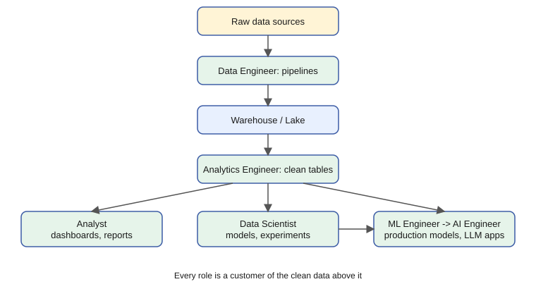
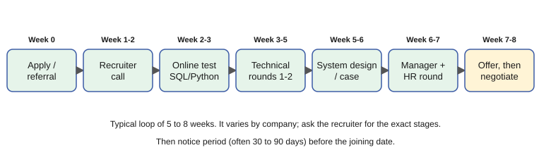
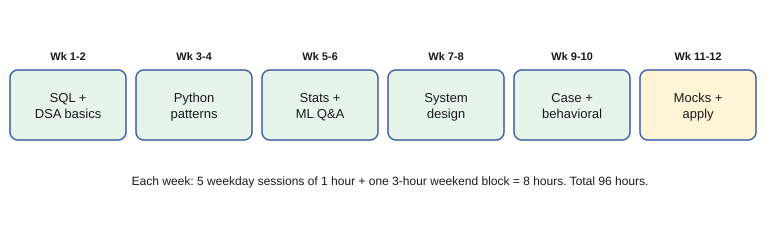
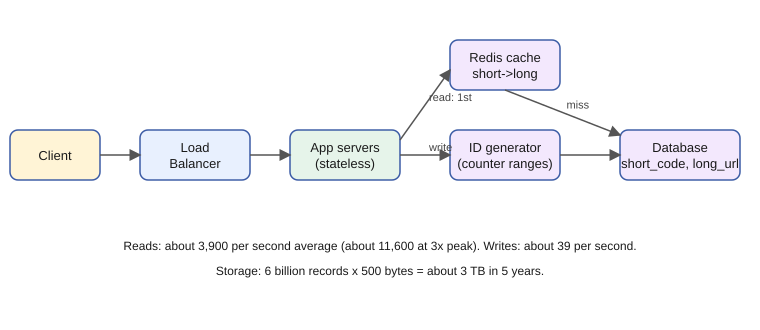
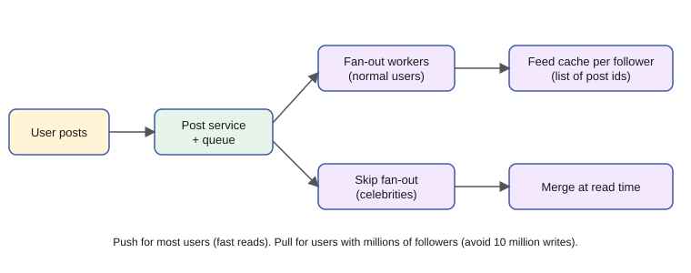
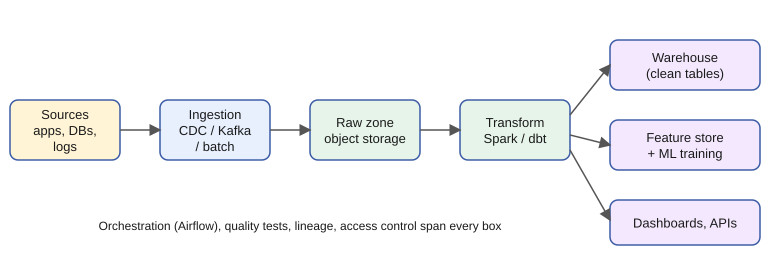
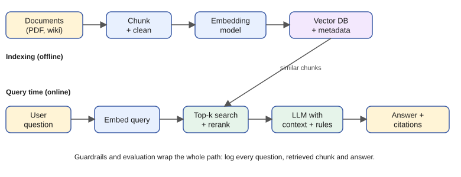
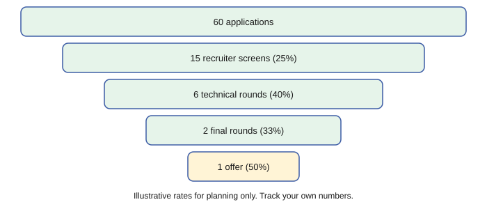

A practical mini-textbook for a working professional moving into data, ML and AI roles in India.
Taught the IIT Professor Way — Real Numbers. Real Problems. Real Understanding.
You already have a rare advantage. If you have spent time finding out why a process is slow, reading numbers, and explaining them to people who did not want to hear bad news, you have already done a version of data work. Here the object is a business or a model instead of a single process.
This document is about the parts of a career that nobody grades but everybody notices: how you learn, how you speak and write, how you solve problems, how you prepare for interviews, how you design systems, how you read research, how you present yourself, and how you look after your energy. These skills decide how far and how fast you grow, in every role.
I will be honest with you. There are no shortcuts here, and I will not invent salary numbers or promise a job in 90 days. I will give you methods, real numbers for planning, and templates that work. Some days you will feel behind. That feeling is common, and it is not proof that you are not good enough.
One rule above all: never move on until the current topic feels obvious. If a section is fuzzy, go back, do the worked problems again with the book closed, and teach it aloud to an imaginary beginner. A slow, solid step is faster than a fast, shaky one.
Every chapter ends with a recap (with a pattern cheat-sheet), a practice set of 8 to 12 problems with answers, and a prompt pack of 5 prompts for any AI assistant.
An appendix (99_cheatsheet.md) collects the key patterns and ends with an honest closing note.
Use this learning loop in every chapter:
Suggested pace: one chapter per week at about one hour a day. Chapters 1 to 7 are the foundation; do them first. Chapters 8 and 9 (system design) are best done together with a project. Chapters 10 to 14 can be taken in order of need: if you have an interview in a month, read 11, 12 and 7 first.
Use the prompt packs like this: paste a prompt, add your own details where marked [PASTE HERE], and answer the AI's questions in your own words. Never accept an answer you cannot explain back.
All free:
You want a better job, but the words "data analyst", "data engineer", "ML engineer" and "AI engineer" sound like one big blur. If you pick the wrong target, you will study the wrong things for a year. This chapter gives you a clear map. You will learn what each role does in a normal working day, which of your current skills already count, and how to plan your move in honest hours instead of wishes. By the end, you will be able to read any job description and say which role it really is, and you will have a first draft of your own transition story.
Titles differ by company. A "Data Scientist" at one company may do pure dashboards; at another, pure deep learning. Always read the job description (JD), not the title.
| Role | Morning | Afternoon | Biggest pain |
|---|---|---|---|
| Analyst | Check dashboard numbers, answer a stakeholder ping | Write SQL for a new question, make 3 charts | Vague questions, dirty data |
| Data Engineer | Check overnight pipeline failures | Build or fix a pipeline, code review | Late or broken upstream data |
| Data Scientist | Explore data, plan features | Train and compare models, write findings | Unclear target, messy labels |
| ML Engineer | Check model monitoring, drift alerts | Improve serving code, deploy | Models that work in a notebook but fail in production |
| AI Engineer | Review failed chatbot answers | Improve retrieval, prompts, evaluation set | Hallucinations, cost, latency |
| Analytics Engineer | Review dbt test failures | Model new tables, write docs | Definitions that differ by team |
Rate 0 (none) to 3 (heavy). These are rough, from the skill maps in this course.
| Skill | Analyst | DE | DS | MLE | AI Eng | Analytics Eng |
|---|---|---|---|---|---|---|
| SQL | 3 | 3 | 2 | 1 | 1 | 3 |
| Python | 1 | 3 | 2 | 3 | 3 | 1 |
| Statistics | 2 | 0 | 3 | 2 | 1 | 1 |
| ML | 0 | 0 | 3 | 3 | 2 | 0 |
| System design | 0 | 3 | 1 | 3 | 3 | 1 |
| Business sense | 3 | 1 | 3 | 1 | 2 | 2 |
Problem 1.1.1 You enjoy SQL and pipelines, dislike heavy statistics, and like systems thinking. Using the table, which two roles fit best?
| Step 1 | Pick the skills you like: SQL, system design. Dislike: statistics. |
|---|---|
| Step 2 | Add scores for SQL + system design, and subtract nothing for statistics except to remove roles where it scores 3. DE: 3 + 3 = 6, statistics 0. MLE: 1 + 3 = 4, statistics 2. Analytics Eng: 3 + 1 = 4. DS: 2 + 1 = 3, statistics 3 (bad fit). |
| Answer | Data Engineer first (6 points, no statistics), Analytics Engineer or ML Engineer second. This is a rough guide, not a law. |
| Check | Add the DE row again: 3 (SQL) + 3 (system design) = 6, and the statistics score is 0. Correct. |
| Why it matters | A simple score table stops you from chasing a role only because it is popular. |
Problem 1.1.2 A JD says "Data Scientist" but lists: Airflow, dbt, Snowflake, SQL, dashboards. Which role is it really?
| Step 1 | Count the keywords. Airflow, dbt and Snowflake are pipeline and warehouse tools. SQL and dashboards are analytics tools. |
|---|---|
| Step 2 | No model training or statistics keywords appear. |
| Answer | It is an Analytics Engineer or Data Engineer job with a misleading title. Decide whether you want that job before you apply. |
| Check | Look at the skill table: the keywords match the SQL = 3 and DE/Analytics Eng columns, not the ML column. In plain words: you will build tables and pipelines, not models. |
| Role | Example output | Where it appears in the job |
|---|---|---|
| Analyst | Weekly sales dashboard with 6 charts | Monday business review meeting |
| Data Engineer | Pipeline that loads 10 million rows nightly by 6 am | A bank's morning risk report |
| Data Scientist | Churn model with 0.80 AUC | Telecom retention campaign |
| ML Engineer | Model API answering in under 100 ms | Payment fraud check at checkout |
| AI Engineer | Chatbot answering from 5,000 HR documents | Employee help desk |
| Analytics Engineer | A tested orders table everyone trusts | Finance and marketing use the same revenue number |
The diagram below shows one flow. Read it top to bottom. Data starts raw at the top. Each role takes what the role above produced and makes it more useful. The Analyst and the ML/AI side are both customers of the clean tables.

Raw data sources
|
[Data Engineer] --> Warehouse / Lake
| |
[Analytics Engineer] --> clean tables --> [Analyst] --> dashboards
|
[Data Scientist] --> model idea
|
[ML Engineer] --> production model
|
[AI Engineer] --> LLM apps using the same dataSmall companies hire one "data person" who does all of this. Large companies split it into many roles. Your first job will probably touch two or three of these boxes. That is good: it shows you what you like.
Check yourself
The learner of this document is a working professional moving from a technical IT or testing role into data roles. That is the only background the document assumes; every example below is general.
| Skill many working professionals already have | Data/ML equivalent |
|---|---|
| Reading median and 95th-percentile waiting times (a hospital's appointment waits) | Percentiles, distributions, outliers in EDA |
| Planning for a busy day (customers per hour, time per customer) | Simulation, data generation, capacity plans |
| Finding why a queue at the bank is slow | Root-cause of a metric drop, model error analysis |
| Weekly reports for managers | Dashboards, executive summaries |
| Comparing this month's results with last month's | A/B tests, regression detection |
| Throughput, queues, Little's law | Pipeline throughput, streaming lag, autoscaling |
| Monitoring, SLAs | Data freshness SLAs, model monitoring |
Write your story in four parts: where I was, what I noticed, what I built, where I am going.
Example in simple English:
"For five years I worked in IT support for a retail company. I noticed that every week the help desk produced thousands of ticket rows, but we only looked at averages. I built a small pipeline that loads the tickets into a database and draws the 95th-percentile resolution time per week. It showed a slow trend two weeks before customers complained. I enjoyed the data part more than the ticket-closing part, so I studied SQL, Python and statistics for a year. Now I want to work on data platforms where reliability and speed matter."
Notice what this story does: it is true, it has one result, and it explains why you want to change.
Problem 1.2.1 Turn this weak bullet into a transition-story sentence: "I worked on reports for a company's help desk."
| Step 1 | Add object and tool: "I analysed help-desk tickets using SQL." |
|---|---|
| Step 2 | Add scale: "for a team handling up to 1,000 tickets a day." (Use your own true number.) |
| Step 3 | Add result and data angle: "I analysed 2 million ticket rows and found that one approval step was the bottleneck, which cut the 95th-percentile resolution time from 24 hours to 15 hours." |
| Answer | "I analysed help-desk tickets for a team handling up to 1,000 a day, studied 2 million rows, and found an approval bottleneck that cut the 95th-percentile resolution time from 24 hours to 15 hours." Check: (24 - 15) / 24 = 37.5% faster. Use only numbers that are true for you. |
| Why it matters | A sentence with scale, method and result is believable. "I worked on reports" is not. |
Problem 1.2.2 Which target role has the smallest gap for a working professional with strong SQL and scripting but no ML?
| Step 1 | List gaps. Analyst: BI tool and business sense. DE: pipelines, warehouse, orchestration. DS: statistics and ML (big gap). MLE: ML plus software engineering. |
|---|---|
| Step 2 | Your strengths (systems, scripting, reporting) match DE, Data Platform, and Observability-analytics best. |
| Answer | Data Engineer or Data Platform roles have the smallest gap. ML roles come after. |
| Check | Count gap items: DE has 3 gaps, DS has 2 big ones (statistics, ML) that each take months. A short gap list of familiar skills is a quicker climb. |
Operations Analytics, Data Platform, ML Platform, Observability/AIOps (using data to find and predict system problems). Few data people can answer "will this system survive 10 times the usual number of customers?" If you can reason about capacity and queues, you have an edge.
Interviewers love a clear story with one memorable project. See Chapter 11 for the project template and Chapter 7 for behavioral stories.
Check yourself
The course plan stages: Analyst skills (SQL, Python) first, then Data Engineering, then ML, then AI Engineering. Switching to a data role does not need all stages. Many people move after SQL + Python + one pipeline project + one dashboard project.
At 1 hour a day, you get about 365 hours a year. Check: 1 x 365 = 365. Most people need roughly 6 to 12 months of steady work to be interview-ready for a first data role. This is a rough guide; it varies a lot with background and target.
Problem 1.3.1 You study 1 hour on 5 weekdays and 3 hours on one weekend day. How many hours in 26 weeks?
| Step 1 | Weekly hours = 5 x 1 + 3 = 8. |
|---|---|
| Step 2 | 26 x 8 = 208. |
| Answer | 208 hours in half a year. If you miss 20% of weeks, expect about 166 hours. Plan for misses. |
| Check | 208 x 0.8 = 166.4. In plain words: about 6 months of effort is only about 4 full-time work weeks (166 / 40 = 4.2). |
Problem 1.3.2 You want 3 projects done in 26 weeks, each needing about 50 hours of work, plus 60 hours of theory. Is the plan feasible with 208 hours?
| Step 1 | Projects: 3 x 50 = 150. Theory: 60. Total 210. |
|---|---|
| Step 2 | 210 is more than 208, and you will miss some days. |
| Answer | Not feasible as written. Reduce to 2 projects (100 + 60 = 160 hours) or extend to 32 weeks. Honest planning prevents guilt. |
| Check | 210 / 8 hours per week = 26.25 weeks, so you need at least 27 weeks with zero missed days. With misses, 32 weeks is a fair choice. |
Month 0-3 SQL + Python basics, 1 small analysis project
Month 3-6 Pipelines, warehouse, dashboard project, start applying to analytics/DE roles
Month 6-9 Cloud basics, ML basics, operations-analytics project
Month 9-12 Mocks, interviews, internal transfer talks, referrals
(Stay in your current role until you hold a signed offer.)Start applying before you feel ready. Interview calls are themselves the best teacher. Chapter 12 gives the job-search system.
Check yourself
Pattern cheat-sheet
| Need | Pattern |
|---|---|
| Read a job description | Count tools, ignore the title |
| Percent improvement | (old - new) / old x 100 |
| Study hours per year | hours per week x weeks x (1 - missed share) |
| Transition story | Where I was, what I noticed, what I built, where I am going |
You are my patient, practical professor. I am a working professional in India moving to data roles; English is my second language, so use simple words. Teach me the differences between Data Analyst, Data Engineer, Data Scientist, ML Engineer, AI Engineer and Analytics Engineer. Explain step by step with a typical day for each, then ask me five questions one at a time to check I understand. Correct me kindly and finish with a table of skills by role.
You are my patient, practical professor. I am a working professional in India moving into data roles; English is my second language. Help me write my transition story in four parts: where I was, what I noticed, what I built, where I am going. Ask me questions first, one at a time. Then draft a 150-word version in simple English and a one-line version. Do not invent numbers; ask me for true ones. Here is my background: [PASTE HERE].
You are my patient, practical professor. I am a working professional moving into data roles in India. Topic: reading job descriptions to find the real role. I will paste 3 job descriptions. For each, tell me the real role, the tools that matter, my gap, and how many weeks of study the gap needs at 1 hour a day. Explain your reasoning in simple English. JDs: [PASTE HERE].
You are my patient, practical professor. I am a working professional in India learning data skills, 1 hour a day. Topic: planning a 6-month career transition. Give me 8 graded exercises on estimating study hours, setting stage goals and planning for missed days. Do not give solutions yet. After I answer each, give feedback and fix my arithmetic.
You are my patient, practical professor. I am a working professional moving into data. Run a mock interview for a Data Platform role: ask "Tell me about yourself" and "Why data?" and three follow-ups, one at a time. After each answer give feedback on clarity, evidence and numbers, then show a better version in simple English. My first answer: [PASTE HERE].
You will study for years while you work full time, so the way you study matters more than the number of courses you buy. Many learners watch ten hours of video and remember almost nothing a week later. That is not a lack of talent. It is a method problem, and methods can be changed. In this chapter you will learn the study techniques that research supports, how to set up a one-hour session, how to stop jumping between courses, and how to protect your energy. By the end you will have a weekly routine you can actually keep.
| Bad card | Good card |
|---|---|
| "Explain gradient descent" (too big) | "In gradient descent, which direction do we move the weights?" Answer: against the gradient (downhill) |
| "p-value" | "A p-value of 0.03 means what, in one sentence?" |
| Copy of a paragraph | A small cloze: "A window function does not {{collapse}} rows" |
Problem 2.1.1 You learn "what is an index in SQL" on Monday 9 November 2026. Use gaps of 1, 3, 7, 14, 30 days. When are the reviews?
| Step 1 | Day 0 is Monday 9 Nov. Add 1 day: Tue 10 Nov. |
|---|---|
| Step 2 | Add 3 days: Fri 13 Nov. Add 7: Fri 20 Nov. Add 14: Fri 4 Dec. Add 30: Sun 3 Jan 2027. (Computed with Python.) |
| Answer | Reviews on 10 Nov, 13 Nov, 20 Nov, 4 Dec and 3 Jan. That is 5 reviews, about 30 seconds each, so 2.5 minutes of work per card for a lasting memory. |
| Check | Total days from learning to the last review: 1 + 3 + 7 + 14 + 30 = 55. From 9 Nov plus 55 days is 3 Jan. Correct. In plain words: 2.5 minutes spread over 55 days buys months of memory. |
Problem 2.1.2 You add 5 new cards a day. How many cards after 60 days, and is it affordable at 10 minutes of Anki per day?
| Step 1 | 5 x 60 = 300 cards. |
|---|---|
| Step 2 | Each card needs 5 reviews x 0.5 min = 2.5 min over its life. 300 x 2.5 = 750 minutes in total across 60+ days, about 12.5 minutes per day averaged over 60 days. |
| Answer | It is slightly above 10 minutes. Reduce to 3 or 4 new cards a day, and write only cards for things you really need. Quality over quantity. |
| Check | 750 / 60 days = 12.5 min per day. At 4 new cards a day: 240 cards x 2.5 = 600 min; 600 / 60 = 10 min per day. Matches the budget. |
| What you learn | Card example | Where it appears in the job |
|---|---|---|
| SQL syntax | "Which clause filters groups after GROUP BY?" HAVING | SQL screen in interviews |
| Statistic definition | "What does p95 mean?" | Every business report and A/B test |
| System numbers | "Seconds in a day?" 86,400 | System design estimation (Chapter 8) |
| Vocabulary | "What is idempotent?" | Pipeline design discussions |
Read the curve like this. The vertical axis is how strongly you remember. The horizontal axis is days. Without review, the line falls fast. Each review lifts it back up, and after each review it falls more slowly, so the next review can wait longer.
Memory strength
|*
| * *
| * review / * *
| * | / * | / *
| * v / * v/ * (each review lifts it and slows the fall)
+------------------------------> days
0 1 4 11 25SQL syntax, window functions, Python idioms, metrics definitions and system design numbers are all recall skills in an interview. Put the "numbers to remember" (e.g. 1 day = 86,400 seconds) on cards.
Check yourself
| Minutes | Activity |
|---|---|
| 0-10 | Recall: Anki reviews and "what did I learn yesterday" from memory |
| 10-40 | Build or solve problems on today's topic (no copy-paste) |
| 40-50 | Interleave: 2 old-topic problems |
| 50-60 | Teach back aloud, then write 2 cards and 1 log line |
Problem 2.2.1 You have 8 SQL practice problems: 4 joins, 4 window functions. Show an interleaved order versus a blocked order, and say which gives better learning.
| Step 1 | Blocked: J J J J W W W W. You know the next problem type, so you skip the decision "which tool?". |
|---|---|
| Step 2 | Interleaved: J W J W W J W J. You must first recognise the pattern, as in a real interview. |
| Answer | Interleaved. It feels harder and slower, but it trains the skill the interview tests: recognising which pattern to use. |
| Check | In an interview nobody tells you "this is a join question". Recognising the pattern is half the marks. |
Problem 2.2.2 Your weak spot is "GROUP BY with HAVING". Design deliberate practice for one week.
| Step 1 | Specific goal: write correct GROUP BY / HAVING queries in under 5 minutes. |
|---|---|
| Step 2 | Daily 3 problems of rising difficulty; check against a known answer or run on sample data. |
| Step 3 | After each miss, write the cause on one line ("used WHERE instead of HAVING"). |
| Answer | After 7 days you have about 21 attempts and a list of 3 to 4 repeated errors. Turn each into a flashcard. |
| Check | 3 problems x 7 days = 21. If the error list is empty, the problems were too easy: raise the difficulty. |
Teaching back is what you will do in stand-ups, code reviews and interviews. If you cannot explain a model to a manager, you do not fully own it yet.
Check yourself
Problem 2.3.1 You start 5 courses, each 30 hours, and finish 20% of each. How many hours spent and how many courses completed? What if you finished one?
| Step 1 | 5 x 30 x 0.20 = 30 hours spent, 0 courses complete. |
|---|---|
| Step 2 | Finishing one course: 30 hours, 1 course complete, 1 certificate-worthy skill. |
| Answer | The same 30 hours buys either 0 finished courses or 1. Hopping has the same cost and zero finished output. |
| Check | 5 x 6 hours (20% of 30) = 30 hours. Same hours, different result. |
Problem 2.3.2 Your parking lot has 12 courses. You can finish 1 course every 6 weeks at 1 hour/day. How long does the whole list take, and what do you do?
| Step 1 | 12 x 6 = 72 weeks, about 16.6 months. |
|---|---|
| Step 2 | Most courses overlap in content. |
| Answer | You will never finish all. Keep the 2 that fix your biggest current gap, delete the rest, and re-check the list in a month. |
| Check | 72 / 4.33 weeks per month = 16.6 months. Correct. |
Companies pay for finished things: a pipeline running every day, a deployed model. Finishing is a professional habit.
Check yourself
Problem 2.4.1 You have 10 free hours a week. Option A: 10 hours on Sunday. Option B: 1.5 hours a day for 7 days (10.5 h). Compare using spacing.
| Step 1 | In A you meet each topic once a week: one exposure, a gap of 7 days. |
|---|---|
| Step 2 | In B you meet topics daily; Anki gaps 1, 3, 7 become possible. |
| Answer | B gives about the same hours but much better retention, and is less tiring. Use A only for big project days on top of B. |
| Check | 1.5 x 7 = 10.5 hours. In plain words: spreading the same hours across the week is the same cost with a better result. |
Problem 2.4.2 You miss 3 days in a 30-day month at 1 hour/day. How much did you lose and what do you do?
| Step 1 | 27 hours studied instead of 30, so you studied 90%. |
|---|---|
| Step 2 | Never "make up" 3 hours in one night; just continue tomorrow. |
| Answer | You lost 3 hours (10%). A 90% month is excellent. Restart without guilt. |
| Check | 27 / 30 = 0.90. You still studied 27 hours, which is more than most people study in a year of good intentions. |
Energy budget (a 24-hour day)
Sleep 7-8h | Job 9h | Commute/chores 4h | Family/rest 3h | STUDY 1h
Study fits only if sleep is protected.Data careers take years. People who stay consistent for 3 years beat people who sprint for 3 months. Burnout stops your career; rest prolongs it.
Check yourself
Pattern cheat-sheet
| Need | Pattern |
|---|---|
| Review schedule | Gaps of 1, 3, 7, 14, 30 days |
| New cards per day | 3 to 5 maximum |
| One-hour session | 10 recall, 30 build, 10 interleave, 10 teach back |
| Video to practice ratio | 20 minutes video : 40 minutes doing |
| Focus blocks | Pomodoro 25 on, 5 off |
You are my patient, practical professor. I am a working professional in India learning data skills for 1 hour a day; English is my second language. Teach me active recall and spaced repetition for technical topics. Explain step by step with a worked example for SQL, then show me how to write 5 good Anki cards from a topic I give. Then quiz me one question at a time to check I understand the difference between a good and a bad card.
You are my patient, practical professor. I am a working learner in India moving into data roles. Topic: interleaving and deliberate practice. Create a 1-week practice schedule (1 hour a day) that mixes SQL, Python and statistics. Show which problems to interleave and why. Then ask me what my weakest topic is and design a deliberate practice plan for it with fast feedback. My weak topic: [PASTE HERE].
You are my patient, practical professor. I am a working professional learning data skills; I keep switching courses. Topic: avoiding resource hopping. Ask me about my current courses and projects, then help me choose one resource and one project, define "finished" for each, and build a parking lot list. Give me a simple weekly review template. My current list: [PASTE HERE].
You are my patient, practical professor. I study 1 hour a day while working full time in India. Topic: energy, sleep and consistency. Review my weekly routine and suggest changes that protect sleep and keep a fixed study slot. Be realistic and kind. Also tell me signs that I should talk to a counselor. My routine: [PASTE HERE].
You are my patient, practical professor. I am a working professional moving to data. Topic: teaching back. I will explain a concept to you as if you are a beginner. Find gaps, ask follow-up questions a beginner would ask, and grade my explanation on clarity from 1 to 5. Then show a better version in simple English. The concept I will explain: [PASTE HERE].
In every data job you will speak: in stand-ups, in meetings with business people, in interviews, and when you explain a result to a manager. Many strong engineers lose offers, not because they lack skill, but because the interviewer could not follow their explanation. This chapter gives you a daily 10-minute routine, a phrase bank you can copy, two simple structures for almost every answer, and a method for handling questions you cannot answer. By the end you will be able to give a 60-second status update and a clear two-minute explanation of a technical idea, and you will know how to practise alone.
| Word | Meaning |
|---|---|
| Shadowing | Playing a recording and repeating each sentence right after the speaker, copying rhythm and sound |
| Rhythm | Which words are strong and which are soft in a sentence |
| Filler | Sounds like "umm", "you know" used while thinking |
| Phrase bank | Your own notebook of ready-made sentences |
Do not memorise word lists. Take 5 phrases from your real work or a tech talk, write them in a sentence of your own, and put each on an Anki card (Chapter 2). Example: "We are blocked on access" (you cannot proceed because you lack permission).
Problem 3.1.1 You speak at 110 words per minute (wpm) and a good explanation target is 130 wpm. Your 2-minute recording has 190 words. Is the problem speed or length?
| Formula | words per minute = words / minutes |
|---|---|
| Plug in | 190 / 2 |
| Compute | 190 / 2 = 95 wpm |
| Answer | You speak at 95 wpm, slower than the 110 you thought, and well below 130. A slow pace is fine for clarity; the real issue is long pauses and fillers. Next day, fix one thing: remove long pauses by planning your first sentence. |
| Check | At 130 wpm, 2 minutes is 260 words. You said 190, which is 190 / 260 = 73% of that. Matches "slower than target". |
| Why it matters | Numbers turn a vague feeling ("my English is bad") into one fixable thing. |
Problem 3.1.2 You do the 10-minute routine for 5 days a week for 12 weeks. How many hours is that?
| Formula | total minutes = minutes per day x days per week x weeks |
|---|---|
| Plug in | 10 x 5 x 12 |
| Compute | 10 x 5 = 50, and 50 x 12 = 600 minutes |
| Answer | 600 minutes = 10 hours. Ten hours of recorded practice in a quarter is more speaking practice than most people do in a year. |
| Check | 600 / 60 = 10 hours. Correct. |
Day 1: explain ----> record ----> listen ----> pick ONE fix
|
Day 2: explain <----------------------------------+
(apply the fix) repeat every dayRead it as a loop. The arrow back from "pick ONE fix" to the next day is the whole method. One fix per day, not ten.
Stand-ups, demos and interviews are short spoken tests. A learner who has recorded 40 explanations is calm in them.
Check yourself
| Situation | Say this |
|---|---|
| Agree | "I agree with that." / "That makes sense to me." |
| Disagree politely | "I see your point. Can I share a different view?" / "I am not sure that will work, because..." |
| Ask for clarification | "Could you explain that a little more?" / "When you say 'users', do you mean all users or active users?" |
| Confirm understanding | "So to confirm, you want X by Friday, is that right?" |
| Buy time | "Let me check and get back to you." / "That is a good question. Give me a moment to think." |
| Say you do not know | "I do not know yet. I will find out and reply by tomorrow." |
| Interrupt politely | "Sorry to jump in, can I add one point?" |
| Ask for repetition | "Sorry, could you say that again, a little slower?" |
| Give a status | "I have finished A, I am working on B, I am blocked on C." |
| Raise a risk | "One risk I see is... The impact would be... I suggest..." |
| Close a meeting | "Let me summarise the actions: Ravi will do X by Monday, I will do Y by Wednesday." |
A stand-up is a short daily meeting where each person says what they did. Use this order: what I did, the result, what is next, blockers. A blocker is anything that stops your work.
Sample 60-second stand-up (68 words, checked by code; at 130 wpm this is about 31 seconds):
"Yesterday I finished the SQL query for the weekly sales report and tested it on one month of data. The result matches the old report. Today I will add the region filter and send it for review. I have one blocker: I do not have access to the returns table. I have asked the data owner, and I will follow up this afternoon if there is no reply."
Problem 3.2.1 Turn this vague status into the four-part structure: "Working on the pipeline, some issues."
| Step 1 | What I did: "I fixed the null-value error in the orders load." |
|---|---|
| Step 2 | Result: "The nightly run now finishes in 22 minutes instead of failing." |
| Step 3 | Next: "Today I will add a row-count check." |
| Step 4 | Blockers: "I need read access to the staging bucket; I raised a ticket yesterday." |
| Answer | "I fixed the null-value error in the orders load. The nightly run now finishes in 22 minutes instead of failing. Today I will add a row-count check. I need read access to the staging bucket, and I raised a ticket yesterday." |
| Check | The new status has 4 parts, 1 number, and a clear ask. The old one had none of these. (Use only real numbers.) |
| Why it matters | Managers who hear "some issues" must ask more questions; managers who hear the structure can help in 10 seconds. |
Problem 3.2.2 A colleague asks, "Can you finish the report today?" You are not sure. Use the phrase bank to answer in two sentences, without promising or refusing.
| Step 1 | Buy time: "Let me check my tasks and get back to you." |
|---|---|
| Step 2 | Give a time: "I will reply by 2 pm." |
| Answer | "Let me check my tasks and get back to you. I will reply by 2 pm with a clear time." |
| Check | The answer is honest (no false promise), polite and has a deadline. That matters more than a quick "yes" you cannot keep. |
Meeting flow Phrase to use
Listen -> (nod, take notes)
Not clear? -> "Could you explain that a little more?"
Understand? -> "So to confirm, ..."
Need to disagree? -> "I see your point. Can I share a different view?"
End -> "Let me summarise the actions..."Business people often use words loosely ("customer", "active"). The phrase "When you say X, do you mean...?" prevents weeks of wrong work. This is the first step of the problem-solving method in Chapter 6.
Check yourself
Point, Reason, Example, Point again. Say your answer first, then why, then a real case, then repeat the answer.
Sample (55 words):
"I would choose a median here. The reason is that salaries have a few very large values, and those pull the average up. For example, if five people earn 30, 32, 35, 36 and 400 thousand, the average is 106.6 thousand but the median is 35 thousand. So the median describes a typical person better."
A behavioral question asks about your past ("Tell me about a time you..."). The company wants to see how you act. Situation, Task, Action, Result. Spend about 15% on Situation and Task, 60% on Action, 25% on Result. Say "I", not only "we", because they hire you.
Sample (66 words):
"At my company a new ordering page was due on Friday. On Wednesday, our timing check showed the checkout page taking 4 seconds at the 95th percentile. My task was to find the cause before Friday. I checked the database logs and saw one query without an index. I added the index and measured again. The 95th percentile fell to 1.6 seconds, and we released on time."
(Your own story must be true. Chapter 7 gives eight story templates.)
Problem 3.3.1 Check the sample numbers. The median of 30, 32, 35, 36, 400 and the average?
| Step 1 | Sort: 30, 32, 35, 36, 400. Five values, so the median is the 3rd value. |
|---|---|
| Step 2 | Median = 35. |
| Step 3 | Sum = 30 + 32 + 35 + 36 + 400 = 533. Average = 533 / 5 = 106.6. |
| Answer | Median is 35 thousand; average is 106.6 thousand. The one big value of 400 pulls the average to three times the median. |
| Check | Ran in Python: (30+32+35+36+400)/5 gives 106.6. |
| Why it matters | The example in the "E" of PREP must have real numbers or the listener will not believe it. |
Problem 3.3.2 Rewrite this rambling answer to "Why SQL over Excel for 5 million rows?" in PREP: "Well, Excel is good, but there are limits, and I think databases are used in companies, and also..."
| Step 1 | Point: "I would use SQL." |
|---|---|
| Step 2 | Reason: "Excel allows about 1 million rows per sheet, so 5 million rows will not even open." |
| Step 3 | Example: "In my last report, a query on 5 million rows ran in a few seconds in the database." |
| Step 4 | Point: "So for this size, SQL is the right tool." |
| Answer | "I would use SQL. Excel allows about 1 million rows per sheet, so 5 million will not fit. For example, I ran a report on 5 million rows in a database and it finished in seconds. So SQL is the right tool here." (Excel's limit is 1,048,576 rows per sheet.) |
| Check | 5,000,000 / 1,048,576 = 4.8, so you would need five sheets. The reason holds. |
At about 130 words per minute: a 60-second answer is about 130 words, 2 minutes is about 260 words. A good interview answer is 1 to 2 minutes. A STAR story is 2 minutes.
| Answer type | Target | Words at 130 wpm |
|---|---|---|
| "Tell me about yourself" | 90 seconds | about 195 |
| Technical explanation (PREP) | 60 seconds | about 130 |
| STAR story | 2 minutes | about 260 |
| Stand-up update | 30 to 45 seconds | 65 to 100 |
PREP: [Point] -> [Reason] -> [Example] -> [Point]
STAR: [Situation 15%] [Task] -> [Action 60%] -> [Result 25%]
Status:[Did] -> [Result] -> [Next] -> [Blockers]Read left to right. Each box is one or two sentences. If you cannot say what box you are in, you are rambling.
Interviewers give you 20 seconds of patience before they decide whether you are clear. Starting with the answer (Point) wins that 20 seconds.
Check yourself
Slide plan for a 5-minute talk (one message per slide):
| Slide | Message | Time |
|---|---|---|
| 1 | The problem and why it matters (with a number) | 45 s |
| 2 | Approach in 3 steps | 60 s |
| 3 | Result: the one key chart | 90 s |
| 4 | Recommendation and next step | 45 s |
| 5 | Risks and questions | 60 s |
Practise with a timer. If you take 7 minutes at home, you will take 8 on stage. Cut a slide.
English has regional variations; these are the commonly accepted forms, and pronunciations in India and abroad can differ slightly. Capital letters show the strong syllable.
| Word | Say it like |
|---|---|
| cache | "cash" |
| queue | "kyoo" |
| latency | "LAY-ten-see" |
| median | "MEE-dee-un" |
| parameter | "puh-RAM-uh-ter" |
| algorithm | "AL-guh-rith-um" |
| Kubernetes | "koo-ber-NET-eez" |
| nginx | "engine-X" |
| regex | "REJ-eks" |
| async | "AY-sink" |
| SaaS | "sass" |
| SQL | "S-Q-L" or "sequel" (both are used) |
| Jira | "JEE-ruh" |
| PyTorch | "PIE-torch" |
| scikit-learn | "SY-kit learn" |
| Hadoop | "huh-DOOP" |
| GUI | "GOO-ee" |
| dbt | "D-B-T" (say each letter) |
Problem 3.4.1 A senior engineer asks in a design review: "What happens if the upstream file arrives two hours late?" You do not know. Write the reply.
| Step 1 | Pause and restate: "So you are asking what happens to the downstream tables if the file is late." |
|---|---|
| Step 2 | Give what you do know: "The pipeline starts at 2 am and has no retry after 4 am." |
| Step 3 | Be honest: "I have not tested a two-hour delay. My guess is that the job fails and the dashboard shows yesterday's data." |
| Step 4 | Promise follow-up: "I will test it and share the result by Thursday." |
| Answer | A reply of four short sentences that restates the question, shares known facts, gives a labelled guess, and promises a date. |
| Check | It has no bluff and it gives a next action. A bluff can be caught; honesty builds trust. |
Problem 3.4.2 Plan a 5-minute presentation: you have 7 slides. Each slide takes 1 minute to say. Fix it.
| Step 1 | Total time = 7 x 1 = 7 minutes, so you are 2 minutes over. |
|---|---|
| Step 2 | Remove two slides: merge approach details into one slide and move extra charts to an appendix. |
| Answer | Keep 5 slides at 1 minute each (or the table above). Extra material goes in a backup slide for Q&A. |
| Check | 5 x 1 = 5 minutes. In plain words: a short talk you finish is better than a long one you rush. |
Question arrives -> [PAUSE 2 s] -> [RESTATE] -> [ANSWER brief]
|
know it? yes -> PREP
no -> honest guess + promiseIn interviews, how you handle a question you cannot answer is often scored more than a perfect answer. In real work, saying "I will find out" is a professional habit.
Check yourself
Pattern cheat-sheet
| Need | Pattern |
|---|---|
| Explain a concept | PREP: Point, Reason, Example, Point |
| Behavioral answer | STAR with 15 / 60 / 25 time split |
| Stand-up | Did, result, next, blockers |
| Buy time | "Let me check and get back to you" |
| Do not know | "I do not know yet. My guess is... I will find out by..." |
| Answer length | words = minutes x 130 |
You are my patient, practical professor. I am a working professional in India moving into data roles; English is my second language. Teach me the PREP structure (Point, Reason, Example, Point) for explaining technical ideas. Show 3 worked examples (SQL, statistics, pipelines), then give me 5 concepts one at a time. I will answer in PREP, and you will correct my structure and grammar kindly and show a better version in simple English.
You are my patient, practical professor. I am a working professional in India moving to data roles; English is my second language. Topic: the STAR method for behavioral interview answers. Interview me with 8 behavioral questions one at a time (conflict, failure, ambiguity, deadline, mistake, influence, leadership, learning fast). After each answer, score Situation, Task, Action and Result and show a 2-minute improved version. My story notes: [PASTE HERE].
You are my patient, practical professor. I am a working professional in India; English is my second language. Topic: a phrase bank for meetings. Give me 10 realistic meeting scenarios in a data team (late data, unclear metric, disagreement on deadline). For each, I will reply and you will check politeness, clarity and grammar, and offer a better sentence. Start with scenario 1 now.
You are my patient, practical professor. I am a working professional moving into data. Topic: handling Q&A when I do not know the answer. Ask me 8 technical questions that are slightly beyond my level, one at a time. I will answer; you will assess whether I paused, restated, answered briefly, and was honest, then show how a calm professional would reply in simple English.
You are my patient, practical professor. I am a working professional in India; English is my second language. Topic: my daily 10-minute speaking routine and pronunciation of tech words. Build me a 4-week plan with one concept per day and one thing to fix per week. Include a list of 30 tech words with simple respellings, flagging any where pronunciation varies. Then ask me to say a 60-second explanation in text and review it.
In a data job, your SQL or model may be perfect and still be ignored if your message is confusing. Remote and hybrid teams, and global companies with teams in many time zones, depend on writing. This chapter shows you how to write an email that gets a reply, a README that lets a stranger run your project, a design record that explains why you chose something, a Slack question that gets a fast answer, and a weekly post that builds your name. By the end you will have four templates you can copy and use this week.
An executive summary is a short top section of a report for busy leaders. Format: one line with the headline result and a number, then 3 bullets of evidence, then a recommendation, then risks.
| Word | Meaning |
|---|---|
| Stakeholder | A person who cares about or depends on your work |
| Ask | The thing you want the reader to do |
| BLUF | "Bottom line up front": conclusion first |
| Executive summary | One page, numbers first |
Problem 4.1.1 Rewrite this email. Subject: "Hi". Body: "I was checking the pipeline and there were some things, the load took long, and I think maybe we need more memory, let me know your thoughts."
| Step 1 | Make the subject carry the ask: "Approval needed: raise pipeline memory from 8 GB to 16 GB". |
|---|---|
| Step 2 | Lead with the conclusion: "I recommend doubling the pipeline memory to 16 GB." |
| Step 3 | Add evidence in bullets (use true numbers; these are an example): "Nightly load now takes 3 h 10 min, past the 2 h target. Memory is at 95% for the last 40 minutes. A test with 16 GB finished in 1 h 20 min." |
| Step 4 | Next steps: "Please approve by Friday. I will make the change Saturday night." |
| Answer | A subject, a one-line recommendation, 3 evidence bullets and an approval request with dates, about 70 words. |
| Check | Time saved: 3 h 10 min = 190 min and 1 h 20 min = 80 min, so (190 - 80) / 190 = 57.9% faster. The email can be understood in 10 seconds. |
| Why it matters | The reader can approve without a meeting. |
Problem 4.1.2 Write a one-line headline for an executive summary. Facts: in the south region the price rose from 100 to 110 rupees, and units sold fell by 12%. What happened to revenue?
| Formula | revenue = price x units |
|---|---|
| Plug in | price change factor = 110 / 100 = 1.10; units change factor = 1 - 0.12 = 0.88 |
| Compute | revenue factor = 1.10 x 0.88 = 0.968, so revenue changed by 0.968 - 1 = -0.032, which is -3.2% |
| Answer | "In the south region, a 10% price rise cut units by 12%, so revenue fell about 3.2%." |
| Check | Take 1,000 units at 100 rupees = 100,000. After the change: 880 units x 110 = 96,800. (100,000 - 96,800) / 100,000 = 3.2%. Matches. |
| Why it matters | In plain words: the price rise did not pay for itself. Writing numbers forces you to calculate them, and a summary with wrong numbers destroys trust. |
Read it from top to bottom: it is the order of lines in the email.
Subject: [ASK + DEADLINE]
Line 1: Conclusion / request
Bullets: evidence (3-5)
Last: who does what by whenWeekly status mails, incident reports (what broke, impact, cause, fix, prevention) and stakeholder updates all follow this shape. A monthly sales report is already an executive summary if you put the numbers first.
Check yourself
| Document | Purpose | Reader |
|---|---|---|
| README | How to understand and run a project | New user or hiring manager |
| Design doc | What we will build and why, before building | Team and reviewers |
| ADR (Architecture Decision Record) | One decision, its reasons and alternatives | Future team members |
| Runbook | Step-by-step fix for a known problem | On-call engineer at 2 am |
| Data dictionary | Each column's meaning, type and source | Analysts and engineers |
# Project name
One sentence: what problem it solves.
## Result
One headline number or screenshot.
## How to run
1. git clone ...
2. pip install -r requirements.txt
3. python main.py
## How it works
Short diagram + 5 bullets.
## Data
Source, size, license.
## Decisions and limits
What I chose and why; what does not work yet.
## Next steps# ADR 003: Use Postgres for the orders store
Status: Accepted (2026-11-07)
Context: We need transactions and queries by customer; 5 million rows/year.
Decision: Use Postgres.
Alternatives considered: MongoDB (flexible, but we need joins), DynamoDB (cost model unclear).
Consequences: Plan for read replicas after 50 million rows. Easy for the team (SQL skills).An ADR is short (half a page). Its value is the reasons: in two years nobody remembers why. Write what was decided, when, and what you would revisit.
Problem, goals and non-goals, proposed design (diagram), alternatives, risks, rollout plan, open questions. Share it before building. Reviewers find problems when they are cheap to fix.
Alert: nightly_orders_load failed
1. Open Airflow, find the failed task, read the last 50 log lines.
2. If error is "connection timeout": re-run the task once.
3. If it fails again: check the source DB status page; message #data-oncall.
4. If row count < 90% of yesterday: do NOT publish; notify finance.
Owner: Data Platform team. Last tested: 2026-10-15.Problem 4.2.1 Write a one-sentence README opening for a project that loads a school's exam results into a database and charts the average mark by class.
| Step 1 | State the problem: engineers cannot compare p95 across releases. |
|---|---|
| Step 2 | State the solution and tools: a pipeline in Python and SQLite with a chart per release. |
| Answer | "This project loads exam result files into a database and draws the average mark for every class, so a drop can be seen in seconds." |
| Check | Does it say what, for whom, and why? What: loads and draws. Who: engineers (implied). Why: find a regression. It is one sentence of 25 words. |
| Why it matters | Hiring managers read the first line only. Make it count. |
Problem 4.2.2 Write the key line of an ADR for choosing batch (nightly) over streaming for a daily sales report.
| Step 1 | Facts: the report is read once at 9 am; data is available at 1 am; streaming needs more infrastructure. |
|---|---|
| Step 2 | Decision: batch. |
| Answer | "Decision: use a nightly batch job at 2 am, because the report is read once a day at 9 am and streaming adds cost and complexity without a user benefit. Revisit if the business needs hourly numbers." |
| Check | The ADR includes the reason and the condition to revisit. Both matter. In plain words: a decision without a reason cannot be challenged or improved. |
Idea -> Design doc (before) -> Build -> README (how to run) -> Runbook (how to fix)
|
ADRs record each important decision along the wayRead left to right: documents are written at different moments for different readers.
Interview take-homes and portfolio projects are judged on README quality. In companies, a good runbook reduces 2 am calls.
Check yourself
"Hi team, I am loading a CSV of 2 million rows into Postgres with Python. Goal: finish in under 10 minutes. I tried
pandas.to_sqlwith default settings; it took 47 minutes and used 6 GB RAM. I also triedchunksize=50000: 21 minutes. A minimal example and the schema are in the thread. Any suggestion on bulk loading?"
Problem 4.3.1 Rewrite this message: "My code is not working, please help."
| Step 1 | Goal: "I am joining orders and customers in pandas." |
|---|---|
| Step 2 | Tried: "I used orders.merge(customers, on='cust_id')." |
| Step 3 | Expected vs actual: "Expected 1,000 rows, got 1,200." |
| Step 4 | Find the clue and add a minimal example: "customers.cust_id has duplicate ids; here are 5 sample rows from each table." |
| Answer | "I am joining orders (1,000 rows) with customers using orders.merge(customers, on='cust_id'). I expected 1,000 rows but got 1,200. I checked and 200 orders match a duplicated cust_id. Here are 5 sample rows from each table. Should I drop duplicates first, or is there a better key?" |
| Check | The numbers explain the bug: 1,000 + 200 extra matches = 1,200. A reader can answer at once: deduplicate customers. |
| Why it matters | Writing the question often answers it. Many engineers say "while writing the question I found the bug." |
Problem 4.3.2 A colleague is in a UTC team. It is 5 pm IST for you. What time is it in UTC, and when might a reply come?
| Formula | UTC = IST - 5 h 30 min (IST is the Indian time zone; it is 5 h 30 min ahead of UTC) |
|---|---|
| Plug in | 17:00 - 5:30 |
| Compute | 11:30 |
| Answer | It is 11:30 UTC. A UTC colleague's day ends around 17:00 UTC, which is 22:30 IST, so a reply could come late at night or the next morning your time. Send a complete question so they can answer in one go. |
| Check | 11:30 + 5:30 = 17:00 IST. Correct. |
| Why it matters | A half-written question across time zones costs a full day per round trip. |
Bad: "Help" -> reply: "What is the problem?" -> 1 day lost
Good: goal + tried + expected/actual + example -> reply: the answerSenior people judge junior people by their questions. A clean question shows you tried first and respect their time. It is also how you get answers from open-source communities (Chapter 14).
Check yourself
Title: What I learned: window functions in 20 minutes
1 line: the problem I had
3-5 lines: what I did (with a small code snippet or number)
1 line: the mistake I made
1 line: what I will try nextNever post confidential company data, client names, internal numbers or screenshots from work. Use public or simulated data. Check your employment contract if unsure.
Problem 4.4.1 You plan 52 short posts (45 minutes each) and 24 blog posts (3 hours each) a year. How many hours is that, and is it realistic?
| Formula | time = posts x hours per post + blogs x hours per blog |
|---|---|
| Plug in | 52 x 0.75 + 24 x 3 |
| Compute | 52 x 0.75 = 39 hours; 24 x 3 = 72 hours; total = 111 hours |
| Answer | About 111 hours a year, or 2.1 hours a week. That is too heavy if you only study 7 hours a week. |
| Check | 111 / 52 = 2.13. With 12 blogs instead (36 hours) the total is 75 hours, 1.4 hours a week. The skill map says 2 posts a month is plenty; here 12 blogs a year is even lighter, and you can still do it. |
| Why it matters | Plan the writing load honestly or you will drop it after 3 weeks. |
Problem 4.4.2 Make this sentence shorter: "In this particular post I would like to try to explain in some detail about how it is that joins work."
| Step 1 | Remove filler: "In this particular post", "I would like to try to", "in some detail", "how it is that". |
|---|---|
| Step 2 | Keep subject, verb, object. |
| Answer | "This post explains how joins work." That is 6 words instead of 21. |
| Check | The original has 21 words (count them). 21 - 6 = 15 words saved, about 71% shorter, with the same meaning. |
Learn something -> write 120 words -> post on Tuesday -> comments -> next idea
^ |
+---------------------------------------------------------+Chapter 11 turns your posts into a portfolio. Recruiters and referrers read your last 5 posts to judge if you are real.
Check yourself
Pattern cheat-sheet
| Need | Pattern |
|---|---|
| Subject = ask; line 1 = conclusion; bullets; next steps | |
| README | One sentence, result, how to run, how it works, limits |
| ADR | Status, context, decision, alternatives, consequences |
| Question | Goal, tried, expected vs actual, minimal example |
| Weekly post | Problem, what I did, mistake, next |
| Time zone | UTC = IST - 5 h 30 min |
You are my patient, practical professor. I am a working professional in India moving into data roles; English is my second language. Teach me how to write work emails: subject with the ask, conclusion first, bullets, next steps. Show 3 bad emails and fix each step by step. Then give me 5 scenarios one at a time (approval request, delay notice, incident summary, status, clarification). Review each of my drafts and show a shorter version.
You are my patient, practical professor. I am a working professional moving to data engineering; English is my second language. Topic: README files, design docs and ADRs. Explain the purpose of each with a tiny example, then review my README for a project: [PASTE HERE]. Point out missing parts, vague sentences and what a hiring manager would not understand in 10 seconds. Give a rewritten version.
You are my patient, practical professor. I am a working professional in India moving to data. Topic: asking good questions (goal, what I tried, expected vs actual, minimal example). I will paste a messy question or bug. Rewrite it using the four parts, tell me what information is missing, and ask me for it. Then give me 5 more messy questions to fix myself, one at a time, without solutions first. My first question: [PASTE HERE].
You are my patient, practical professor. I am a working professional in India learning data skills; English is my second language. Topic: learning in public. Help me plan 12 weekly LinkedIn posts from my study notes. Give a template, 12 topic ideas from SQL, Python and statistics, and tips for short sentences. Remind me not to post confidential company data. Then review my first draft: [PASTE HERE].
You are my patient, practical professor. I am a working professional moving into data roles in India. Topic: executive summaries and incident reports. Show a one-page summary template with numbers first. Then give me a short scenario with data (numbers provided by you), ask me to write the summary, and grade it on clarity, correct numbers and recommendation. Check my arithmetic too.
You will often find the right answer and still lose the room. A manager sees 12 charts and asks "so what?". This chapter teaches you to build a short story around your data: who is listening, what the one headline is, which chart shows it, and what you recommend. By the end you will be able to take a messy table, find the single insight, show it in one clean chart, and present it in five minutes with answers ready for the questions that usually follow. We use one running example: monthly sales by region for a company with three regions, in lakh rupees (1 lakh = 100,000).
| Word | Meaning |
|---|---|
| Insight | A finding that can change a decision (not just a fact) |
| Headline | The one-sentence version of the insight |
| Takeaway | The message the audience should remember |
| Clutter | Anything on a chart that does not help the message (extra gridlines, 3D, many colours) |
Monthly sales (lakh rupees):
| Month | North | West | South | Total |
|---|---|---|---|---|
| Jan | 120 | 95 | 80 | 295 |
| Feb | 125 | 97 | 60 | 282 |
| Mar | 130 | 99 | 55 | 284 |
Problem 5.1.1 Find the headline insight from the table.
| Formula | change % = (new - old) / old x 100 |
|---|---|
| Plug in | Total: (284 - 295) / 295; North: (130 - 120) / 120; West: (99 - 95) / 95; South: (55 - 80) / 80 |
| Compute | Total = -11 / 295 = -3.7%. North = +8.3%. West = +4.2%. South = -25 / 80 = -31.2%. (Run in Python, the same values print.) |
| Answer | Total sales fell 3.7% from January to March, but only because South fell 31.2%. North and West are growing. Headline: "Sales are down 3.7% and the whole decline is in the South region, which lost 25 lakh per month." |
| Check | North + West gained 10 + 4 = 14 lakh. South lost 25 lakh. Net = 14 - 25 = -11 lakh, which equals 284 - 295 = -11. The story adds up. |
| Why it matters | In plain words: the problem is not "sales", it is "one region". That changes the action from a company-wide discount to a South investigation. |
Problem 5.1.2 Write the recommendation and next step for the South drop, given you do not yet know the cause.
| Step 1 | Say what you know: South lost 25 lakh per month (31.2%). |
|---|---|
| Step 2 | Say what you do not know: the cause (price, stock, competitor, data error?). |
| Step 3 | Recommend the cheapest next test: check the South data for a data-loading problem first, then stock-outs, then price changes. |
| Answer | "Recommendation: before any discount, spend one week to check South for (1) missing data, (2) stock-outs, (3) price changes. I will report back on Friday 14 November." |
| Check | The recommendation names an owner (I), a deadline and a cheap order of checks. It does not claim a cause we cannot prove. |
| Why it matters | Honest, small next steps beat a confident wrong answer. |
Table of 9 numbers
|
find ONE insight -> "South down 31.2%, rest growing"
|
one chart, one message
|
recommendation + next stepRead it top to bottom: your work is to shrink, not to expand. A nine-number table becomes one sentence.
| Story part | Example | Where it appears in the job |
|---|---|---|
| Audience | Sales head, 10 minutes, non-technical | Monday business review |
| Headline | "South lost 25 lakh/month" | Slide title, email subject |
| Evidence | Chart of regions over 3 months | Dashboard page |
| Recommendation | Check data and stock in South | Action item in minutes |
Analysts spend half their time on this skill. Data scientists must "sell" model results. Data engineers use it when they report pipeline reliability to managers. Chapter 3 gave you the speaking side; Chapter 4 the written side.
Check yourself
Write the message as the chart title, as a full sentence: "South sales fell 31% in two months" instead of "Sales by region". Then choose the chart that makes that message easiest.
| Question | Use | Avoid |
|---|---|---|
| How does one thing change over time? | Line chart | Pie charts |
| Compare a few categories | Bar chart (sorted, horizontal if long labels) | 3D bars |
| Parts of a whole, 2 to 4 parts | Stacked bar or a simple bar of shares | Pie with 8 slices |
| Relationship between two numbers | Scatter plot | Dual axes (confusing) |
| Distribution (for example response times) | Histogram or box plot | Only the average |
| Funnel stages | Horizontal bars with percentages | Tables only |
| Exact values needed | Table | Chart |
| Word | Meaning |
|---|---|
| Axis | The horizontal (x) or vertical (y) line with numbers |
| Legend | The key that explains colours |
| Annotation | A short text on the chart pointing at the key point |
| Truncated axis | An axis that starts above zero and can make small changes look huge |
Problem 5.2.1 Why does a bar chart that starts at 270 instead of 0 mislead? Use the totals 295, 282, 284.
| Formula | apparent ratio of bar heights = (value - baseline) / (other - baseline) |
|---|---|
| Plug in | Baseline 0: 284 / 295. Baseline 270: (284 - 270) / (295 - 270) = 14 / 25. |
| Compute | 284 / 295 = 0.963 (the bars look 96% as tall). 14 / 25 = 0.56 (the bars look only 56% as tall). |
| Answer | With a zero baseline, March is 96% as tall as January, which is true (a 3.7% fall). With a baseline of 270, March looks 56% as tall as January, as if sales nearly halved. |
| Check | The true change is -3.7%. A chart showing -44% (1 - 0.56) is a visual lie. |
| Why it matters | A manager who feels tricked will not trust your next chart. |
Problem 5.2.2 Choose a chart for each message and say why: (a) "South fell while North and West grew over 3 months", (b) "Our funnel loses most people between visit and add-to-cart: of 10,000 visits, 3,200 add to cart, 900 start checkout, 270 pay".
| Step 1 | (a) Time plus 3 categories: a line chart with 3 lines, South in a strong colour, others grey, and direct labels. |
|---|---|
| Step 2 | (b) Funnel stages: horizontal bars. Compute step rates: 3,200 / 10,000 = 32.0%; 900 / 3,200 = 28.1%; 270 / 900 = 30.0%; overall 270 / 10,000 = 2.7%. |
| Step 3 | Look at the rates. The step losses are similar (about 30% continue at each step), so the first-line claim "most are lost between visit and cart" is not special: each step loses about 70%. |
| Answer | (a) line chart with South highlighted. (b) horizontal bars with step rates; the message should be corrected to "Only 2.7% of visits end in payment; each step loses about 70% of the people". |
| Check | 0.32 x 0.281 x 0.30 = 0.027. Matches 2.7%. |
| Why it matters | The data corrected the first idea. If you had written the story before computing, you would have said something false. |
Bad chart Good chart
Title: "Sales" Title: "South sales fell 31% in 2 months"
3D colourful bars, legend Lines: South red, others grey, labelled
Axis from 270 (hidden) Axis from 0, unit: lakh rupees / month
Gridlines everywhere No gridlines; one annotation "Jan -> Mar: -25"Read left to right. The right chart takes about 3 seconds because the eye goes only to the red line.
Dashboard tools (Power BI, Tableau, Metabase, plain matplotlib) all let you break these rules. Your discipline matters more than the tool. Books to read: Storytelling with Data (Knaflic) and Good Charts (Berinato).
Check yourself
Headline: Sales down 3.7% (Jan to Mar); all of the decline is South (-31%).
Evidence: - North +8.3%, West +4.2%
- South 80 -> 55 lakh/month (-25 lakh)
- Decline began in February
Recommendation: One-week check of South: data load, stock, price.
Risk: If not fixed, South loss of 25 lakh/month = 300 lakh/year.
Ask / next: Approve one analyst for one week. Report on Friday 14 Nov.Check the risk number: 25 x 12 = 300 lakh per year (3 crore, since 100 lakh = 1 crore).
| Question type | What to do |
|---|---|
| "How did you get this number?" | Show the definition and the source table in the appendix |
| "Is this significant or noise?" | State the sample size and the uncertainty, honestly |
| "What if it is a data error?" | Say what you checked (row counts, duplicates); say what you could not check |
| "Why not do X?" | Say what you considered and why you ranked it lower |
| A question you cannot answer | "I do not know yet. I will check and reply by tomorrow." |
Prepare an appendix with definitions, data sources and 2 backup charts. Prepare answers for the 3 hardest questions before the meeting.
Use the plan from Chapter 3: problem 45 s, approach 60 s, result 90 s, recommendation 45 s, questions 60 s. Say the headline in the first 15 seconds and again at the end.
Problem 5.3.1 An A/B test: control 10,000 users, 400 converted. Variant 10,000 users, 450 converted. Write the headline, and state what you must still check.
| Formula | conversion rate = converted / users |
|---|---|
| Plug in | Control 400 / 10,000; Variant 450 / 10,000 |
| Compute | Control 4.0%, variant 4.5%. Difference = 0.5 percentage points. Relative lift = 0.5 / 4.0 = 12.5%. |
| Answer | "Variant B converted at 4.5% against 4.0%: a lift of 0.5 percentage points (12.5% relative)." You must still check whether the difference is bigger than random noise (a significance test, see the learner's statistics chapters) and the sample size. |
| Check | 4.0% x 1.125 = 4.5%. Correct. A quick estimate of noise: the standard error of the difference is about sqrt(0.04 x 0.96 / 10000 + 0.045 x 0.955 / 10000) = sqrt(0.00000384 + 0.0000042975) = sqrt(0.0000081375) = 0.002853, so about 0.29 percentage points. The 0.5 point lift is about 1.75 standard errors: promising but not conclusive at the usual 95% level (which needs about 1.96). |
| Why it matters | In plain words: "it looks better, but the evidence is not yet strong." Saying this honestly is part of good storytelling. |
Problem 5.3.2 A director asks, "Could the South drop be a data error?" Write the reply.
| Step 1 | Restate: "You are asking if South numbers could be wrong in the data." |
|---|---|
| Step 2 | Say what you checked: "I compared row counts for South: January 41,200 orders, March 28,900 orders; no missing days; no duplicate order ids." |
| Step 3 | Say what is unchecked: "I have not yet compared with the finance ledger." |
| Step 4 | Promise: "I will compare with finance by Thursday." |
| Answer | A four-sentence reply that separates checked from unchecked. |
| Check | 28,900 / 41,200 = 0.70, a 30% fall in orders, close to the 31% fall in sales, which supports a real drop in orders and not a pricing artefact (these order counts are made-up illustration numbers, so replace them with your own). |
| Why it matters | Knowing what you checked builds trust even when you cannot answer fully. |
Appendix backup: definitions | data sources | 2 backup charts | checks done
Main story: headline -> evidence -> recommendation -> next step
Q&A: pause -> restate -> brief answer -> honest "not yet" if neededStakeholders care about decisions and risk. You will often be asked "what should we do?". Always have a recommendation, even a small one.
Check yourself
Pattern cheat-sheet
| Need | Pattern |
|---|---|
| Percent change | (new - old) / old x 100 |
| Conversion rate | converted / users |
| Relative lift | (variant - control) / control |
| Chart title | One full sentence stating the message |
| Executive summary | Headline, evidence, recommendation, risk, ask |
| Q&A | Pause, restate, brief answer, honest "not yet" |
You are my patient, practical professor. I am a working professional in India moving into data roles; English is my second language. Topic: data storytelling (audience, headline, evidence, recommendation, next step). Give me a small table of numbers with a hidden story, ask me to find the headline insight and compute the percent changes, then check my arithmetic and teach me how to turn it into a one-sentence headline and a recommendation.
You are my patient, practical professor. I am a working professional moving to data. Topic: choosing the right chart and removing clutter. Explain with 6 messages (change over time, ranking, parts of a whole, relationship, distribution, funnel) and which chart for each. Then show me 5 bad chart descriptions and ask me to fix each one at a time. Include one truncated-axis example with numbers so I can compute the visual exaggeration.
You are my patient, practical professor. I am a working professional in India; English is my second language. Topic: writing a one-page executive summary with numbers first. I will paste my analysis results. Turn them into headline, evidence (3 bullets), recommendation, risk and next step, in simple English. Point out any numbers that look inconsistent. My results: [PASTE HERE].
You are my patient, practical professor. I am a working professional moving to data in India. Topic: handling Q&A after presenting results. Act as a sceptical director. Ask me 8 hard questions about my analysis one at a time (data errors, significance, why not another option, cost). Give feedback after each answer on honesty, brevity and structure. My analysis summary: [PASTE HERE].
You are my patient, practical professor. I am a working professional in India moving to data. Topic: presenting an A/B test result. Give me 3 A/B test scenarios with user counts and conversions. For each, I will compute rates, lift and standard error, and decide whether to launch. Check my steps, explain the standard error in plain words, and show how to say the result honestly to a non-technical manager.
Most of your time in a data job is spent on problems nobody has solved before in your company: "why did the dashboard number drop?", "why is this pipeline slow?", "how big should this system be?". Beginners guess or panic. Professionals follow a short method. You already own one of the best methods, because a working professional hunts root causes every day. This chapter writes that method down: a framework for coding problems, issue trees for business problems, a debugging loop, root-cause analysis, and estimation (back-of-envelope) problems. By the end you will have a repeatable approach for coding interviews, for real bugs, and for "how many..." questions.
Big-O describes how the work grows as the input size n grows. O(n) means work grows in direct proportion. O(n²) means doubling n makes the work 4 times as much.
Problem: given a list of numbers and a target, return the positions of two numbers that add up to the target.
Problem 6.1.1 Walk the framework on the list [2, 7, 11, 15] with target 9.
| Step 1 | Clarify: exactly one answer exists; the same element cannot be used twice; return indices. |
|---|---|
| Step 2 | Restate: find i and j, i not equal to j, with nums[i] + nums[j] = 9. |
| Step 3 | Example: [2, 7, 11, 15], 9 gives (0, 1) because 2 + 7 = 9. Edge: [3, 3], 6 gives (0, 1). |
| Step 4 | Brute force: try every pair. For n numbers there are n(n-1)/2 pairs. For n = 4000 that is 4000 x 3999 / 2 = 7,998,000 checks. This is O(n²). |
| Step 5 | Optimize: for each number x, we need target - x. Store numbers already seen in a dictionary (a hash map, which finds a key in about one step). Then each number needs one lookup: O(n). |
| Answer | The code below (both versions run and agree). |
def two_sum_brute(nums, target):
for i in range(len(nums)):
for j in range(i + 1, len(nums)):
if nums[i] + nums[j] == target:
return (i, j)
return None
def two_sum_fast(nums, target):
seen = {} # value -> index
for i, x in enumerate(nums):
if target - x in seen:
return (seen[target - x], i)
seen[x] = i
return None
print(two_sum_brute([2, 7, 11, 15], 9), two_sum_fast([2, 7, 11, 15], 9))Before you run it, what do you think prints? Both functions should return the same pair. Real output:
(0, 1) (0, 1)seen (empty), so store {2: 0}. At i = 1, x = 7: 9 - 7 = 2 is in seen at index 0, so return (0, 1). Same as brute force. I also ran both on 4,000 random numbers and they returned the same pair (2088, 2332).Problem 6.1.2 What if the input is a sorted list, and memory must be tiny?
| Step 1 | Clarify: sorted ascending; extra memory should be O(1). |
|---|---|
| Step 2 | Idea: two pointers, one at each end. If the sum is too small, move the left pointer right; if too big, move the right pointer left. |
| Step 3 | Example [2, 7, 11, 15], target 9: left = 2, right = 15, sum 17 > 9, so move right. Right = 11, sum 13 > 9, move right. Right = 7, sum 9. Found. |
| Answer | Two pointers solve it in O(n) time and O(1) memory when the list is sorted. |
| Check | It took 3 comparisons for 4 numbers, at most n - 1. |
| Why it matters | A trade-off: hash map uses more memory; two pointers needs sorted input. Naming trade-offs earns marks. |
Clarify -> Restate -> Examples -> Brute force -> Optimize -> Code -> Test -> Complexity
^ ask ^ say it ^ write 3 ^ say cost ^ find the repeated work| Step | Interview behaviour | Job behaviour |
|---|---|---|
| Clarify | "How large is n? Duplicates?" | "Which orders count as 'active'?" |
| Brute force | State the simple way and its cost | Make it work first |
| Optimize | Hash map, sort, two pointers | Add an index, partition, cache |
| Test | Walk examples by hand | Unit tests, small sample data |
SQL and pandas problems follow the same method: clarify the grain (one row means what?), test on a tiny table, then scale. Chapter 7 uses this in interviews.
Check yourself
| Term | Meaning |
|---|---|
| Issue tree | A diagram that splits a problem into smaller parts, branch by branch |
| MECE | "Mutually Exclusive, Collectively Exhaustive": parts do not overlap and together cover everything |
| Hypothesis | A guess you can test ("The drop is caused by a data load failure") |
| First principles | Break a problem to basic facts and rebuild, instead of copying what others do |
Revenue = number of orders x average order value (AOV). This is MECE: a change must come from orders, from AOV, or both.
Revenue fell 10%
|-- Orders fell?
| |-- Fewer visitors (traffic)?
| | |-- by channel: search, ads, email, direct
| |-- Lower conversion (visitor -> order)?
| |-- by device, by product category, by new vs returning
|-- AOV fell?
| |-- fewer items per order?
| |-- lower prices or more discounts?
|-- Data problem? (always check first)
|-- missing days, duplicates, definition changeDo not open ten dashboards hoping to see something. Write a hypothesis, decide which one cheap query would disprove it, run it, then move on.
Problem 6.2.1 Revenue fell from 295 to 284 lakh. Orders went from 59,000 to 52,000 and AOV is the rest. Which branch of the tree explains the drop?
| Formula | revenue = orders x AOV, so AOV = revenue / orders |
|---|---|
| Plug in | Jan AOV = 295 lakh / 59,000 = 29,500,000 / 59,000 rupees; March AOV = 28,400,000 / 52,000 rupees |
| Compute | Jan = 500 rupees. March = 546.15 rupees (28,400,000 / 52,000 = 546.15). |
| Answer | Orders fell 11.9% ((52,000 - 59,000) / 59,000), AOV rose 9.2% (546.15 / 500 = 1.0923). So the drop comes from fewer orders, not from smaller baskets. Go down the Orders branch (traffic or conversion). |
| Check | 52,000 x 546.15 = 28,399,800, close to 28,400,000 (rounding). Also 0.881 x 1.0923 = 0.962, a 3.8% fall, near the actual -3.7%. |
| Why it matters | In plain words: customers are buying fewer times, but spending more when they buy. A discount on price would be the wrong fix. |
Problem 6.2.2 Which of these splits is MECE for "why did the pipeline fail": (a) network, database, bug; (b) bug in my code, bug in someone else's code, human error?
| Step 1 | Test exclusive: in (a) "network" and "database" can overlap (a database network timeout). In (b) a human error can be the cause of a bug in the code: overlap. |
|---|---|
| Step 2 | Test exhaustive: in (a) missing "infrastructure, data, configuration"; in (b) missing "input data problem". |
| Answer | Neither is perfectly MECE. A better split: by stage (ingest, transform, load), because every failure happens in exactly one stage. |
| Check | Take any failure and ask "which stage?": there is exactly one answer. |
| Why it matters | A good split means you never forget a branch and never check the same thing twice. |
The tree above reads left to right in time: you check the top branches first, then go down only the branch that holds the cause. At each node ask: is the cause here? One cheap check closes or opens the branch.
This is how analysts handle "why did the KPI move?" questions. It is also how a restaurant manager splits a customer's total wait into ordering, cooking, plating and serving time.
Check yourself
Reproduce -> Isolate -> Hypothesize -> Test -> Fix -> Prevent.
If something worked in build 1 and fails in build 1000, test build 500. If it fails, the bug is in 1 to 500. Repeat. The number of tests needed is log₂(n) rounded up. For 1,000 builds that is 10 tests.
lo, hi, steps = 1, 1000, 0
first_bad = 637
while lo < hi:
mid = (lo + hi) // 2
steps += 1
if mid >= first_bad: # build 'mid' is bad
hi = mid
else:
lo = mid + 1
print("first bad build", lo, "after", steps, "tests")What do you think prints? Real output:
first bad build 637 after 10 testsThe 5 Whys technique: ask "why?" until you reach a cause you can fix and prevent. Stop when the answer is a process or a design, not a person.
Problem 6.3.1 Apply 5 Whys. A dashboard showed yesterday's revenue as 0.
| Step 1 | Why was revenue 0? The orders table had no rows for yesterday. |
|---|---|
| Step 2 | Why no rows? The nightly load job failed at 2 am. |
| Step 3 | Why did it fail? The source file arrived with a new column. |
| Step 4 | Why did a new column break the job? The code used fixed column positions. |
| Step 5 | Why fixed positions with no alert? We had no schema check and no alert on zero-row loads. |
| Answer | Root cause: no schema validation and no zero-row alert. Fix: read columns by name, add a schema check, alert if row count is below 50% of the 7-day average. A person was not the cause; the process was. |
| Check | If the check had existed, would the failure have been caught at 2 am? Yes: the new column would have triggered the schema alert. |
| Why it matters | Fixing only "re-run the job" leaves the same bug for next week. |
Problem 6.3.2 A query that took 4 seconds now takes 40. You have 10 recent changes. How many tests do you need with bisecting versus testing one by one?
| Step 1 | One by one: up to 10 tests. |
|---|---|
| Step 2 | Bisecting: log₂(10) = 3.32, so 4 tests. |
| Answer | At most 4 tests against up to 10. |
| Check | 2⁴ = 16 which is at least 10, but 2³ = 8 is less than 10. So 4 is right. |
| Why it matters | The gap grows quickly: for 1,000 changes it is 10 tests against 1,000. |
Read from the first error, not the last. The first error is usually the cause; later errors are consequences. Note timestamps and compare with deployment times. Search for the request ID across services.
Reproduce -> Isolate -> Hypothesize -> Test -> Fix -> Prevent
^ |
+----------- if not fixed, loop -----------+A restaurant kitchen shows this well. Orders are coming out slowly: you reproduce it at the Friday rush, isolate the slow station by timing each station, hypothesize (only one grill cook?), and test by changing one thing. This is root-cause analysis.
Check yourself
| Fact | Value |
|---|---|
| Seconds in a day | 86,400 (about 10⁵) |
| Seconds in a month | about 2.6 million |
| 1 million per day | about 12 per second |
| 1 billion per day | about 11,600 per second |
| 1 KB, 1 MB, 1 GB, 1 TB | 10³, 10⁶, 10⁹, 10¹² bytes |
| 1 lakh, 1 crore | 10⁵, 10⁷ |
Problem 6.4.1 (Assumptions are made up for practice.) Estimate cab rides per second in a city with 13 million people, if 3% take a ride per day and rides happen mostly in 16 hours.
| Formula | rides per second = rides per day / seconds of activity |
|---|---|
| Plug in | Rides per day = 13,000,000 x 0.03; seconds = 16 x 3,600 |
| Compute | 13,000,000 x 0.03 = 390,000 rides per day. 16 x 3,600 = 57,600 seconds. 390,000 / 57,600 = 6.77 rides per second. |
| Answer | About 7 rides per second on average. If the peak is 3 times the average, plan for about 20 rides per second. |
| Check | 390,000 rides over 86,400 seconds would be 4.5 per second; concentrating them into 16 hours gives a higher number, 6.8. The direction is correct. |
| Why it matters | In plain words: this system needs a modest server, not a giant one; the important traffic is the location pings, which are far more frequent. Estimation tells you where the real load is. |
Problem 6.4.2 A bank has 5 million app users. Each opens the app about 3 times a day, and each open makes about 8 API calls. Estimate average and peak API calls per second.
| Formula | calls per second = users x opens x calls per open / 86,400 |
|---|---|
| Plug in | 5,000,000 x 3 x 8 / 86,400 |
| Compute | 5,000,000 x 3 = 15,000,000 opens; x 8 = 120,000,000 calls per day; / 86,400 = 1,388.9 per second. |
| Answer | About 1,400 calls per second on average. If peak is 3 times average, about 4,200 per second. |
| Check | By the shortcut "1 million per day is about 12 per second": 120 million per day gives 120 x 12 = 1,440 per second. Close to 1,389. |
| Why it matters | A capacity planner would turn this directly into a staffing target and compare with Little's law. If each call takes 0.2 s, concurrent calls = 4,200 x 0.2 = 840. |
Big unknown -> factors -> each factor: assumption (labelled) -> multiply -> sanity checkSystem design interviews begin with this (Chapter 8). On the job, you estimate storage and cost before you build, and the estimate can save weeks.
Check yourself
Pattern cheat-sheet
| Need | Pattern |
|---|---|
| Coding steps | Clarify, restate, examples, brute, optimize, code, test, Big-O |
| KPI drop | Check data first, then revenue = orders x AOV |
| Bisect tests | ceil(log2(n)) |
| Events per second | events per day / 86,400 |
| Peak load | average x 2 to 3 (state the assumption) |
| Concurrent users | throughput x response time (Little's law) |
two_sum_fast([3, 3], 6). Answer: At i = 0, store {3: 0}. At i = 1, 6 - 3 = 3 is in seen, return (0, 1).You are my patient, practical professor. I am a working professional in India moving into data roles; English is my second language. Teach me the coding problem framework: clarify, restate, examples, brute force, optimize, code, test, complexity. Walk through Two Sum and one more problem step by step. Then give me 5 problems, one at a time. For each I must follow the framework in words before writing code; you review my process.
You are my patient, practical professor. I am a working professional moving to data. Topic: issue trees and MECE for business problems. Give me 3 KPI-drop scenarios with numbers (revenue, signups, churn). For each, I will draw an issue tree in text, and then find the branch that explains the change by computing. Check my arithmetic and tell me where my tree overlaps or leaves gaps.
You are my patient, practical professor. I am a working professional in India moving to data. Topic: debugging method and root-cause analysis (reproduce, isolate, hypothesize, test, fix, prevent; bisecting; 5 Whys). Give me 4 realistic data-pipeline failures with logs. I will diagnose each, one at a time. Grade my root cause, my prevention step and whether I changed one thing at a time.
You are my patient, practical professor. I am a working professional in India moving to data. Topic: estimation (Fermi) problems and back-of-the-envelope math. Give me 8 graded estimation problems: users per second, storage per year, cost per month, GPU hours. Do not give answers first. After I answer, show your own calculation with labelled assumptions, compare, and teach me sanity checks.
You are my patient, practical professor. I am a working professional moving to data. Topic: decision-making under uncertainty (reversible vs irreversible choices, trade-off documentation). Describe 5 work scenarios in a data team. For each I will say which decision type it is, list options with cost, benefit and risk, and choose. Then you critique my reasoning and show how to write a short decision record.
Many capable engineers fail interviews because they never practised the interview format: 45 minutes, a stranger, a time limit, someone watching. This chapter shows what each role is tested on, how to prepare each round (SQL, Python and DSA, statistics and machine learning, system design, case and product questions, behavioral), how to build eight reusable STAR stories from your own work experience, and a 12-week plan with 96 hours of practice. By the end you will know what to practise first, how to measure readiness, and how to run a mock interview.
| Term | Meaning |
|---|---|
| Online assessment (OA) | A timed test on a website, often SQL, Python or multiple choice |
| Screen | A short first call (recruiter or engineer) to check basic fit |
| Loop | The full set of interview rounds for one job |
| DSA | Data structures and algorithms (lists, dictionaries, trees, sorting, graphs) |
| Case round | A business problem you reason through aloud |
| Behavioral round | Questions about your past actions (use STAR from Chapter 3) |
| Round | Analyst | Data Eng | Data Scientist | ML/AI Eng |
|---|---|---|---|---|
| SQL | Heavy | Heavy | Medium-Heavy | Medium |
| Python/coding | Light | Medium-Heavy | Medium | Heavy (+DSA) |
| Statistics/probability | Medium | Light | Heavy | Medium |
| ML | none | none | Heavy | Heavy |
| System design | none | Heavy (data systems) | Medium (ML design) | Heavy (ML systems) |
| Case/product | Heavy | Light | Heavy | Medium |
| Behavioral | Always | Always | Always | Always |

Read the picture left to right. Each box is a stage. The week labels above the boxes are typical, not promised. Many companies are faster; some take longer. The last stage is the offer, and your notice period starts after you accept.
Your weights: SQL (heavy), Python (medium-heavy), system design (heavy), behavioral (always), stats (light).
Problem 7.1.1 You have 96 hours of preparation. Allocate hours for the Data Engineer target using weights Heavy = 3, Medium-Heavy = 2, Light = 1, Always = 2 for behavioral.
| Formula | hours for a round = total hours x (round weight / sum of weights) |
|---|---|
| Plug in | Weights: SQL 3, Python 2, system design 3, behavioral 2, stats 1. Sum = 11. |
| Compute | SQL = 96 x 3/11 = 26.2; Python = 96 x 2/11 = 17.5; system design = 26.2; behavioral = 17.5; stats = 96 x 1/11 = 8.7. Total = 96.1 (rounding). |
| Answer | About 26 hours SQL, 18 Python, 26 system design, 18 behavioral, 9 stats. |
| Check | 26.2 + 17.5 + 26.2 + 17.5 + 8.7 = 96.1, within rounding of 96. |
| Why it matters | In plain words: you spend your hours where the marks are, not where your hobby is. |
Problem 7.1.2 Same total for a Data Scientist target: SQL 2, Python 2, stats 3, ML 3, ML design 2, case 3, behavioral 2.
| Step 1 | Sum of weights = 2 + 2 + 3 + 3 + 2 + 3 + 2 = 17. |
|---|---|
| Step 2 | Hours: SQL 96 x 2/17 = 11.3; Python 11.3; stats 96 x 3/17 = 16.9; ML 16.9; ML design 11.3; case 16.9; behavioral 11.3. |
| Answer | Stats, ML and case each get about 17 hours; the others about 11. |
| Check | 11.3 x 4 + 16.9 x 3 = 45.2 + 50.7 = 95.9. Rounds to 96. |
Read the JD (Chapter 1) and ask the recruiter: "What are the interview rounds and what does each cover?" Most recruiters tell you. Then you prepare for the actual loop.
Check yourself
Table emp(id, name, dept, salary). Question: for each department, find the employee with the second-highest salary. Before you run it, what do you think LIMIT 1 OFFSET 1 returns for the Data department, where two people share the top salary of 120?
create table emp(id int, name text, dept text, salary int);
insert into emp values (1,'Asha','Data',90),(2,'Ben','Data',120),(3,'Chitra','Data',120),
(4,'Dev','Ops',70),(5,'Esha','Ops',80),(6,'Farid','Ops',95);
-- Correct: DENSE_RANK handles ties
select dept, name, salary from (
select dept, name, salary,
dense_rank() over (partition by dept order by salary desc) r
from emp) where r = 2 order by dept;
-- Wrong: OFFSET ignores ties
select name, salary from emp where dept='Data' order by salary desc limit 1 offset 1;Real output (SQLite):
dept name salary
---- ---- ------
Data Asha 90
Ops Esha 80
name salary
------ ------
Chitra 120 Explanation line by line. partition by dept restarts ranking inside each department. order by salary desc ranks highest first. dense_rank() gives tied rows the same rank and does not skip numbers, so both 120 salaries are rank 1 and 90 is rank 2. LIMIT 1 OFFSET 1 just skips the first row, so it returns the second row, Chitra with 120, which is still the highest salary. That is wrong when ties exist.
Problem 7.2.1 What would rank() instead of dense_rank() return for Data, and why?
| Step 1 | rank() gives ties the same rank, then skips. Salaries 120, 120, 90 get ranks 1, 1, 3. |
|---|---|
| Step 2 | r = 2 matches no row in Data. |
| Answer | rank() returns no row for Data; dense_rank() returns Asha. Ask the interviewer: "do you want the second highest value or the second row?" That is the clarify step. |
| Check | Ops salaries 95, 80, 70 are distinct, so both functions return Esha. Only ties show the difference. |
| Why it matters | In plain words: ties are the favourite hidden trap in SQL interviews. |
Write your own answers to 100 common questions (do not copy). Group them:
| Group | Sample questions | Count |
|---|---|---|
| Probability | Bayes rule, conditional probability, expected value | 15 |
| Statistics | p-value, confidence interval, Type I and II errors, A/B test design, power | 20 |
| ML basics | bias-variance, overfitting, regularization, cross-validation | 20 |
| Models | linear/logistic regression, trees, random forest, boosting | 15 |
| Metrics | precision, recall, F1, ROC-AUC, class imbalance | 15 |
| Practice | data leakage, feature engineering, monitoring, drift | 15 |
Answer each in PREP form (Chapter 3), 60 seconds. Record yourself. 100 questions at 15 minutes each (write, then speak) is 25 hours.
Problem 7.2.2 Explain precision and recall with numbers: a fraud model flags 100 transactions; 40 are really fraud; the data has 50 frauds in total.
| Formula | precision = true positives / flagged; recall = true positives / actual frauds |
|---|---|
| Plug in | Precision = 40 / 100; recall = 40 / 50 |
| Compute | Precision = 0.40; recall = 0.80 |
| Answer | Of the flagged transactions, 40% are real fraud (precision). The model catches 80% of all fraud (recall). F1 = 2 x 0.4 x 0.8 / (0.4 + 0.8) = 0.64 / 1.2 = 0.533. |
| Check | 40 / 100 = 0.4, 40 / 50 = 0.8. Misses = 50 - 40 = 10 frauds, false alarms = 100 - 40 = 60. |
| Why it matters | In plain words: the model finds most fraud but 6 of 10 alerts are false alarms; the business decides whether that cost is acceptable. Always connect the metric to a cost. |
Weekly plan: Mon SQL x1 | Tue Python x1 | Wed stats Q&A (5) | Thu SQL x1 | Fri review |
Sat project / mock (3 h) | Sun restSQL and Python are daily tools; statistics Q&A is a day-to-day skill for experiment review. Practising explanations makes you a better team member, not only a better candidate.
Check yourself
Problem 7.3.1 Case: "Daily active users (DAU) fell from 200,000 to 170,000. What do you do?" The interviewer gives: Android 100,000 to 99,000; iOS 60,000 to 59,000; web 40,000 to 12,000.
| Formula | change % = (new - old) / old x 100 |
|---|---|
| Compute | Total: (170,000 - 200,000) / 200,000 = -15%. Android: -1.0%. iOS: -1.7%. Web: (12,000 - 40,000) / 40,000 = -70%. |
| Step | Share of the loss: total loss 30,000; web lost 28,000, which is 28,000 / 30,000 = 93.3%. |
| Answer | The drop is a web problem: 93% of the lost users are on web, and web fell 70%. First check data and tracking on web (a broken tag or login bug), then recent web releases, then SEO or ad traffic changes. Recommendation: investigate web today, and confirm the tracking before any marketing spend. |
| Check | 1,000 + 1,000 + 28,000 = 30,000. Matches the total loss. |
| Why it matters | In plain words: one platform explains almost everything, so you ignore the others for now. |
For Data Engineers and ML/AI Engineers, system design is a heavy round. Chapters 8 and 9 give the framework and worked designs. For Data Scientists, an ML design round asks you to design a model system (metric, data, features, model, evaluation, monitoring). You will use the same frameworks.
Prepare eight stories. Write each in about 260 words (2 minutes) in your own true words. Fill the brackets with your real events and numbers; do not invent.
| # | Theme | Template prompt (fill with a true event) |
|---|---|---|
| 1 | Conflict | A colleague disagreed that [slow report turnaround] was a problem. Action: showed the 95th-percentile data, agreed on a threshold. Result: [fix, number] |
| 2 | Failure | A check missed [a defect or a wrong assumption]. Action: told the team early, fixed the plan, added a checklist. Result: [what changed] |
| 3 | Leadership | Led [a release cycle or a project] with [N people]. Action: split work, daily check-in. Result: [on time] |
| 4 | Ambiguity | Requirement was "make it quicker". Action: asked for a service target, defined a 95th-percentile goal. Result: [clear target met] |
| 5 | Deadline | Release moved up by [N days]. Action: prioritized critical flows. Result: [shipped, risk accepted] |
| 6 | Mistake | You ran a month-end report on the wrong data file. Action: owned it, fixed it, added a pre-run check. Result: [no repeat] |
| 7 | Influence | Convinced a manager to [invest in an index or capacity] using data. Result: [number] |
| 8 | Learning fast | Learned [a new tool or SQL] in [N days] to deliver [project]. Result: [outcome] |
Problem 7.3.2 Draft story 6 (mistake) in STAR in about 6 sentences, with placeholders where facts must be yours.
| Step 1 | Situation: "I produced a month-end sales report last quarter, but the results looked too good." |
|---|---|
| Step 2 | Task: "I needed to confirm the results before reporting." |
| Step 3 | Action: "I found I had used a file from a smaller test branch of the shop, not the full company. I told my lead the same day, re-ran the report on the correct file, and added a file check to our reporting checklist." |
| Step 4 | Result: "The correct report showed [your number] instead of [wrong number]. The checklist stopped this error from repeating over the next [N] reports." |
| Answer | A STAR story that owns the mistake, shows speed in reporting, and ends with prevention. Use only what truly happened. |
| Check | Count words aloud: aim for 200 to 260. The Action part should take about 60% of the time. |
| Why it matters | Interviewers use the mistake question to see honesty and learning. Owning it clearly is a strength. |
Case: Clarify -> Structure (tree) -> Prioritize -> Calculate -> Recommend
Behavioral: 8 stories, each tagged with 2-3 themes (one story can answer many questions)Cases are real business conversations. Behavioral stories are how managers decide if you are safe to work with.
Check yourself

Each week: five 1-hour weekday sessions plus one 3-hour weekend block, 8 hours total. Twelve weeks give 96 hours.
| Weeks | Focus | Output |
|---|---|---|
| 1-2 | SQL patterns, DSA basics (arrays, hashing) | 10 SQL and 6 DSA problems logged |
| 3-4 | Python patterns, two pointers, sliding window | 12 problems, 1 mini project cleanup |
| 5-6 | Statistics and ML Q&A (50 questions) | 50 written and recorded answers |
| 7-8 | System design frameworks (Chapters 8, 9) | 4 designs explained aloud |
| 9-10 | Case practice, 8 STAR stories | stories written and timed |
| 11-12 | Mock interviews (4 or more), apply in batches | mock log, 20 applications |
Problem 7.4.1 You do 4 mocks in weeks 11 to 12 and fail 3 of them for the same reason: you code before clarifying. What is the plan?
| Step 1 | Diagnose: one repeated error, so one deliberate practice target. |
|---|---|
| Step 2 | Rule: before coding, speak 4 sentences (clarify, restate, example, brute force). Put them on a sticky note. |
| Step 3 | Practise on 10 problems with a timer: 4 minutes of thinking aloud first. |
| Answer | After 10 practice problems, run 2 more mocks and count how many times you started coding before step 4. Target: zero. |
| Check | If you fixed it, the next mocks show your first 4 minutes are speaking. A measurable behaviour is better than "improve". |
| Why it matters | In plain words: fix the one thing that repeats; ignore the ten you imagine. |
Problem 7.4.2 You send 60 applications and get 15 recruiter screens. What is your screen rate, and how many offers do you expect if 40% pass the technical round, 33% pass the final round and 50% of finalists receive an offer?
| Formula | rate = next stage / previous stage |
|---|---|
| Compute | Screen rate = 15 / 60 = 25%. Technical: 15 x 0.40 = 6. Final: 6 x 0.33 = 2. Offers: 2 x 0.50 = 1. |
| Answer | About 1 offer from 60 applications, using these planning numbers. They are illustrative; track your own. |
| Check | 0.25 x 0.40 x 0.33 x 0.50 = 0.0165; 60 x 0.0165 = 0.99, about 1. Matches. |
| Why it matters | In plain words: job search is a numbers game, but referrals and good targeting change the rates (Chapter 12). |
Chapter 11 covers the resume. For interviews, make sure each bullet is something you can talk about for 3 minutes. If you cannot explain a technology, remove it.
The plan builds habits that also help at work: regular practice, feedback, and review.
Check yourself
Pattern cheat-sheet
| Need | Pattern |
|---|---|
| Time split | hours x weight / sum of weights |
| Second highest per group | dense_rank() over (partition by g order by v desc) then r = 2 |
| Precision / recall | TP / flagged, TP / actual |
| F1 | 2PR / (P + R) |
| Funnel rate | next / previous |
| Case steps | Clarify, structure, prioritize, calculate, recommend |
rank() do with ties? Answer: gives ties the same rank and skips the next numbers.dense_rank of 90? Answer: 2.select max(salary) from emp where salary < max(salary). Answer: An aggregate cannot be used in WHERE; use a subquery: where salary < (select max(salary) from emp).You are my patient, practical professor. I am a working professional in India moving to data roles; English is my second language. Topic: technical interview preparation by role. I target [Data Engineer / Analyst / Data Scientist / ML Engineer]. Tell me what each round tests, build a weighted preparation plan for 96 hours, and ask me 5 questions one at a time to check I understand the weights and the typical loop timeline.
You are my patient, practical professor. I am a working professional in India moving to data. Topic: SQL interview practice (joins, GROUP BY, window functions, ties, NULLs). Give me 8 graded SQL exercises on a small schema you provide, without solutions. After I answer each one, test my query logic with sample data, point out tie and NULL traps, and show a cleaner version.
You are my patient, practical professor. I am a working professional in India moving to data. Topic: statistics and ML interview Q&A. Quiz me one question at a time from this list: p-value, confidence interval, bias-variance, regularization, precision/recall, A/B test design. After each answer, give feedback on correctness, clarity and a 60-second PREP version. Track my weak topics and end with a study list.
You are my patient, practical professor. I am a working professional in India moving to data. Topic: case interviews. Act as interviewer. Give me a case with numbers (a KPI drop or a conversion problem) and reveal data only when I ask. Judge my clarify, structure, prioritization, calculation and recommendation. After the case, give a score for each and one fix for next time.
You are my patient, practical professor. I am a working professional moving into data. Topic: eight STAR stories (conflict, failure, leadership, ambiguity, deadline, mistake, influence, learning fast). I will paste my raw notes for one story. Ask me clarifying questions, shape it into a 2-minute STAR answer in simple English, remove blame, keep only true facts and check there is a result with a number. Notes: [PASTE HERE].
In a system design interview someone says "design a URL shortener" and watches how you think for 45 minutes. At work, the same skill decides whether your service survives launch day. You already know the hard part: load, bottlenecks, percentiles and capacity. What you may lack is a vocabulary (cache, shard, queue) and a framework that turns a vague request into a clear design. By the end of this chapter you will estimate load from a few assumptions, choose between a cache, a shard and a queue with a reason, and walk through three classic designs: a URL shortener, a rate limiter and a news feed. Chapter 6 taught estimation as a thinking tool; here we apply it to machines.
Use the same order every time.
| Word | Plain meaning | Where it appears |
|---|---|---|
| REST / gRPC | Web-style named calls (GET /urls/abc) / faster binary calls between services | APIs |
| DNS | The phone book that turns example.com into an IP address | Before the first request |
| CDN | Content Delivery Network: copies of files near the user | Images, scripts |
| Load balancer | A traffic officer that spreads requests over servers | In front of app servers |
| Cache | A small fast copy of slow data | Redis, browser, CDN |
| Sharding | Splitting data over machines by key | Big tables |
| Replication | Copies of data on several machines | Reads and failover |
| Queue | A waiting line between producer and consumer | Kafka, SQS |
| Idempotent | Doing it twice has the same effect as once | Payments, retries |
| Stateless | A server keeps nothing between requests, so any server can serve any request | App servers |
SQL or NoSQL? SQL gives rules, joins and transactions (all-or-nothing changes). NoSQL stores (key-value, document, wide-column) usually trade some of that for easier scaling. Choose by access pattern: "find one row by key, billions of rows" leans NoSQL; "many questions with joins" leans SQL.
CAP in one paragraph. When the network between machines breaks (a partition), a system must choose: stay consistent (everyone sees the same data, some requests fail) or stay available (every request is answered, some answers are stale). PACELC adds that even without a partition you trade latency against consistency. Partitions do happen, so the real choice is C or A during a failure. Observability (logs, metrics, traces) is how you see all of this at run time; it is your home ground.
Problem 8.1.1 Interviewer: "Design profile-photo upload." Write the requirements you confirm in two minutes.
| Step 1 | Functional: upload one photo, replace it, view anyone's photo, delete. |
|---|---|
| Step 2 | Non-functional: max size 5 MB, view latency (reads far exceed writes), durability (never lose a photo), availability. |
| Step 3 | Out of scope: editing, albums, face detection. |
| Answer | You design upload, storage and delivery, and you state that editing is excluded. A CDN, a load balancer with several servers, and an idempotent upload (a client-made request ID so a retry cannot create two photos) follow from these lines. |
| Check | Each line says what or how well, never how it is built. Requirements must not contain the solution. |
Client -> DNS -> CDN (static files)
\-> Load balancer -> App servers (stateless)
|-> Cache (Redis)
|-> Database (primary + replicas)
|-> Queue -> Workers (slow jobs)Data engineers design ingestion services, ML engineers prediction APIs, AI engineers chat backends. All start with these eight steps.
Check yourself
Little's law: L = λ × W. L is the average number of requests inside the system, λ (lambda) is the arrival rate per second, W is the average seconds each request spends inside. It holds for any stable system. For a system with think time (the pause between a user's actions): users = throughput × (response time + think time).
Peak traffic is not average. A common assumption is peak = 2 to 3 times the average; state it as an assumption. A month has about 2.6 million seconds, a day 86,400.
Problem 8.2.1 100 requests per second, each in the system 0.2 s. How many in flight?
| Formula | L = λ × W |
|---|---|
| Compute | 100 × 0.2 = 20 |
| Answer | About 20 requests in flight, so you need at least 20 worker slots. |
| Check | One slot serves 1 / 0.2 = 5 per second; 20 slots serve 100 per second. |
Problem 8.2.2 A shortener team says: 100 million new short URLs per month, each read 100 times. Estimate writes and reads per second, peak, and 5-year storage at 500 bytes per record. Predict first: are writes nearer 4, 40 or 400 per second?
new_per_month = 100_000_000
read_write = 100
secs_month = 30 * 86400
writes = new_per_month / secs_month
reads = writes * read_write
print("writes/s :", round(writes, 1))
print("reads/s avg :", round(reads))
print("reads/s peak :", round(reads * 3))
records = new_per_month * 12 * 5
print("records 5y :", f"{records:,}")
print("storage TB :", records * 500 / 1e12)
print("7-char base62 :", f"{62**7:,}", "ratio", round(62**7 / records))
print("bandwidth MB/s:", round(reads * 500 / 1e6, 2))writes/s : 38.6
reads/s avg : 3858
reads/s peak : 11574
records 5y : 6,000,000,000
storage TB : 3.0
7-char base62 : 3,521,614,606,208 ratio 587
bandwidth MB/s: 1.93Problem 8.2.3 If each read takes 50 ms end to end, how many requests are in flight at average and peak, and how many servers if one handles 100 concurrent requests?
| Compute | average 3,858 × 0.05 = 192.9; peak 11,574 × 0.05 = 578.7 |
|---|---|
| Answer | About 193 in flight on average and 579 at peak: at least 6 servers at peak, so plan 8 with spare for failures. |
| Check | 578.7 / 100 = 5.8, rounded up to 6. |
arrival rate λ ----> [ system: W seconds each ] ----> done
requests inside = L = λ × WPipelines: events per second × seconds per event = busy workers, which sizes a Kafka consumer group. ML serving: replicas = requests per second × latency per request. Prices change, so look up current cloud prices before costing.
λ × W. Write units beside every number.Check yourself
A cache keeps popular results in fast memory. A read asks the cache first: found is a hit; not found is a miss, so read the database, store the result, return it (the cache-aside pattern). The share of hits is the hit ratio h.
average latency = h × cache_time + (1 − h) × database_time
Levels: the browser, the CDN, and an application cache such as Redis (an in-memory key-value store). Invalidation (removing stale data) is the hard part: use a TTL (time to live, the entry expires), or delete the entry when the row changes. LRU (least recently used) evicts the item untouched longest when the cache is full.
Problem 8.3.1 Cache 1 ms, database 10 ms, hit ratio 80%. Average latency?
| Compute | 0.8 × 1 + 0.2 × 10 = 0.8 + 2.0 = 2.8 |
|---|---|
| Answer | 2.8 ms, against 10 ms without a cache. |
| Check | h = 0 gives 10 and h = 1 gives 1; 2.8 is between. |
Problem 8.3.2 The shortener has 3,858 reads per second. What happens to the database at hit ratios 0, 50, 90, 99%, and how big is the cache for the hottest 20% of 100 million URLs?
reads = 3858
for h in (0.0, 0.5, 0.9, 0.99):
avg_ms = h * 1 + (1 - h) * 10
db = reads * (1 - h)
print(f"hit {h:4.2f}: avg {avg_ms:5.2f} ms, DB reads/s {db:7.1f}")
hot = 100_000_000 * 0.2 * 500 / 1e9
print("cache GB for hottest 20% of 100M urls:", hot)hit 0.00: avg 10.00 ms, DB reads/s 3858.0
hit 0.50: avg 5.50 ms, DB reads/s 1929.0
hit 0.90: avg 1.90 ms, DB reads/s 385.8
hit 0.99: avg 1.09 ms, DB reads/s 38.6
cache GB for hottest 20% of 100M urls: 10.0A failure mode: stampede. If a viral key expires while 50,000 requests per second ask for it, all miss together and crush the database. Fixes: let one request refill while others wait, add random jitter to TTLs, refresh popular keys early. A traffic spike right after a cache flush (a test you can run with a tool such as Locust or k6) reproduces it.
Feature stores cache features for model serving. RAG systems cache embeddings and repeat answers (saves tokens). BI tools cache query results; pre-aggregated tables are a cache of an expensive query.
Check yourself
hash(key) mod N is easy, but when N changes nearly all keys move. Consistent hashing puts machines (many virtual points each) on a circle; a key belongs to the next machine clockwise, so adding a machine takes keys only from its neighbours.Problem 8.4.1 Shard = id mod 4. Ids 10 to 14. Where do they go, and what if we move to 5 shards?
| Step 1 | Mod 4: 10→2, 11→3, 12→0, 13→1, 14→2. |
|---|---|
| Step 2 | Mod 5: 10→0, 11→1, 12→2, 13→3, 14→4. |
| Answer | All five ids change shard when N goes from 4 to 5. |
| Check | A key stays only if k mod 4 = k mod 5; in general about 80% of keys move (next problem). |
Problem 8.4.2 Compare mod and consistent hashing on 100,000 keys, 4 to 5 machines.
import hashlib, bisect
def h(s): return int(hashlib.md5(s.encode()).hexdigest(), 16)
keys = [f"key{i}" for i in range(100000)]
moved = sum(1 for k in keys if h(k) % 4 != h(k) % 5)
print("mod 4 -> mod 5 moved:", moved / len(keys))
def ring(nodes, vn=100):
pts = sorted((h(f"{n}#{v}"), n) for n in nodes for v in range(vn))
return [p for p, _ in pts], [n for _, n in pts]
def owner(r, k):
ps, ns = r
i = bisect.bisect(ps, h(k)) % len(ps)
return ns[i]
r4 = ring(["A","B","C","D"]); r5 = ring(["A","B","C","D","E"])
moved = sum(1 for k in keys if owner(r4, k) != owner(r5, k))
print("ring 4 -> 5 moved :", moved / len(keys))
from collections import Counter
print(sorted(Counter(owner(r5, k) for k in keys).items()))mod 4 -> mod 5 moved: 0.80045
ring 4 -> 5 moved : 0.19343
[('A', 20388), ('B', 22592), ('C', 19712), ('D', 17965), ('E', 19343)]h turns text into a big number. ring puts 100 points per machine on a sorted list (the circle). owner finds the first point after the key's hash, wrapping with % len(ps).key -> hash -> position on circle: A ---- B
/ \ key goes to next machine clockwise
D -------- C add E: only one arc changes ownerKafka topics split into partitions by key. Spark and warehouses shuffle by key; one customer producing 40% of events gives the "slow last task" you know from performance work. Vector indexes and embedding tables are sharded too.
Check yourself
A queue sits between a producer and consumers. It smooths bursts, lets slow work happen later, and lets you add consumers. A stream (Kafka) is a queue that keeps a log so many readers can replay it. At-least-once delivery never loses a message but may repeat it, so consumers must be idempotent (store a message ID, skip repeats).
The utilization curve. In a simple random queue (the M/M/1 model), time in the system is service_time / (1 − utilization). Utilization is the share of time a worker is busy. Near 100% small increases cause huge waits: the hockey-stick you see in any latency-versus-load graph. It is a simplified model; the shape is right, real numbers differ.
Retries help brief faults but can crush a struggling service. Use exponential backoff (0.1 s, 0.2, 0.4, ...), a cap, and jitter (randomness, so clients do not retry together). A circuit breaker stops calling a failing service and fails fast; graceful degradation shows a simpler result instead of an error.
Problem 8.5.1 1,000 jobs per second, 20 ms of one worker each. Workers for 60% utilization? Time in system at 50, 80, 95%?
jobs = 1000; svc = 0.020
busy = jobs * svc
print("busy workers (Little):", busy)
for u in (0.5, 0.6, 0.8, 0.9, 0.95):
print(f"util {u:.2f} -> workers {busy/u:5.1f}, time in system = service x {1/(1-u):4.1f} = {svc/(1-u)*1000:6.1f} ms")busy workers (Little): 20.0
util 0.50 -> workers 40.0, time in system = service x 2.0 = 40.0 ms
util 0.60 -> workers 33.3, time in system = service x 2.5 = 50.0 ms
util 0.80 -> workers 25.0, time in system = service x 5.0 = 100.0 ms
util 0.90 -> workers 22.2, time in system = service x 10.0 = 200.0 ms
util 0.95 -> workers 21.1, time in system = service x 20.0 = 400.0 msu, workers = 20 / u. At 60%: 33.3, so 34.Problem 8.5.2 Three services in a chain, each 99.9% available. Chain availability? Two 99% replicas in parallel? Downtime of 99.9% per month?
for a in (0.99, 0.999, 0.9999):
print(a, "downtime min/month:", round((1-a) * 30 * 1440, 1))
print("3 services in series at 99.9% each:", round(0.999**3, 6))
print("2 replicas each 99%, parallel:", 1 - 0.01**2)
base, cap = 0.1, 5
print([min(cap, base * 2**i) for i in range(8)])0.99 downtime min/month: 432.0
0.999 downtime min/month: 43.2
0.9999 downtime min/month: 4.3
3 services in series at 99.9% each: 0.997003
2 replicas each 99%, parallel: 0.9999
[0.1, 0.2, 0.4, 0.8, 1.6, 3.2, 5, 5]Producer --> [ queue: waiting jobs ] --> Consumer 1
(bursty) --> Consumer 2 (add consumers to drain faster)Consumer lag (messages waiting) is the data engineer's key health metric: it is L of Little's law. ML batch scoring and GenAI request queues in front of rate-limited models use the same pattern.
Check yourself

Read it left to right. A request passes a load balancer to stateless app servers. A read asks Redis first and falls back to the database on a miss. A write asks the ID generator (counter ranges) for a number, turns it into a code and stores it.
POST /urls with {long_url} returns {short_code}. GET /{short_code} redirects: 301 (permanent, browsers may cache) or 302 (temporary, you count every click). Choose by whether analytics matter.short_code (key), long_url, created_at, expires_at, user_id. Lookup by key only.0-9a-zA-Z): no collisions, but guessable. (c) Random 7 characters with a retry on collision.Problem 8.6.1 Write counter 125 in base62 (0-9, then a-z for 10 to 35, then A-Z for 36 to 61). At 39 writes per second, when do we need more than 6 characters?
| Step 1 | 125 / 62 = 2 remainder 1, so the digits are 2 and 1: 21. |
|---|---|
| Step 2 | Six characters hold 62⁶ = 56,800,235,584 codes. |
| Step 3 | Time to use them: 56.8 × 10⁹ / 38.6 per second / 86,400 / 365 = about 47 years. |
| Answer | 125 becomes 21, and 6 characters would already last decades. Seven characters are generous. |
| Check | 2 × 62 + 1 = 125. |
Problem 8.6.2 Chance a random 7-character code collides when 6 billion of 3.52 trillion are used?
| Compute | 6 × 10⁹ / 3.52 × 10¹² = 0.0017 |
|---|---|
| Answer | About 0.17% at the end of 5 years, so one retry almost always fixes it. |
| Check | 1 / 587 = 0.0017, the ratio from 8.2. |
Click analytics is a data pipeline: redirect logs flow through a queue into a warehouse. It makes a good portfolio project (Chapter 11).
Check yourself
A rate limiter rejects requests from a client above an allowed speed. It protects servers, controls cost and stops abuse. The reply is HTTP status 429 (too many requests), often with a Retry-After header.
| Algorithm | Idea | Good | Weak |
|---|---|---|---|
| Fixed window | Count per minute, reset at the minute | Simple | Edge burst up to 2x |
| Sliding window log | Store timestamps | Exact | Memory per request |
| Sliding window counter | Blend of two windows | Cheap, close | Approximate |
| Token bucket | Tokens refill at a rate; capacity = burst | Allows bursts, tiny memory | Two parameters |
| Leaky bucket | Requests drain at a fixed speed | Smooth output | No burst |
A token bucket keeps two numbers per client: tokens and last_time. On each request, add (now − last) × rate tokens (up to capacity), then spend one if at least one is there.
Problem 8.7.1 Rate 5 per second, capacity 10, bucket starts full. 15 requests arrive at t = 0. Then 16 requests arrive 0.125 s apart from t = 1. Predict which pass, then run.
class TokenBucket:
def __init__(self, rate, capacity):
self.rate, self.capacity = rate, capacity
self.tokens, self.last = capacity, 0.0
def allow(self, now):
self.tokens = min(self.capacity, self.tokens + (now - self.last) * self.rate)
self.last = now
if self.tokens >= 1:
self.tokens -= 1
return True
return False
b = TokenBucket(rate=5, capacity=10)
out = [b.allow(0.0) for _ in range(15)]
print("burst of 15 at t=0:", "".join("Y" if x else "N" for x in out))
out = [b.allow(1.0 + i * 0.125) for i in range(16)]
print("8 req/s for 2 s :", "".join("Y" if x else "N" for x in out))burst of 15 at t=0: YYYYYYYYYYNNNNN
8 req/s for 2 s : YYYYYYYYYYYNYYNYProblem 8.7.2 Memory for 10 million users at 64 bytes each (tokens 8, time 8, key and overhead about 48, an assumption)?
| Compute | 10,000,000 × 64 = 640,000,000 bytes |
|---|---|
| Answer | About 640 MB: one Redis instance. At 50,000 API requests per second with two Redis operations each, Redis sees 100,000 operations per second, which you must confirm with a traffic test. |
| Check | 6.4 × 10⁸ bytes = 640 MB. |
The counters must be shared, so use Redis. "Read then write" is a race (two servers read the same value), so use an atomic operation (INCR or a script). If Redis is down, fail open (allow all, risk overload) or fail closed (block all, risk an outage). A payment API leans closed; a search page leans open.
Request -> App server -> Redis: [user42: tokens=3.2, last=...]
| allowed? yes -> backend no -> 429LLM providers limit tokens per minute, so a RAG client needs its own limiter plus backoff (8.5). Data extraction and scrapers must respect limits and site terms.
Check yourself

A post goes to a post service and a queue. Workers fan it out into each follower's feed cache (a list of post IDs) for normal users. Accounts with millions of followers skip fan-out; their posts are merged in when a follower opens the feed.
Assume 50 million daily active users (DAU), 10 feed opens per user per day, 20% of users post once a day, 200 followers on average, 16 bytes per feed entry.
dau = 50_000_000
opens = 10
print("feed reads/s avg :", round(dau * opens / 86400))
print("feed reads/s peak:", round(dau * opens / 86400 * 3))
posts = dau * 0.2 / 86400
print("posts/s :", round(posts, 1))
fan = 200
print("fanout writes/s :", round(posts * fan))
print("entries/day :", dau * 0.2 * fan, "-> GB at 16 B:", dau * 0.2 * fan * 16 / 1e9)
print("one celebrity post to 10M followers:", 10_000_000, "writes")
print("at 20k writes/s that takes", 10_000_000 / 20000, "s")feed reads/s avg : 5787
feed reads/s peak: 17361
posts/s : 115.7
fanout writes/s : 23148
entries/day : 2000000000.0 -> GB at 16 B: 32.0
one celebrity post to 10M followers: 10000000 writes
at 20k writes/s that takes 500.0 sProblem 8.8.1 What is the read-to-post ratio, and does it favour push or pull?
| Step 1 | 5,787 / 115.7 = 50 reads per post. |
|---|---|
| Step 2 | Push: each post becomes 200 writes (23,148 per second); each read is one cache lookup. |
| Step 3 | Pull: each read gathers from about 200 sources: 5,787 × 200 = 1,157,400 lookups per second. |
| Answer | Reads dominate 50 to 1, so push is cheaper: 23 thousand writes per second versus 1.16 million lookups per second for pull. |
| Check | 1,157,400 / 23,148 = 50, the read-to-post ratio. |
Problem 8.8.2 A celebrity with 10 million followers posts. What goes wrong with push, and what is the fix?
| Step 1 | Push means 10,000,000 feed writes: 500 seconds of the whole fan-out capacity at 20,000 per second, so followers wait. |
|---|---|
| Step 2 | Hybrid: push for accounts under a threshold (say 100,000 followers; set it by measurement). Larger accounts store the post once and are merged in at read time. |
| Step 3 | Read path: take the precomputed list, add recent posts of the few celebrities this user follows, sort, return the top 20. |
| Answer | Push for normal users, pull for celebrities. It caps write cost and adds only a few lookups per read. |
| Check | Storage: 2 billion entries per day at 16 bytes is 32 GB per day, so keep only the latest 500 entries per user. |
Other deep dives: ranking by a model (Chapter 9), cursor pagination ("posts older than ID X", since new posts shift page numbers), and deletes (mark deleted and filter at read time).
Fan-out is the pattern behind notification services and event distribution. E-commerce uses it for personalised home pages; ML systems precompute recommendations per user.
Check yourself
L = λ × W turns rates and latency into concurrency and servers.1 / (1 − u).Pattern cheat-sheet
| Need | Pattern |
|---|---|
| Requests in flight | L = λ × W |
| Servers needed | L / concurrency per server, plus spare |
| Latency with cache | h × t_cache + (1 − h) × t_db |
| DB load with cache | reads × (1 − h) |
| Queue wait | service / (1 − utilization) |
| Availability | series: multiply; parallel: 1 − (1 − a)ⁿ |
| Backoff | min(cap, base × 2ⁿ) plus jitter |
min(5, 0.1 * 2**6)? Answer: 6.4 is above the cap, so 5.count = redis.get(k); redis.set(k, count + 1) on 20 servers. Answer: a race; two servers read the same count and one increment is lost. Use atomic INCR.You are my patient, practical professor. I am a working professional in India moving into data and AI roles; English is my second language. Topic: the system design framework (requirements, estimates, API, data model, high-level design, deep dives, bottlenecks, trade-offs). Act as interviewer for "design a pastebin service". Ask one step at a time, wait for my answer, score each step, and correct my numbers.
You are my patient, practical professor. I am a working professional in India moving into data and AI roles. Topic: back-of-envelope estimation for system design (requests per second, storage, bandwidth, Little's law, peak versus average). Give me 8 graded exercises with real numbers, without solutions. After each answer, check my arithmetic, units and assumptions, and give a Python snippet to verify.
You are my patient, practical professor. I am a working professional moving into data. Topic: caching, sharding, replication and consistent hashing. Explain each with an everyday analogy, then give a product scenario with numbers and ask me to choose between cache, replica and shard with reasons. Quiz me one question at a time on hit ratio, stampede, hot shard, and keys moved when a machine is added.
You are my patient, practical professor. I am a working professional moving into data. Topic: queues, retries, idempotency and availability maths, including the utilization curve service / (1 - utilization). Teach step by step, then give me 6 exercises one at a time, including a "find the bug" about retries without backoff. Review each answer and ask me to explain it back in two sentences.
You are my patient, practical professor. I am a working professional in India moving to data roles. Topic: worked designs (URL shortener, rate limiter, news feed). Review my own design for [CHOOSE ONE] with the eight-step framework: check my estimates, find the first bottleneck at 10x load, challenge one trade-off, and tell me what a strong answer adds. My design: [PASTE HERE].
Chapter 8 designed software services. Data and ML systems add three new difficulties: the data keeps changing, the model can be silently wrong while every server is healthy, and the answer is a probability, not a fact. In interviews for data engineer, ML engineer and AI engineer roles, this is the round that decides the offer. At work it is the difference between a model that lives in a notebook and one that earns money. By the end of this chapter you will have one framework for ML design, and five worked designs: a data platform, a feature pipeline, a recommender, a fraud detector and a RAG chatbot. Every one is sized with real numbers, as a restaurant owner sizes a kitchen.
Use it for any ML or AI design question.
A data platform moves data from where it is produced to where it is used, reliably. Words you need:
| Word | Plain meaning |
|---|---|
| Ingestion | Bringing data in: batch (files on a schedule) or streaming (events as they happen) |
| CDC | Change Data Capture: copying each database change as an event |
| Raw zone / data lake | Cheap storage (object storage) keeping data exactly as received |
| Transform | Cleaning and joining (Spark, dbt) |
| Warehouse | A database built for analysis; clean tables |
| Orchestration | A scheduler that runs steps in order and retries (Airflow) |
| Lineage | A record of where each table came from |
| Freshness | How old the newest data is |

Left to right: sources (apps, databases, logs) enter through ingestion (CDC, Kafka or batch), land untouched in the raw zone, are cleaned by transforms into the warehouse, then feed dashboards, APIs, the feature store and model training. The bottom band says orchestration, quality tests, lineage and access control touch every box.
Problem 9.1.1 An app produces 1 billion events per day, 1 KB each (raw JSON). Size ingestion and storage. Assume peak is 3 times average, columnar files compress 5 times (an assumption: measure on your own data), and one Kafka partition handles about 10 MB per second (also an assumption).
events = 1_000_000_000 # per day
size = 1000 # bytes per event, raw JSON
print("events/s avg :", round(events / 86400))
print("events/s peak:", round(events / 86400 * 3))
raw_tb = events * size / 1e12
print("raw TB/day :", raw_tb, " per year:", raw_tb * 365)
comp = 5
print("columnar TB/year at 5x:", raw_tb * 365 / comp)
mbps_peak = events / 86400 * 3 * size / 1e6
print("peak MB/s:", round(mbps_peak, 1), "-> partitions at 10 MB/s each:", -(-mbps_peak // 10))
batch_hour = 3600
print("worst-case staleness hourly batch + 10 min job:", (batch_hour + 600) / 60, "min")events/s avg : 11574
events/s peak: 34722
raw TB/day : 1.0 per year: 365.0
columnar TB/year at 5x: 73.0
peak MB/s: 34.7 -> partitions at 10 MB/s each: 4.0
worst-case staleness hourly batch + 10 min job: 70.0 minProblem 9.1.2 The business wants a dashboard "fresh within 15 minutes". Your design is an hourly batch plus a 10-minute job. Does it meet the need?
| Step 1 | Worst case: an event arrives just after a batch starts, waits 60 minutes for the next batch, then 10 minutes to process: 70 minutes. |
|---|---|
| Step 2 | 70 is greater than 15, so no. |
| Step 3 | Options: micro-batch every 5 minutes (about 5 + 3 = 8 minutes worst case) or streaming. |
| Answer | The hourly design fails; a 5-minute micro-batch meets the target. |
| Check | 5-minute interval + 3-minute job = 8 minutes, under 15. |
Data engineers build this picture daily. Analysts consume the warehouse. ML engineers add the feature store. Quality tests (nulls, duplicates, row counts) and freshness alerts are the platform's equivalent of a shop's daily till check.
Check yourself
A feature store keeps feature values so that training and serving use the same definitions. It has an offline store (history, for training) and an online store (latest values, for fast lookup). Two dangers:
The cure for leakage is a point-in-time join: for each label at time t, use the latest feature value at or before t.
Problem 9.2.1 Table feat holds avg_spend per user over time; table label says whether the user churned (left) at a time. Compare the wrong and the right join.
import sqlite3
c = sqlite3.connect(":memory:")
c.executescript("""
create table feat(user_id int, ts text, avg_spend real);
insert into feat values (1,'2026-01-01',100),(1,'2026-01-10',500),(2,'2026-01-05',80);
create table label(user_id int, ts text, churned int);
insert into label values (1,'2026-01-08',0),(1,'2026-01-12',1),(2,'2026-01-04',0);
""")
print("WRONG (latest feature, leaks future):")
for r in c.execute("""select l.user_id,l.ts,l.churned,
(select avg_spend from feat f where f.user_id=l.user_id order by ts desc limit 1) from label l order by 1,2"""): print(r)
print("RIGHT (latest feature at or before label time):")
for r in c.execute("""select l.user_id,l.ts,l.churned,
(select avg_spend from feat f where f.user_id=l.user_id and f.ts<=l.ts order by ts desc limit 1) from label l order by 1,2"""): print(r)WRONG (latest feature, leaks future):
(1, '2026-01-08', 0, 500.0)
(1, '2026-01-12', 1, 500.0)
(2, '2026-01-04', 0, 80.0)
RIGHT (latest feature at or before label time):
(1, '2026-01-08', 0, 100.0)
(1, '2026-01-12', 1, 500.0)
(2, '2026-01-04', 0, None)f.ts <= l.ts. User 1 at 01-08 gets 100 (from 01-01). User 1 at 01-12 gets 500 (from 01-10). User 2 at 01-04 gets None: no feature existed yet.Problem 9.2.2 Your fraud model uses avg_txn_30d. Training computes it in SQL with calendar days; serving computes it in code with the last 720 hours. What is the risk and the fix?
| Step 1 | The two definitions differ for a user active near a day boundary, so training and serving feature values disagree. |
|---|---|
| Step 2 | The model sees a distribution at serving time it never trained on: skew. |
| Step 3 | Fix: define the feature once (one code path or one feature-store definition) and log the served feature values, then compare them to training values regularly. |
| Answer | One definition, shared by training and serving, plus a logged comparison. |
| Check | If the logged and recomputed values differ for the same user and time, the skew exists. |
ML engineers own this daily. Data engineers build the pipelines that fill the stores. AI engineers have the same problem for retrieval metadata.
Check yourself
A catalogue of 1 million items and a budget of about 100 ms per request. The standard design is a funnel:
stages = [("retrieval ANN", 1_000_000, 500, 15), ("light ranker", 500, 100, 10),
("heavy ranker", 100, 20, 40), ("rules + diversity", 20, 10, 5)]
total = 0
for name, n_in, n_out, ms in stages:
total += ms
print(f"{name:18s} {n_in:>9,} -> {n_out:>4} {ms:3d} ms cumulative {total} ms")
relevant = {3, 7, 9}
ranked = [7, 1, 3, 4, 5, 9, 2]
for k in (2, 4, 6):
hits = len(relevant & set(ranked[:k]))
print(f"precision@{k} = {hits}/{k} = {hits/k:.2f} recall@{k} = {hits}/{len(relevant)} = {hits/len(relevant):.2f}")
items = 1_000_000; d = 64
print("item embeddings MB (float32, d=64):", items * d * 4 / 1e6)retrieval ANN 1,000,000 -> 500 15 ms cumulative 15 ms
light ranker 500 -> 100 10 ms cumulative 25 ms
heavy ranker 100 -> 20 40 ms cumulative 65 ms
rules + diversity 20 -> 10 5 ms cumulative 70 ms
precision@2 = 1/2 = 0.50 recall@2 = 1/3 = 0.33
precision@4 = 2/4 = 0.50 recall@4 = 2/3 = 0.67
precision@6 = 3/6 = 0.50 recall@6 = 3/3 = 1.00
item embeddings MB (float32, d=64): 256.0The stage times are assumed budgets, not measurements; you would set them by testing.
Problem 9.3.1 Read the funnel table. Total latency, and the heavy ranker's share?
| Step 1 | Add: 15 + 10 + 40 + 5 = 70 ms (the cumulative column ends at 70). |
|---|---|
| Step 2 | Heavy share: 40 / 70 = 0.571. |
| Answer | 70 ms in total; the heavy ranker uses 57% of the time budget, so it is the first thing to optimise or cap (score fewer than 100 candidates). |
| Check | If the heavy ranker scored 200 candidates and time doubled, the total would be 110 ms, over a 100 ms budget. This is a capacity trade-off you can state in an interview. |
| Why it matters | Each stage trades quality for speed; the funnel exists only because of the latency budget. |
Problem 9.3.2 Items ranked in order are 7, 1, 3, 4, 5, 9, 2; the user really liked items 3, 7, 9. Compute precision and recall at 2, 4, 6.
| Formula | precision@k = relevant items in the top k / k; recall@k = relevant items in the top k / all relevant items. |
|---|---|
| Plug in | Top 2 is {7, 1}: one hit. Top 4 is {7, 1, 3, 4}: two hits. Top 6 adds 5 and 9: three hits. |
| Compute | precision: 1/2, 2/4, 3/6, which is 0.50 each time. Recall: 1/3, 2/3, 3/3. |
| Answer | Precision stays at 0.50 while recall climbs to 1.00 by position 6. |
| Check | The output above prints the same fractions. |
Two more points an interviewer expects. Cold start: a new user or item has no history, so use popularity, content features and exploration. Online metrics and bias: the model only learns from items it showed, so keep a small share of random exploration and run A/B tests with guardrails (return rate, latency). Chapter 8.8 gave the feed side of delivery.
E-commerce home pages, video and music queues, job and course suggestions, "similar items" on product pages. An ML engineer owns the ranker, a data engineer the feature and event pipelines.
Check yourself
Fraud is rare. If 0.1% of transactions are fraud, a model that says "never fraud" is 99.9% accurate and catches nothing. Use recall (the share of frauds caught), false positive rate (FPR: the share of genuine transactions flagged) and precision (the share of flags that are really fraud). By Bayes' rule, with base rate b:
precision = recall × b / (recall × b + FPR × (1 − b))
Problem 9.4.1 5,000 transactions per second, 0.1% fraud. For three models, find precision and the flags per second.
tps = 5000; fraud_rate = 0.001
print("fraud tx/s:", tps * fraud_rate, " per day:", tps * fraud_rate * 86400)
for recall, fpr in ((0.8, 0.005), (0.8, 0.001), (0.9, 0.02)):
tp = recall * fraud_rate
fp = fpr * (1 - fraud_rate)
prec = tp / (tp + fp)
flagged_per_s = tps * (tp + fp)
print(f"recall {recall} fpr {fpr}: precision {prec:.3f}, flagged/s {flagged_per_s:.1f}, false alarms/s {tps*fp:.1f}")fraud tx/s: 5.0 per day: 432000.0
recall 0.8 fpr 0.005: precision 0.138, flagged/s 29.0, false alarms/s 25.0
recall 0.8 fpr 0.001: precision 0.445, flagged/s 9.0, false alarms/s 5.0
recall 0.9 fpr 0.02: precision 0.043, flagged/s 104.4, false alarms/s 99.9Problem 9.4.2 Pick the threshold by money. Per 1 million transactions: a missed fraud costs 8,000 (rupees, assumed), reviewing one flag costs 40 (assumed). Compare model A (recall 0.8, FPR 0.005) and model B (recall 0.9, FPR 0.02).
loss_per_fraud = 8000; review_cost = 40
n = 1_000_000
frauds = n * fraud_rate
for name, recall, fpr in (("A", 0.8, 0.005), ("B", 0.9, 0.02)):
caught = frauds * recall
fa = (n - frauds) * fpr
net = caught * loss_per_fraud - (caught + fa) * review_cost
print(name, "caught", caught, "false alarms", round(fa), "net saving", round(net))A caught 800.0 false alarms 4995 net saving 6168200
B caught 900.0 false alarms 19980 net saving 6364800Banks, UPI apps, card networks, insurance claims, e-commerce returns, ad click fraud.
Check yourself

Offline (top): documents are cleaned and cut into chunks, each chunk is turned into an embedding by an embedding model, and stored with metadata in a vector database. Online (bottom): the user's question is embedded, a top-k search finds similar chunks (optionally reranked), and the large language model (LLM) answers from them with citations. A band says guardrails and evaluation wrap the whole path: log every question, chunk and answer.
| Need | Choose | Why |
|---|---|---|
| Change tone or format, general knowledge is enough | Prompting | Cheapest, fastest |
| Answers must use private or changing documents | RAG | Update the index, not the model |
| Consistent style or a narrow task at scale | Fine-tuning | Bakes behaviour into weights; needs data and evaluation |
| Multi-step actions with tools (look up, calculate, book) | Agent | Loop of plan and tool calls; higher risk and cost |
Start with prompting, add RAG, fine-tune only with evidence it is needed, add agents only when the task needs actions.
Problem 9.5.1 50,000 documents, 20 chunks each, 768-number embeddings (float32). How big is the vector index? And with int8 quantization (a smaller number format)?
chunks = 50_000 * 20; d = 768
print("chunks:", f"{chunks:,}")
print("vectors GB float32:", chunks * d * 4 / 1e9)
print("vectors GB int8 :", chunks * d / 1e9)chunks: 1,000,000
vectors GB float32: 3.072
vectors GB int8 : 0.768Problem 9.5.2 2,000 questions per day over an 8-hour working day. Each uses 3,000 input tokens (question plus chunks) and 500 output tokens. Latency parts: embed 30 ms, search 40 ms, rerank 120 ms, LLM first token 700 ms, then output streams at 50 tokens per second. Find tokens per month, time to first token, full answer time, and streams open at a peak 5 times average.
q, tin, tout = 2000, 3000, 500
print("tokens/day:", q * (tin + tout), "in", q * tin, "out", q * tout)
print("tokens/month (M):", q * (tin + tout) * 30 / 1e6)
parts = {"embed query": 30, "vector search": 40, "rerank": 120, "LLM first token": 700}
first = sum(parts.values())
stream = tout / 50 * 1000
print("first token ms:", first, "| full answer s:", (first + stream) / 1000)
qps = q / (8 * 3600)
print("avg qps:", round(qps, 3), "peak x5:", round(qps * 5, 2), "streams open at peak (Little):", round(qps * 5 * (first + stream) / 1000, 1))tokens/day: 7000000 in 6000000 out 1000000
tokens/month (M): 210.0
first token ms: 890 | full answer s: 10.89
avg qps: 0.069 peak x5: 0.35 streams open at peak (Little): 3.8You cannot improve what you do not measure. Build a golden set: 50 to 200 real questions with the correct source chunk. Measure retrieval first (hit@k: is the right chunk in the top k?) and answer quality separately (is it correct, grounded in the chunks, with citations?).
Problem 9.5.3 Four questions have gold chunks d4, d9, d2, d7. The retriever returned: q1 [d4, d1, d3], q2 [d5, d6, d9], q3 [d8, d1, d5], q4 [d7, d2, d3]. Compute hit@1 and hit@3.
| Step 1 | hit@1 looks at the first item only: q1 yes (d4), q2 no, q3 no, q4 yes (d7). That is 2 of 4. |
|---|---|
| Step 2 | hit@3 looks at all three: q1 yes, q2 yes (d9 is third), q3 no, q4 yes. That is 3 of 4. |
| Answer | hit@1 = 0.50 and hit@3 = 0.75. Question q3 never finds its chunk, so inspect q3's chunks (perhaps the document was split badly). |
| Check | The code printed hit@1 = 2/4 = 0.50 and hit@3 = 3/4 = 0.75. |
Design points for the interview: chunk size (too small loses context, too large dilutes meaning; test 300 to 800 tokens), metadata filters (department, date, access rights: never show a user a document they may not read), hybrid search (keyword plus vectors helps with names and codes), rerank, refusal ("I could not find this in the documents"), prompt injection (text inside a document that tries to give the model orders; treat retrieved text as data, never as instructions), human in the loop for risky answers, and logging every question, chunk and answer for review. Chapter 4 covers the README and design doc to write this up.
Internal helpdesks, policy and HR assistants, customer-support copilots, search over contracts and manuals. AI engineers own it, data engineers feed and refresh the index.
Check yourself
Pattern cheat-sheet
| Need | Pattern |
|---|---|
| Precision from base rate | r·b / (r·b + FPR·(1 − b)) |
| Net value of a model | caught × loss − flags × review cost |
| Point-in-time join | feature.ts <= label.ts, latest one |
| Vector index size | chunks × dims × bytes per number |
| Latency budget | sum stage times; first token plus streaming |
| precision@k, recall@k | hits in top k over k, over all relevant |
None if there is none.You are my patient, practical professor. I am a working professional in India moving into data and AI roles; English is my second language. Topic: the ML system design framework (objective, metrics, data, features, model, training, evaluation, serving, monitoring, risks). Act as interviewer for "design a product recommendation system". Ask one framework step at a time, score my answer, and push me to give numbers.
You are my patient, practical professor. I am a working professional moving into data engineering. Topic: data platform design (ingestion, CDC, raw zone, warehouse, orchestration, freshness, quality). Give me a scenario with event volumes, ask me to size ingestion, storage and partitions, and check my arithmetic. Then ask me three questions about freshness targets and what to test. Keep it step by step.
You are my patient, practical professor. I am a working professional moving into ML engineering. Topic: feature pipelines, point-in-time joins, leakage and training-serving skew. Give me 6 graded exercises with small SQL tables I can run in SQLite, without solutions. After my answers, show a corrected query, explain the leak, and ask me to describe skew in my own words.
You are my patient, practical professor. I am a working professional moving into ML roles. Topic: fraud detection design, including base rates, precision and recall, alert volume and cost-based thresholds. Give me a transaction volume and fraud rate, then ask me one calculation at a time. Challenge my threshold choice with analyst capacity and customer friction, and end with a 5-minute interview answer outline.
You are my patient, practical professor. I am a working professional moving into AI engineering. Topic: RAG chatbot design (chunking, embeddings, vector search, rerank, guardrails, evaluation with a golden set). Here is my design: [PASTE HERE]. Review it, estimate index size and token cost with me step by step, list the three most likely failure modes, and tell me how I would measure each.
A new paper appears and your manager asks, "Can we use this?" A team shows a chart where the new model is 0.5 points better and asks for budget. A recruiter for an applied scientist role asks about your last experiment. In all three cases the skill is the same: reading claims critically and producing evidence honestly. You already do this in performance work: you do not trust one test run, you check the baseline, you look for what else changed. This chapter turns that instinct into a method for papers and ML experiments. By the end you will read a paper in three passes within a time budget, reproduce a result and judge it against run-to-run noise, design an experiment and an ablation, write a paper-style summary or a blog post, and know the ethical rules that keep your work honest. A running example appears throughout: a pretend paper called "Paper X" that claims a retrieval trick improves a question-answering score.
The three-pass method comes from S. Keshav's short article "How to Read a Paper". Each pass has a goal and a stop rule.
| Pass | What you read | Time (rough guide) | Question it answers | Output |
|---|---|---|---|---|
| 1 | Title, abstract, headings, figures, conclusion | 5 to 10 minutes | Is this relevant and worth more time? | Yes or no, plus a 3-line summary |
| 2 | Introduction, method, experiments; skip proofs | up to about 1 hour | What exactly did they do and show? | You can explain the main figure and the claim |
| 3 | Everything; rebuild the method in your head or code | several hours, longer for beginners | Would I get the same result? Where is it weak? | Notes, doubts, a list of tests you would run |
Times are rough and differ by reader and field.
Ten questions to ask of every paper (write the answers in your log):
arXiv (categories cs.LG, cs.CL, cs.CV, stat.ML) is where most preprints (papers shared before formal review) appear. Others: Papers with Code (papers linked to code), Semantic Scholar (search and citations), the ACL Anthology (language papers), conference proceedings (NeurIPS, ICML, ICLR, CVPR, KDD), Hugging Face Daily Papers, and Distill-style explanatory blogs. A preprint has not been checked by reviewers, so read it with extra care.
Attention Is All You Need (the Transformer), BERT, ResNet, Adam, Dropout, GPT-3, LoRA, InstructGPT (RLHF), the Chinchilla scaling paper, the RAG paper (Lewis et al.), ReAct, Chain-of-Thought, CLIP, Latent Diffusion, XGBoost, and the classics of your chosen specialisation. Read one a month early on; one a week from the stage where you build ML projects (the study plan in Chapter 7).
Problem 10.1.1 You have 7 hours per week for reading. You scan 5 papers at pass 1 (10 minutes each) and take one to pass 2 and a half of pass 3 (3 hours total). Does it fit?
| Formula | total minutes = passes × minutes each |
|---|---|
| Plug in | 5 × 10 = 50 minutes for pass 1; plus 180 minutes for the deep paper |
| Compute | 50 + 180 = 230 minutes = 3 hours 50 minutes |
| Answer | It uses 230 of your 420 minutes, about 55%. You still have 190 minutes for coding and writing the summary. |
| Check | 7 hours × 60 = 420 minutes; 420 − 230 = 190. |
| Why it matters | Without a time box, one paper can eat a week. Pass 1 is a filter, and most papers should die there. |
Problem 10.1.2 Pass 1 of Paper X (pretend). Abstract: "We add a reranking step to retrieval and improve answer F1 from 79.5 to 84.2 on one benchmark." Figure 1 is a bar chart with no error bars. Conclusion: "reranking is essential." What is your pass-1 decision and what do you note?
| Step 1 | Relevant? Yes, you are building RAG (Chapter 9.5). |
|---|---|
| Step 2 | Red flags from questions 5 and 7: one benchmark, no error bars, and a strong word ("essential"). |
| Step 3 | Three-line summary: "Adds reranker to retrieval. Claims 4.7 F1 points on one dataset. No variance reported." |
| Answer | Go on to pass 2, with a doubt list: does the baseline use hybrid search? how many seeds? is the gain real beyond noise (see 10.2)? |
| Check | 84.2 − 79.5 = 4.7, the claimed gain. |
Title | Link | 3-line summary | Key idea | What I would test | Date | Shared?
Paper X | arXiv:... | rerank step; +4.7 F1; no variance | rerank top 50 -> 5 | try on my docs | 2026-11-07 | post draftApplied scientists and research engineers read weekly. ML and AI engineers use papers to choose methods (for example whether to add reranking). Data scientists read papers on experiment design and causal methods.
Check yourself
To reproduce a result (get the same outcome from the same method), version everything:
Tools: Git, DVC or similar for data, wandb or MLflow-style trackers for runs, Hugging Face Hub for models and datasets, lm-evaluation-harness for standard language-model evaluations. Cheap compute: Colab, Kaggle notebooks, Lightning AI, cloud credits and spot (discounted, interruptible) machines. Check each service's current free limits, which change.
Problem 10.2.1 (simulation) Two models are truly identical: accuracy has a mean of 91.0% and a standard deviation of 0.4 points from run to run. Train 5 seeds of each and compare.
import random, statistics as st, math
random.seed(0)
base = [random.gauss(91.0, 0.4) for _ in range(5)]
new = [random.gauss(91.0, 0.4) for _ in range(5)]
print("baseline runs:", [round(x, 2) for x in base])
print("new runs :", [round(x, 2) for x in new])
mb, mn = st.mean(base), st.mean(new)
sb, sn = st.stdev(base), st.stdev(new)
print(f"baseline {mb:.2f} +- {sb:.2f} new {mn:.2f} +- {sn:.2f} diff {mn-mb:+.2f}")
se = math.sqrt(sb**2/5 + sn**2/5)
t = (mn - mb) / se
print(f"Welch t = {t:.2f} (|t| below about 2.3 for 5 runs each means no clear difference)")
wins = 0; N = 100000
for _ in range(N):
if random.gauss(91, 0.4) - random.gauss(91, 0.4) >= 0.5: wins += 1
print("single-run luck: P(new beats base by >= 0.5 with no real gain) =", round(wins / N, 3))baseline runs: [91.38, 90.44, 90.73, 91.15, 90.59]
new runs : [90.97, 91.07, 90.67, 90.48, 91.08]
baseline 90.86 +- 0.39 new 90.85 +- 0.27 diff -0.00
Welch t = -0.02 (|t| below about 2.3 for 5 runs each means no clear difference)
single-run luck: P(new beats base by >= 0.5 with no real gain) = 0.189√(0.39²/5 + 0.27²/5) = √(0.0450) = 0.21, so t = diff / se, about −0.02.0.4 × √2 = 0.566. A gain of 0.5 is 0.5 / 0.566 = 0.88 spreads above zero, and the chance of exceeding that is about 0.19 on the normal curve. It matches 0.189.Problem 10.2.2 You try to reproduce Paper X. They report 84.2 F1. You get 83.1, 83.6, 82.9, 83.4, 83.0 over 5 seeds. Is this a successful reproduction?
| Step 1 | Mean = (83.1 + 83.6 + 82.9 + 83.4 + 83.0) / 5 = 416.0 / 5 = 83.2. |
|---|---|
| Step 2 | Deviations from the mean: −0.1, 0.4, −0.3, 0.2, −0.2. Squares: 0.01, 0.16, 0.09, 0.04, 0.04; sum 0.34. Sample variance 0.34 / 4 = 0.085, standard deviation about 0.29. |
| Step 3 | The paper's 84.2 is (84.2 − 83.2) / 0.29 = 3.4 standard deviations above your mean. That is far outside your run-to-run spread. |
| Answer | You reproduced the direction of the result but not the size: 83.2 versus 84.2. Report it honestly as "partial reproduction, about 1 point lower", then look for differences (data version, preprocessing, tuning, tokenizer). |
| Check | Compute the mean twice; 83.2 × 5 = 416.0, matching the sum. |
Claim: +4.7 F1 on benchmark B Paper: 84.2
My setup: commit abc123, data v2, 5 seeds, 1 GPU-hour each
My result: 83.2 +- 0.3 Gap: -1.0
Possible causes: baseline tuning, preprocessing, undisclosed trick
Verdict: partially reproducedML engineers reproduce before adopting a method. Research roles reproduce as the first step of every project. Engineers already do the same when they re-check a benchmark.
Check yourself
If you test one idea at the 5% level, the chance of a false positive is 5%. If you test 20 ideas and keep the best, the chance that at least one looks significant is 1 − 0.95²⁰. One fix is the Bonferroni correction: divide the threshold by the number of tests.
for m in (1, 5, 20, 100):
print(m, "tests: P(at least one false positive at 0.05) =", round(1-0.95**m,3), " Bonferroni alpha =", 0.05/m)1 tests: P(at least one false positive at 0.05) = 0.05 Bonferroni alpha = 0.05
5 tests: P(at least one false positive at 0.05) = 0.226 Bonferroni alpha = 0.01
20 tests: P(at least one false positive at 0.05) = 0.642 Bonferroni alpha = 0.0025
100 tests: P(at least one false positive at 0.05) = 0.994 Bonferroni alpha = 0.0005Problem 10.3.1 A teammate tried 20 feature ideas on one validation set and reports the best, which "improves AUC significantly (p = 0.03)". Should you believe it?
| Step 1 | With 20 tries and a 0.05 threshold, the chance that at least one looks significant by luck is 0.642 (see the output). |
|---|---|
| Step 2 | Bonferroni for 20 tests needs p < 0.05 / 20 = 0.0025. The reported p = 0.03 does not pass. |
| Step 3 | The honest fix: choose a final candidate, then confirm it on a held-out test set that was never used for choosing. |
| Answer | Do not believe it yet. A p-value of 0.03 after 20 attempts is weak evidence; test the winner once on fresh data. |
| Check | 0.95²⁰ = 0.358, and 1 − 0.358 = 0.642. |
| Why it matters | This is called "p-hacking" or "researcher degrees of freedom", and it explains many results that fail to replicate. |
Problem 10.3.2 You must decide how many seeds you need. The run-to-run standard deviation is 0.4 and you want to detect a real gain of 0.5. Using the rough rule that the standard error of a mean difference is 0.4 × √(2 / n), find n so that 0.5 is about 2 standard errors.
| Formula | se = 0.4 × √(2 / n); we need 0.5 / se ≥ 2, so se ≤ 0.25. |
|---|---|
| Plug in | 0.4 × √(2 / n) ≤ 0.25 gives √(2 / n) ≤ 0.625, so 2 / n ≤ 0.3906. |
| Compute | n ≥ 2 / 0.3906 = 5.12, so n = 6. |
| Answer | About 6 seeds per method. With 5 the margin is thin (se = 0.253). |
| Check | For n = 6: 0.4 × √(1/3) = 0.231, and 0.5 / 0.231 = 2.2. For n = 5: 0.4 × √0.4 = 0.253, and 0.5 / 0.253 = 1.98, just under 2. |
| Why it matters | Smaller gains need many more runs: halving the gain to 0.25 needs four times as many seeds. This is a rule of thumb, not a full power analysis. |
Data scientists design A/B tests (the learner's statistics document), ML engineers compare models, applied scientists design studies. The same discipline applies to any measurement: control the environment, change one variable, repeat.
Check yourself
The numbers below are illustrative (made up for teaching), as the mean of 5 seeds.
rows = [("full model", 84.2), ("- reranker", 82.9), ("- hybrid search", 83.1), ("- query rewrite", 84.0), ("- all three (baseline)", 79.5)]
full = rows[0][1]
for name, f1 in rows:
print(f"{name:24s} F1 {f1:5.1f} drop vs full {full - f1:4.1f}")
print("sum of single drops:", round(sum(full - f for _, f in rows[1:4]), 1), " vs total gain over baseline:", round(full - rows[4][1], 1))full model F1 84.2 drop vs full 0.0
- reranker F1 82.9 drop vs full 1.3
- hybrid search F1 83.1 drop vs full 1.1
- query rewrite F1 84.0 drop vs full 0.2
- all three (baseline) F1 79.5 drop vs full 4.7
sum of single drops: 2.6 vs total gain over baseline: 4.7Problem 10.4.1 Read the table. Which components matter, given a run-to-run standard deviation of 0.3?
| Step 1 | Query rewrite: drop 0.2, below the noise of 0.3. Not shown to matter. |
|---|---|
| Step 2 | Reranker: 1.3 is about 4 standard deviations (1.3 / 0.3 = 4.3). Hybrid search: 1.1 is about 3.7. Both matter. |
| Step 3 | The single drops add to 2.6 but the total gain is 4.7, so the parts interact (together they give more than the sum), or other parts of the pipeline matter too. |
| Answer | Keep the reranker and hybrid search; drop the query rewrite unless a larger test shows value. Report the interaction honestly. |
| Check | 1.3 + 1.1 + 0.2 = 2.6, and 84.2 − 79.5 = 4.7. |
| Why it matters | Ablations tell you where to spend engineering time and where to cut cost. A component that adds latency and no accuracy should go. |
An applied project follows the same steps as a paper: question, baseline, experiment, ablation, write-up. Ideas that match the skill maps: improve retrieval quality for a chatbot; evaluate a small domain fine-tune; Indian-language NLP; efficient inference (latency and cost per 1,000 requests); better evaluation methods for LLM answers; and anomaly detection on operational data, such as detecting a delivery-time slowdown across weeks with a statistical test and reporting precision and recall. That last one is a signature project because it joins real operational data with ML. Reproduce a paper at small scale first, run ablations, try one improvement, and document honestly even if the improvement fails.
Problem 10.4.2 Plan a reproduction project in one table: "reproduce a small retrieval-reranking paper in 4 weeks at 1 hour per day". Allocate hours.
| Step 1 | Total hours: 4 weeks × 7 = 28. |
|---|---|
| Step 2 | Split: reading and setup 6; baseline reproduction 8; main method 6; ablations 4; write-up 4. Total 6 + 8 + 6 + 4 + 4 = 28. |
| Answer | 28 hours: 6 reading and setup, 8 baseline, 6 method, 4 ablations, 4 write-up. |
| Check | The sum is 28, equal to the budget. |
Research also includes designing algorithms: paradigms (divide and conquer, greedy, dynamic programming, randomization, approximation), proving correctness (induction, invariants), and analysing complexity. Resources: CLRS, Skiena's Algorithm Design Manual, and the MIT 6.006 and 6.046 lectures. Use them after the DSA practice in Chapter 7.
Applied scientist roles, ML platform teams and any team that must justify a cost with evidence.
Check yourself
| Section | Job | Typical content |
|---|---|---|
| Title | Say what and for whom | Plain claim, not a slogan |
| Abstract | Full story in about 150 to 250 words | Problem, gap, method, result with a number, limit |
| Introduction | Why this matters | Problem, what is missing, contributions as a short list |
| Related work | Where you sit | What others did and how you differ |
| Method | What you did | Enough detail to repeat it; define notation |
| Experiments | Evidence | Data, baselines, setup, metrics, seeds |
| Results | What happened | Tables, plots, ablations, error bars |
| Limitations | Honesty | Where it fails, what you did not test |
| Conclusion | Close | One paragraph, no new claims |
Tools: LaTeX (a typesetting language) on Overleaf (an online editor), Zotero (a reference manager), clear figures with labelled axes, and consistent notation. Writing rules: short sentences, define every term, state contributions in plain words ("We show X. We release code and data."), and ask a colleague to read it for feedback. Learn the review process: reviewers judge novelty, correctness, clarity and reproducibility; many venues use a reproducibility checklist.
Venues, easiest start first: a workshop paper (shorter, friendlier), an arXiv preprint, a conference, a journal. A technical blog post with code is a perfectly good start.
Post types: tutorials, "what I learned" retrospectives, project write-ups, paper summaries, and benchmark comparisons. Platforms: Medium, dev.to, Hashnode or a personal blog. A schedule of 2 posts a month is plenty. Upgrade over time to local meetup talks, workshop papers, open-source docs and Kaggle write-ups.
Craft in five steps: (1) name the reader ("a data analyst who knows SQL"), (2) outline in 5 headings, (3) code that runs, with the output pasted, (4) one diagram, (5) edit ruthlessly, then pick a clear title.
Problem 10.5.1 Rewrite this weak abstract in four sentences: "We propose a novel approach for improving chatbots. Results are good. Our method is better than others on many datasets."
| Step 1 | Find the missing parts: problem (which chatbot, what failure), method, result with a number, and limits. |
|---|---|
| Step 2 | Write: "Company-document chatbots often fail because the right passage is not retrieved. We add a reranking step that rescores the top 50 search results and keeps 5. On one internal question set of 200 questions, answer F1 rises from 79.5 to 84.2 (mean of 5 seeds, standard deviation 0.3). We have not tested other languages or documents longer than 20 pages." |
| Answer | The rewrite names the problem, method, a number with its spread, and a limit, in four sentences. (Numbers belong to the pretend Paper X.) |
| Check | Each of the four jobs of an abstract is present: problem, method, result, limit. |
| Why it matters | Readers and recruiters decide in the first 30 seconds; vague words ("novel", "good") are not evidence. |
Problem 10.5.2 A blog post draft is 1,800 words: introduction 600, method 200, code 100, results 100, history of the field 800. What is wrong, and what is the budget fix?
| Step 1 | The history takes 800 / 1,800 = 44% and the results take 100 / 1,800 = 5.6%. The reader came for the method and the results. |
|---|---|
| Step 2 | Target: introduction 250, method 500, code (with output) 300, results 350, lessons and limits 250. Total 250 + 500 + 300 + 350 + 250 = 1,650 words. |
| Answer | Cut history to a short paragraph in the introduction and move the space to method and results; the post becomes 1,650 words with results at 21% of the text. |
| Check | 350 / 1,650 = 0.212. |
Applied scientists write reports and papers; ML and data engineers write design docs and blog posts that win interviews (Chapter 11 uses blog posts as portfolio pieces).
Check yourself
Problem 10.6.1 Your anomaly detector catches 90% of regressions on the 5 services where you tuned it and 55% on the other 15 services. The report headline says "90% recall". What is the honest number?
| Step 1 | Services: 5 + 15 = 20. Weighted recall = (5 × 0.90 + 15 × 0.55) / 20. |
|---|---|
| Step 2 | Numerator: 4.5 + 8.25 = 12.75. Divide by 20: 0.6375. |
| Step 3 | The 90% was measured where you tuned; the fair number is overall 64% (and you should say so). |
| Answer | Report 64% overall (assuming equal numbers of regressions per service), and give the split (90% tuned services, 55% others). |
| Check | 0.6375 lies between 0.55 and 0.90, and is closer to 0.55 because 15 of 20 services have it. |
| Why it matters | Headlines from the best subset are a quiet form of dishonesty. You would be the one on call when the detector misses. |
Problem 10.6.2 You find that a public chatbot leaks other users' chat titles when you vary a URL parameter. What do you do?
| Step 1 | Stop testing as soon as you have confirmed the problem; do not read or save other people's data. |
|---|---|
| Step 2 | Report privately to the owner through their security contact, with steps to reproduce and no real user data. |
| Step 3 | Give reasonable time to fix before any public write-up; publish details only after the fix, or not at all. |
| Answer | Private report with a reproducible description, minimal access, and delayed disclosure. |
| Check | You never published user data, and the owner could act on your report. |
Every data and ML role handles personal data. Interviews for ML roles include fairness and privacy questions (Chapter 7). Regulated domains (banking, health) audit these practices.
Check yourself
Pattern cheat-sheet
| Need | Pattern |
|---|---|
| Three passes | 10 min scan, 1 h understand, hours to rebuild |
| Standard error of a mean difference | √(s₁²/n + s₂²/n) |
| Seeds needed | se = s × √(2/n); want gain ≥ 2 × se |
| False positives over m tests | 1 − 0.95ᵐ; Bonferroni 0.05 / m |
| Ablation drop | full − without part vs noise |
| Reproduction report | claim, setup, result ± spread, gap, causes, verdict |
| Abstract | problem, method, result with number, limit |
You are my patient, practical professor. I am a working professional in India moving into data and ML roles; English is my second language. Topic: reading research papers with the three-pass method. I will paste the abstract and figure captions of a paper: [PASTE HERE]. Walk me through pass 1, ask the ten critical questions one at a time, check my answers, and help me write a 3-line summary for my paper log.
You are my patient, practical professor. I am a working professional moving into ML. Topic: reproducing a published result and judging it against seed-to-seed noise. Give me 6 graded exercises with small sets of run results, without solutions. Ask me to compute mean, standard deviation, a standard error of the difference, and decide if a claimed gain is real. Then check my reasoning step by step.
You are my patient, practical professor. I am a working professional moving into data science. Topic: experimental design (hypothesis, baseline, controls, confounders, power, multiple comparisons, held-out test set). I will describe an experiment I plan: [PASTE HERE]. Find the confounders, name what I should fix, estimate how many runs I need, and write the final plan in a short checklist.
You are my patient, practical professor. I am a working professional moving into applied AI. Topic: ablation studies and applied research projects. Help me design a 4-week project that uses data I can legally access (for example anomaly detection on delivery-time data). Ask about my data, propose a baseline, an ablation table and a risk list, and give me an hour-by-hour plan for 1 hour a day.
You are my patient, practical professor. I am a working professional moving into data. Topic: writing a short research-style summary or technical blog post, and research ethics. Here is my draft: [PASTE HERE]. Check the structure (problem, method, result with a number, limits), simplify my English, flag any claim without evidence, and list any ethics concerns such as data rights, privacy or bias that I should address.
A recruiter opens your resume for about the time it takes to drink a sip of tea. A hiring manager opens your GitHub link if the resume made them curious. A referrer checks your LinkedIn before putting their name on you. These three places tell one story or three confusing ones. This chapter shows you how to build proof (a small set of strong projects), how to present the proof (README, GitHub, resume bullets with numbers, LinkedIn headline) and how to write your first public post. You already own good raw material: years of finding bottlenecks, explaining bad news and reading percentiles. By the end you will have a project plan with hours, a README that a stranger can run, five resume bullets with impact numbers, a headline, and a first post draft. Chapter 4 gave the README and post templates; Chapter 7 covered interview stories. Here we assemble them into a hireable profile.
Aim for 6 to 8 strong projects, not 30. A project is strong when it has:
A good mix for a working professional moving to data:
| Type | How many | Example idea |
|---|---|---|
| Analytics | 2 | Sales dashboard with a written recommendation (Chapter 5) |
| Data engineering | 2 | Event pipeline with orchestration and data-quality tests |
| ML or deep learning | 2 | Churn model with a proper time split and error analysis |
| GenAI or agents | 1 to 2 | RAG chatbot with a golden evaluation set (Chapter 9.5) |
| MLOps or operations | 1 | Traffic test of an ML endpoint with a cost model |
Most applicants build the same Titanic and house-price projects. You can build four things that stand out:
Use public or simulated data only. Never publish company logs, client names or internal numbers. If a project is inspired by your work, rebuild it from scratch on open data, and check your employment contract and policy first.
Problem 11.1.1 Plan 8 projects (2 + 2 + 2 + 1 + 1) at about 25 hours each. At 7 hours a week, how long do they take? How long do the first 3 take?
| Formula | weeks = total hours / hours per week |
|---|---|
| Plug in | 8 × 25 = 200 hours; 200 / 7. First 3: 3 × 25 = 75; 75 / 7. |
| Compute | 200 / 7 = 28.6 weeks; 75 / 7 = 10.7 weeks. |
projects = {"analytics": 2, "data engineering": 2, "ML/DL": 2, "GenAI": 1, "MLOps/operations": 1}
n = sum(projects.values())
hours_each = 25
total = n * hours_each
print("projects:", n, " hours:", total, " weeks at 7 h/week:", round(total / 7, 1))
first3 = 3 * hours_each
print("first 3 projects hours:", first3, " weeks:", round(first3 / 7, 1))projects: 8 hours: 200 weeks at 7 h/week: 28.6
first 3 projects hours: 75 weeks: 10.7Problem 11.1.2 You have one free weekend for a project and a target role of Data Engineer. Pick from: (a) a Kaggle Titanic notebook, (b) a pipeline that loads daily open weather data into SQLite with tests and a schedule, (c) a sentiment model on movie reviews. Which one, and why?
| Step 1 | Role: Data Engineer, so the proof needed is ingestion, quality and scheduling. |
|---|---|
| Step 2 | (a) and (c) show modelling, which is a different role. (b) shows the pipeline skills, data tests and a run-it-yourself setup. |
| Step 3 | Scope it to fit a weekend: one source, one table, three tests (no nulls, no duplicates, row count above zero), a scheduled run, a README. |
| Answer | Choose (b). Match the project to the role in the job description. |
| Check | Count the JD keywords it covers (pipeline, scheduling, SQL, testing): four. |
Resume bullet -> "see GitHub: repo link" -> README (30 s) -> demo or diagram -> blog post (details)
^ |
+----------- LinkedIn Featured section --------+Each layer lets a reader stop when they are convinced or go deeper when curious.
Interviewers pick questions from your projects ("why SQLite and not Postgres?"). A project you cannot explain for 3 minutes is a liability; remove it from your resume (Chapter 7.4).
Check yourself
Chapter 4.2 gave the basic README. A portfolio project adds proof. Copy this and fill it in.
# Project name: one-line promise
What problem it solves, for whom, in one or two sentences.
## Result
One headline number or screenshot.
Example: "Detects delivery-time slowdowns with 92% precision and 85% recall on 40 simulated weeks."
## Demo
Link to hosted app or a 2-3 minute video. Screenshot if neither exists.
## Architecture
Diagram (image) and 5 bullets: what each box does and why it is there.
## How to run (reproducible)
1. git clone <repo>
2. python -m venv .venv && source .venv/bin/activate
3. pip install -r requirements.txt
4. python -m pytest # tests pass
5. python run.py # prints the result above
## Data
Source, size, license, how to download. Never real secrets or private data.
## Method and results
Baseline, what I tried, table of numbers, what worked and what failed.
## Decisions and limits
What I chose and why (link to ADR); what does not work yet.
## Next steps
Three bullets.The numbers in the Result example are an example for the template, not a real result. Your README must contain only numbers you measured.
.gitignore, and no large data files..env to .gitignore. If a secret is committed, revoke it at once (deleting the file does not remove it from history).Problem 11.2.1 A stranger lands on your repository. Within 30 seconds they read the title, the first paragraph and the first screen of the README. Using the template, which three sections must be on the first screen?
| Step 1 | The reader asks: what is it, does it work, can I see it? That is Title and promise, Result, Demo. |
|---|---|
| Step 2 | Architecture and run steps can sit below; they serve the reader who decided to stay. |
| Answer | Title with a one-line promise, Result with one number, and Demo (link, video or screenshot) on the first screen. |
| Check | Cover the page below the third heading: can you still say what the project does and how well it works? If yes, the order is right. |
Problem 11.2.2 (Predict, run, explain) A quick script checks that a repository folder has the needed files. Before you run it, which of the three files do you think will be flagged missing?
import os, tempfile
d = tempfile.mkdtemp()
for name in ["README.md", "requirements.txt", ".gitignore"]:
if name != ".gitignore":
open(os.path.join(d, name), "w").close()
need = ["README.md", "requirements.txt", ".gitignore", "LICENSE"]
missing = [n for n in need if not os.path.exists(os.path.join(d, n))]
print("missing:", missing)Run it with python3 file.py; the real output is:
missing: ['.gitignore', 'LICENSE']tempfile.mkdtemp() makes an empty temporary folder.README.md and requirements.txt as empty files and skips .gitignore on purpose..gitignore and LICENSE..gitignore and LICENSE as missing.Teams read READMEs daily; a clear one saves onboarding days. Hiring managers for data and ML roles often open a pinned repo before the interview.
git status and your .gitignore before every push.Check yourself
Action verb + what you did + how (tool or method) + result with a number + scale
Examples of numbers you can use (all must be true and explainable): percent improvement, time saved, users or requests, volume of data, money saved or protected, error rate, number of teams or releases. Percent improvement is (old − new) / old × 100, from the learner's math work.
Rules:
Problem 11.3.1 Compute the percent improvements for four real-looking results and write each as a bullet fragment.
def pct(old, new): return round((old - new) / old * 100, 1)
print("delivery time 50 -> 30 min:", pct(50, 30), "% lower")
print("report preparation 6 h -> 90 min:", pct(360, 90), "% shorter")
print("orders handled 450 -> 900 per hour:", round((900 - 450) / 450 * 100), "% higher")
print("cost 40000 -> 31000 per month:", pct(40000, 31000), "% lower")delivery time 50 -> 30 min: 40.0 % lower
report preparation 6 h -> 90 min: 75.0 % shorter
orders handled 450 -> 900 per hour: 100 % higher
cost 40000 -> 31000 per month: 22.5 % lower(50 − 30) / 50 = 20 / 50 = 0.40, so 40% lower.(360 − 90) / 360 = 0.75, so 75% shorter.(900 − 450) / 450 = 1.0, which is 100% higher (it doubled).(40000 − 31000) / 40000 = 0.225, so 22.5% lower.Problem 11.3.2 (Predict, run, explain) A small "bullet checker" scores a bullet: 2 points for a digit, 1 point for not starting weakly, 1 point for 12 to 28 words. Predict which of the four bullets scores 4 out of 4.
import re
bullets = [
"Responsible for operations of a food-delivery app.",
"Worked on reports and dashboards for many projects.",
"Cut 95th-percentile delivery time from 50 to 30 minutes (40%) by finding a slow dispatch step in an app serving 5,000 orders a day.",
"Built a Python tool that loads daily order files into a warehouse and flags late-delivery spikes; used by 3 teams on 12 weekly reports.",
]
weak_starts = ("responsible for", "worked on", "helped", "involved in", "assisted")
for b in bullets:
words = len(b.split())
has_num = bool(re.search(r"\d", b))
weak = b.lower().startswith(weak_starts)
score = (2 if has_num else 0) + (0 if weak else 1) + (1 if 12 <= words <= 28 else 0)
print(f"score {score}/4 | words {words:2d} | number {has_num!s:5} | weak start {weak!s:5} | {b[:48]}...")score 0/4 | words 7 | number False | weak start True | Responsible for operations of a food-delivery ap...
score 0/4 | words 8 | number False | weak start True | Worked on reports and dashboards for many projec...
score 4/4 | words 24 | number True | weak start False | Cut 95th-percentile delivery time from 50 to 30 ...
score 4/4 | words 24 | number True | weak start False | Built a Python tool that loads daily order files...re.search(r"\d", b) looks for any digit. startswith(weak_starts) accepts a tuple of prefixes.Problem 11.3.3 Rewrite the weak bullet "Worked on reports and dashboards for many projects" using these true facts: you built dashboards for 14 cities, you found a dispatch limit that caused late deliveries at 800 orders an hour, and raising the limit cut the late-delivery rate from 6% to 0.4%.
| Step 1 | Action and result: found the cause, fixed it, late-delivery rate improved. |
|---|---|
| Step 2 | Scale: 14 cities for context; the dispatch finding is the highlight. |
| Step 3 | Write: "Found a dispatch limit that caused 6% late deliveries at 800 orders an hour; the fix cut them to 0.4% (93% lower), across dashboards for 14 cities." |
| Answer | The bullet above (27 words, inside the 12 to 28 word range). |
| Check | (6 − 0.4) / 6 = 5.6 / 6 = 0.933, so 93% lower. Every claim comes from the facts you gave. |
Name | city | email | LinkedIn | GitHub
Headline line: IT professional moving into data engineering (same as LinkedIn)
Skills: SQL, Python, Airflow, Git, ... (only what you can explain)
Projects (3 strong, each 2 bullets with numbers and a link)
Experience (current role: 4 to 5 bullets that show data and systems thinking)
Education and certificationsChapter 12 covers applications, referrals and the job-search funnel. Its illustrative planning numbers (60 applications giving about 15 recruiter screens) show why the first screen of your resume matters.
The same formula appears in performance reviews and promotion documents: result, number, scale. Writing bullets now trains the habit.
Check yourself
(old − new) / old × 100 for a reduction; use the old value as the base.Problem 11.4.1 Compare three headlines by length and by search value.
heads = [
"IT Support Analyst at XYZ",
"IT professional moving into data engineering | SQL, Python, Airflow | Reliable data pipelines",
"Aspiring Data Scientist | Passionate | Hardworking | Seeking opportunities",
]
for h in heads: print(len(h), "chars:", h)
post = "Last month I loaded 2 million delivery records into SQLite and found that late deliveries doubled on every Friday evening. Here is the 12-line query. What would you check next?"
print(len(post.split()), "words,", len(post), "chars")25 chars: IT Support Analyst at XYZ
93 chars: IT professional moving into data engineering | SQL, Python, Airflow | Reliable data pipelines
74 chars: Aspiring Data Scientist | Passionate | Hardworking | Seeking opportunities
30 words, 176 charsProblem 11.4.2 Write your About section in three short paragraphs using this skeleton. Fill the brackets with your own true facts.
Paragraph 1 (who): I am a working professional with [N] years in [domain], moving into data engineering.
Paragraph 2 (proof): I built [project] that [result with number]. I use [tools].
Paragraph 3 (next): I am looking for [role] work where [what you want to do]. I write about [topic] at [link].[photo] Your name
Headline (put the target role first; some views cut it short)
City | Contact | GitHub
About (first 2-3 lines before "see more")
Featured: repo | blog | demo videoYour profile is searchable data. Referrals (Chapter 12) arrive faster when a stranger can verify you in a minute. Many companies check LinkedIn and GitHub together.
Check yourself
Chapter 4.4 gave the weekly-post template and the ethics of posting. Your first post should be a small project write-up or a "what I learned" note with one real number. Good first topics:
Structure in six lines:
Problem 11.5.1 Draft your first post from this true experience (replace with yours): you loaded 2 million delivery records into SQLite and noticed that late deliveries doubled on every Friday evening.
| Step 1 | Hook: "Last month I loaded 2 million delivery records into SQLite and found that late deliveries doubled on every Friday evening." |
|---|---|
| Step 2 | Problem: "I wanted to see trends across weeks, not single reports." |
| Step 3 | What I did: "I wrote a 12-line SQL query with a window function (a function that looks at neighbouring rows) to compare each week to the previous one." |
| Step 4 | Mistake: "My first query used the average, which hid the spike. The 95th percentile showed it." |
| Step 5 | Question: "What would you check next?" |
| Answer | A post of about 120 words once you add your details. The short three-sentence version (hook, query, question) measured in 11.4.1 is 29 words and 160 characters. |
| Check | The draft contains one number (2 million), one surprise (doubled on Fridays), one mistake and one question. It contains no company or client name. |
| Why it matters | Posts with a concrete number and an honest mistake are read and remembered; vague advice is scrolled past. |
Problem 11.5.2 Plan a rhythm for the next 3 months, at about 2 posts per month plus five new connections per month (a number from the skill map). How many posts and connections is that, and how much time at 45 minutes per post?
| Formula | posts = 2 × 3; connections = 5 × 3; time = posts × 0.75 hours |
|---|---|
| Plug in | 2 × 3 = 6; 5 × 3 = 15; 6 × 0.75 |
| Compute | 6 posts, 15 connections, 4.5 hours |
| Answer | 6 posts and 15 genuine connections in 3 months, costing about 4.5 hours of writing. Over a 7-hour week that is small. |
| Check | 4.5 hours / 13 weeks = 0.35 hours per week (about 21 minutes). |
| Why it matters | A tiny, steady habit beats a big burst that stops after two weeks (Chapter 2). |
Send a connection request with a short note ("I read your post on rate limiting; I am a working professional moving into data and would like to follow your work"). Comment with something useful, not "great post". Never ask strangers only for a job; ask a specific question, offer thanks, and share what you made. Chapter 14 covers mentors and communities.
Writing is a daily part of data work (Chapter 4). A public post is also a small proof that you can explain things, which every team values.
Check yourself
(old − new) / old × 100 and keep units consistent.Pattern cheat-sheet
| Need | Pattern |
|---|---|
| Bullet | Verb + what + how + result with number + scale |
| Percent reduction | (old − new) / old × 100 |
| Percent increase | (new − old) / old × 100 |
| Headline | target role + skills + niche (about 220 characters max; check) |
| README order | promise, result, demo, architecture, run, data, method, limits, next |
| First post | hook, problem, what I did, result, lesson, question |
| Time plan | projects × hours / hours per week |
pip install -r requirements.txt; without -r, pip looks for a package named requirements.txt.You are my patient, practical professor. I am a working professional in India moving into data roles; English is my second language. Topic: planning a portfolio of 6 to 8 strong projects. My target role is [Data Engineer / Data Scientist / ML Engineer / AI Engineer]. Ask me five questions about my background, then propose a project list with the mix of types, hours per project at 7 hours a week, and one signature project that plays to my strengths.
You are my patient, practical professor. I am a working professional moving into data. Topic: writing a portfolio project README and cleaning my GitHub profile. Here is my README: [PASTE HERE]. Review it against this order: promise, result, demo, architecture, how to run, data, method, limits, next steps. Tell me what the first screen shows, list any missing pieces, check for secrets or private data, and rewrite my first paragraph in simple English.
You are my patient, practical professor. I am a working professional moving into data. Topic: resume bullets with impact numbers. I will paste five bullets and the true facts behind each: [PASTE HERE]. Rewrite each as: strong verb, what, how, result with a number, scale, in 12 to 28 words. Check every percent calculation with me step by step. Do not invent facts; ask me when a number is missing.
You are my patient, practical professor. I am a working professional in India moving into data. Topic: LinkedIn headline, About and Featured section. My target role is [ROLE]. Here is my current profile text: [PASTE HERE]. Give me three headline options with character counts, rewrite my About in three short paragraphs, and list what to pin in Featured. Warn me about confidentiality and claims I cannot support.
You are my patient, practical professor. I am a working professional moving into data. Topic: writing my first public post. Ask me for one small project or lesson I learned, with one real number. Then help me write a post of about 120 words: hook, problem, what I did, result, mistake, question. Simplify my English, remove anything confidential, and suggest a title and a posting plan for the next four weeks.
You have a resume (Chapter 11) and interview skills (Chapter 7). Now you must put them in front of the right people and turn interviews into an offer you are happy with. This chapter shows how to treat the search as a pipeline with numbers, where referrals beat cold applications, which type of company fits which goal, how to move inside your own company, how to research salary without guessing, how to negotiate with facts, how to plan your notice period, and how to keep a rejection log that makes each failure useful. By the end you will have a weekly routine and a tracking sheet. All money figures in this chapter are made-up practice numbers. Salaries change with city, year and company, so I will show you how to find real data, not give you a number to quote.
| Term | Meaning |
|---|---|
| Funnel | A chain of stages where only some candidates pass each stage |
| Conversion rate | The share that passes a stage: passed / entered |
| ATS | Applicant Tracking System, software that stores and filters resumes |
| Referral | A current employee recommends you; your resume goes to a person, not only a pile |
| Pipeline | All your live applications at all stages right now |

Read the picture top to bottom. Each bar is a stage, and the number is how many candidates are still alive. The percentages are the share that passed the previous stage. The note at the bottom says the rates are illustrative. Your own rates will differ, and you should measure them.
Problem 12.1.1 Start with 60 applications. Stage pass rates: screen 25%, technical 40%, final 33%, offer 50%. How many offers do you expect?
| Formula | count after a stage = count before x pass rate |
|---|---|
| Plug in | 60 x 0.25 x 0.40 x 0.33 x 0.50 |
| Compute | 60 x 0.25 = 15; 15 x 0.40 = 6; 6 x 0.33 = 1.98 (about 2); 2 x 0.50 = 1 |
| Answer | About 1 offer from 60 applications. |
| Check | Overall rate = 0.25 x 0.40 x 0.33 x 0.50 = 0.0165. Then 60 x 0.0165 = 0.99, about 1. The code below prints the same. |
| Why it matters | Plain words: if you send 10 applications and hear nothing, that is normal. It is not a verdict on you. |
stages=[("applied",1.0),("screen",0.25),("technical",0.40),("final",0.33),("offer",0.50)]
n=60
for name,r in stages:
n*= r if name!="applied" else 1
print(f"{name:10s} rate={r:.2f} count={n:.1f}")
p=0.25*0.40*0.33*0.50
print("overall rate",round(p,4),"apps per offer",round(1/p,1))Before you run it, what do you think the last line prints? Here is the real output:
applied rate=1.00 count=60.0
screen rate=0.25 count=15.0
technical rate=0.40 count=6.0
final rate=0.33 count=2.0
offer rate=0.50 count=1.0
overall rate 0.0165 apps per offer 60.6Line by line: each loop step multiplies the running count by that stage's rate. The last line uses 1/p because if 1.65 in 100 applications become offers, you need 100 / 1.65, about 60.6, applications per offer.
Problem 12.1.2 Improve the first stage. A referral raises the screen rate from 25% to 60% (a practice number, not a promise). Later stages stay the same. How many applications do you need for one offer?
| Plug in | overall rate = 0.60 x 0.40 x 0.33 x 0.50 |
|---|---|
| Compute | 0.60 x 0.40 = 0.24; 0.24 x 0.33 = 0.0792; 0.0792 x 0.50 = 0.0396 |
| Answer | 1 / 0.0396 = 25.3 applications, against 60.6 without referrals. |
| Check | Screen rate rose 2.4 times (0.60 / 0.25), so applications needed should fall by about 2.4 times: 60.6 / 2.4 = 25.3. Yes. |
| Why it matters | The first stage is the cheapest to improve with a relationship. Interview skill lifts later stages, but that takes weeks of practice. |
Low screen rate -> resume, headline, channel (get referrals)
Good screen, no tech -> technical prep (Chapter 7)
Good tech, no final -> system design, communication, stories
Good final, no offer -> negotiation, fit, compensation expectationsTreat your search like a small experiment: define a goal (for example 5 quality applications a week), measure each stage, and change one thing at a time. A weak funnel stage tells you what to practise.
Check yourself
| Channel | How it works | Your effort |
|---|---|---|
| Referral | An employee submits you through the company's referral system | Highest value; needs relationships |
| Jobs, recruiters, and direct messages to engineers and managers | Daily 15 minutes | |
| Company career pages | Direct apply; some roles are posted only here | Weekly check of 10 target companies |
| Naukri, Instahyre, Hirist, Cutshort, Wellfound | Job and recruiter platforms; Wellfound leans to startups | Keep profile current; respond to recruiters |
| Communities | DataTalks.Club Slack, local meetups, Kaggle and GitHub circles | Give help first |
| Recruiters and consultants | Third-party recruiters hold roles for client companies | Reply politely; never pay a fee to get a job |
Platform names and features change. Check each site yourself and do not assume what was true last year is true now.
A referral request must be easy to say yes to. Give the person the job link, two lines about you, and a way out.
Hi Priya, I saw you work on the data platform team at <Company>.
I am a working professional with 6 years of experience in IT moving into data engineering.
I built <one project, one number>. There is an open role: <link>.
Would you be comfortable referring me? If it is not a good fit, no problem at all.
I have attached my resume.Hi Arjun, I read your post about reducing pipeline delay. I did a similar analysis on test data
and reduced report time from 40 to 6 minutes (repo: <link>). I am applying for the Data Engineer
role on your team. May I send you a 3-line summary of how my background fits?Problem 12.2.1 You send 20 cold messages and get 4 replies, and 2 of those become referrals. What are the reply rate and the referral rate?
| Formula | rate = successes / attempts |
|---|---|
| Plug in | reply 4 / 20; referral 2 / 20 |
| Compute | 4 / 20 = 0.20; 2 / 20 = 0.10 |
| Answer | 20% reply and 10% referral. |
| Check | 20 x 0.10 = 2 referrals. Yes. |
| Why it matters | Even 10% is good value: 2 referrals from 20 short messages. |
Problem 12.2.2 You have 4 hours a week for the search. Plan it using 3 hours of applications and outreach and 1 hour of tracking. Split the 3 hours: 40% referral outreach, 40% tailored applications, 20% recruiter replies and profile upkeep.
| Step 1 | 3 hours = 180 minutes. |
|---|---|
| Step 2 | 40% of 180 = 72 minutes; 40% = 72 minutes; 20% = 36 minutes. |
| Answer | 72 minutes outreach, 72 minutes applications, 36 minutes upkeep, plus 60 minutes tracking. |
| Check | 72 + 72 + 36 = 180. Yes. |
Your network grows from the habits in Chapters 4 and 5: public posts, small projects, helpful answers. People refer those whose work they have seen.
Check yourself
| Term | Meaning |
|---|---|
| Product company | Builds and sells its own software or platform (for example an online marketplace, a payments app, a SaaS tool) |
| GCC | Global Capability Center, an India team owned by a foreign company; also called captive centre |
| Service company or IT services MNC | Builds software for client companies; you work on client projects |
| Startup | A young company, small team, fast change, less structure |
| Consulting firm | Advises clients on strategy and technology, often project and deadline driven |
| Product | GCC | Service MNC | Startup | |
|---|---|---|---|---|
| Work type | Own product, long-term ownership | Global team's work, often real product work | Client projects, varies widely | Broad, many hats |
| Learning | Deep, if team is strong | Often strong; depends on mandate | Depends on project and client | Fast, but self-driven |
| Stability | Medium to high | Medium to high, tied to parent's plans | Medium | Lower; funding risk |
| Pay | Varies; often higher with stock | Varies; check per company | Often lower at the same level, but varies | Varies; stock may be worth nothing |
| Interview style | Coding, design, case, bar-raiser rounds | Similar to parent's style | Skills screen, project-based | Practical task, founder chat |
These are tendencies. A small team inside a large company can behave like a startup, and a service company can have an excellent AI team. Judge the team, not only the logo.
Problem 12.3.1 Choose using a weighted score. Your weights (sum 10): learning 4, pay 3, stability 2, flexibility 1. You score each option from 1 to 5 using your own research. Product: learning 5, pay 4, stability 3, flexibility 2. GCC: 4, 4, 4, 3. Startup: 5, 3, 2, 3. Compute each total.
| Formula | total = sum of weight x score |
|---|---|
| Product | 4x5 + 3x4 + 2x3 + 1x2 = 20 + 12 + 6 + 2 = 40 |
| GCC | 4x4 + 3x4 + 2x4 + 1x3 = 16 + 12 + 8 + 3 = 39 |
| Startup | 4x5 + 3x3 + 2x2 + 1x3 = 20 + 9 + 4 + 3 = 36 |
| Answer | Product 40, GCC 39, Startup 36. Product and GCC are almost tied, so the decision depends on the specific teams. |
| Check | Maximum possible = 10 x 5 = 50; all totals are below 50 and above 10. Yes. |
| Why it matters | Plain words: the method shows what you value; a gap of 1 point means "look closer", not "decided". |
Your first data job sets how fast you learn, so choose a team with real data and a mentor, even if pay is slightly less. A strong first move often beats a higher number in a weak team.
Check yourself
Problem 12.4.1 Your project reduces report preparation from 3 hours to 20 minutes, 4 times a month, for a team of 1. How many hours per month and per year does it save?
| Plug in | old 3 h = 180 min; new 20 min; saved per run = 180 - 20 = 160 min |
|---|---|
| Compute | per month 160 x 4 = 640 min = 10.67 h; per year 10.67 x 12 = 128 h |
| Answer | About 10.7 hours a month and 128 hours a year. |
| Check | 640 / 60 = 10.67; 640 x 12 = 7,680 min; 7,680 / 60 = 128. Yes. |
| Why it matters | A number like "128 hours a year" persuades a manager better than "I built a dashboard". |
Problem 12.4.2 Compare the cost of the new-employer path and the internal path in months: new path needs 2 months of search + 2 months of notice = 4 months before joining. Internal path: 3 months of project + 1 month of transfer process = 4 months, but you keep salary and benefits and test the work first. Which has less risk?
| Step 1 | Time is the same, 4 months. |
|---|---|
| Step 2 | Internal path: no notice period, no background verification, no probation reset (check your company policy), and you can stop if you dislike the work. |
| Answer | The internal path has lower risk, even if the time is equal. It may give lower salary growth, so research both. |
| Check | Risk list is longer for the external path: new probation, new team, unknown culture. |
Even if you later change company, the internal project becomes your first data resume bullet with a real number.
Check yourself
| Term | Meaning |
|---|---|
| CTC | Cost to Company, the total yearly amount the company spends on you; not the same as money in hand |
| Fixed pay | The part paid regularly, in your salary |
| Variable pay | A bonus that depends on performance; may be paid at less than 100% |
| In-hand | Money that arrives in your bank account after deductions |
| ESOP / RSU | Employee stock options / Restricted stock units, a right to company shares; value depends on the company |
| Joining bonus | A one-time payment; often with a clause to repay it if you leave early |
| Total compensation | Fixed + expected variable + stock value + bonuses, per year |
Use at least three sources, discard extreme values and write a range in a sheet. Always ask: what exact role, how many years of experience, which city, and which year?
Problem 12.5.1 Compare three offers (practice numbers, in lakh per year). A (service): fixed 14, variable target 1 paid at 80%. B (product): fixed 18, variable target 2 at 90%, joining bonus 2 (one time), stock worth 3 per year. C (startup): fixed 16, no variable, stock worth 4 per year. Compute year 1 total compensation.
| Formula | year-1 total = fixed + (variable target x payout) + joining + stock |
|---|---|
| A | 14 + 1 x 0.80 = 14.8 |
| B | 18 + 2 x 0.90 + 2 + 3 = 18 + 1.8 + 2 + 3 = 24.8 |
| C | 16 + 0 + 0 + 4 = 20.0 |
| Answer | A 14.8, B 24.8, C 20.0 lakh. But B includes a one-time 2, and C's stock is uncertain. |
| Check | Real output below. Run it yourself. |
| Why it matters | The headline fixed numbers (14, 18, 16) hide a gap of 10 lakh between A and B once everything is counted. |
offers={
"A_service":{"fixed":14.0,"variable_target":1.0,"variable_pay_pct":0.8,"joining":0.0,"stock_per_year":0.0},
"B_product":{"fixed":18.0,"variable_target":2.0,"variable_pay_pct":0.9,"joining":2.0,"stock_per_year":3.0},
"C_startup":{"fixed":16.0,"variable_target":0.0,"variable_pay_pct":1.0,"joining":0.0,"stock_per_year":4.0},
}
for k,o in offers.items():
var=o["variable_target"]*o["variable_pay_pct"]
cash=o["fixed"]+var
y1=cash+o["joining"]+o["stock_per_year"]
print(k,"fixed",o["fixed"],"expected variable",round(var,2),"cash",round(cash,2),"yr1 total",round(y1,2))A_service fixed 14.0 expected variable 0.8 cash 14.8 yr1 total 14.8
B_product fixed 18.0 expected variable 1.8 cash 19.8 yr1 total 24.8
C_startup fixed 16.0 expected variable 0.0 cash 16.0 yr1 total 20.0Read it: cash is money you can plan monthly; yr1 total adds one-time and stock items. For B, the recurring value after year 1 is 19.8 cash + 3 stock = 22.8, because the joining bonus does not repeat.
Problem 12.5.2 Stock risk. For offer C, value the stock at 100%, 50% and 0% of the stated value. What is the total each time?
| Compute | 16 + 1.0 x 4 = 20.0; 16 + 0.5 x 4 = 18.0; 16 + 0 x 4 = 16.0 |
|---|---|
| Answer | 20.0, 18.0 or 16.0 lakh. |
| Check | The difference between best and worst is exactly the stock value, 4. Yes. |
| Why it matters | Judge startup offers on the fixed part first and treat stock as a bonus you may never see. |
Problem 12.5.3 Your current fixed pay is 12 lakh. An offer gives 15, another 16.8, another 18. What is each hike in percent?
| Formula | hike % = (new - old) / old x 100 |
|---|---|
| Compute | (15 - 12)/12 = 0.25; (16.8 - 12)/12 = 0.40; (18 - 12)/12 = 0.50 |
| Answer | 25%, 40% and 50%. |
| Check | 12 x 1.25 = 15; 12 x 1.40 = 16.8; 12 x 1.5 = 18. Yes. |
| Why it matters | Plain words: a big percentage on a low base may still be below market. Compare to market range, not only your past salary. |
The same habit helps in yearly reviews: bring evidence and a market range, not feelings.
Check yourself
| Term | Meaning |
|---|---|
| Notice period | Time between resignation and last working day, set in your contract (often 30, 60 or 90 days in India) |
| Buyout | Paying the company to shorten the notice period, if policy allows |
| Garden leave | You are paid but not required to work during notice (rare) |
| Relieving letter | Official document confirming you left properly; new employers often ask for it |
| Counter-offer | Your current employer offers more money or a new role to keep you |
Problem 12.6.1 The offer date is 1 December 2026. Compute the joining date for notice periods of 30, 60 and 90 days if you resign that day.
| Plug in | date + days |
|---|---|
| Compute | (by code below) |
from datetime import date, timedelta
offer=date(2026,12,1)
for notice in (30,60,90):
start=offer+timedelta(days=notice)
print("notice",notice,"days -> joining",start, start.strftime("%A"))notice 30 days -> joining 2026-12-31 Thursday
notice 60 days -> joining 2027-01-30 Saturday
notice 90 days -> joining 2027-03-01 MondayProblem 12.6.2 A buyout costs the fixed monthly pay for each month bought out, prorated by days (illustrative; your policy may differ). Fixed monthly pay is 1,00,000 rupees. What does 45 days cost?
| Formula | cost = monthly pay / 30 x days |
|---|---|
| Compute | 1,00,000 / 30 x 45 = 3,333.33 x 45 = 1,50,000 |
| Answer | 1,50,000 rupees under this rule. |
| Check | 45 days is 1.5 months, and 1.5 x 1,00,000 = 1,50,000. Yes. |
| Why it matters | Decide if saving 45 days is worth the cost, or whether the new company will cover it. |
References from your last team often matter more than the salary. A professional handover is a signal that you will be a good teammate.
Check yourself
Use a spreadsheet or a small database. Columns: company, role, date, channel (referral, portal, recruiter), stage reached, outcome, reason or question you struggled with, action, and date you fixed it.
Problem 12.7.1 Seven records are in the log. Count the rejection reasons.
import sqlite3
con=sqlite3.connect(":memory:")
con.execute("create table log(company text, role text, stage text, outcome text, reason text)")
rows=[("A","DE","screen","reject","no Spark exp"),("B","DE","tech","reject","SQL window func"),
("C","DA","tech","reject","SQL window func"),("D","DE","final","reject","system design"),
("E","DE","tech","reject","SQL window func"),("F","DE","screen","pass",""),("G","DE","tech","reject","system design")]
con.executemany("insert into log values(?,?,?,?,?)",rows)
for r in con.execute("select reason,count(*) c from log where outcome='reject' group by reason order by c desc"):print(r)
for r in con.execute("select stage,count(*) from log group by stage order by 2 desc"):print(r)Predict first: which reason appears most? Real output:
('SQL window func', 3)
('system design', 2)
('no Spark exp', 1)
('tech', 4)
('screen', 2)
('final', 1)Apply -> Interview -> Log the questions you struggled with (same day)
^ |
| v
Retest yourself <- Study one weakness for 1-2 weeks <- Rank by countRules for the cycle:
A rejection says "not this team, not this day". It does not say "you cannot do this work". See Chapter 14 for feelings of self-doubt. Take a short break after three rejections in a row, then read your log and pick the next step.
Post-incident reviews work the same way: a blameless note of what happened, why, and what changes. You already know this habit.
Check yourself
Pattern cheat-sheet
| Need | Pattern |
|---|---|
| Expected offers | applications x product of stage pass rates |
| Applications per offer | 1 / overall conversion rate |
| Hike % | (new - old) / old x 100 |
| Year-1 total | fixed + variable target x payout + joining + stock |
| Buyout (illustrative) | monthly pay / 30 x days |
| Referral ask | link + 2 lines of proof + easy exit |
| Rejection fix | count reasons, fix the top one, retest |
You are my patient, practical professor. I am a working professional at an Indian MNC moving into data roles. The topic is Chapter 12, the job search as a funnel. Teach me step by step how to compute expected offers from stage conversion rates, using small numbers first. Then ask me 5 questions one at a time and check my answers. Finish by helping me design my own weekly search routine with targets for applications, referral messages and tracking.
You are my patient, practical professor. I am a working professional moving into data roles in India. The topic is Chapter 12, referrals and outreach. Give me 8 graded exercises without solutions about writing referral requests, cold messages to hiring managers and following up politely. Then I will paste my answers, and you will review them for clarity, length and how easy it is to say yes. My draft: [PASTE HERE]
You are my patient, practical professor. I am a working professional at an Indian MNC moving into data work. The topic is Chapter 12, comparing company types (product, GCC, service MNC, startup). Help me build a weighted decision score for my own priorities. Ask me for my weights, then guide me to research each company with free sources. Do not invent salaries or policies; tell me where to check them. Quiz me on the trade-offs at the end.
You are my patient, practical professor. I am a working professional in India preparing for offers. The topic is Chapter 12, salary research and negotiation. Run a mock negotiation: you are the recruiter, I am the candidate. First ask the salary expectation question, then present an offer with fixed, variable, stock and joining bonus, and respond to my counter. After the role-play, give me feedback on my script and my total-compensation math. Offer details: [PASTE HERE]
You are my patient, practical professor. I am a working professional moving into data roles in India. The topic is Chapter 12, the rejection log and notice-period strategy. Give me a spreadsheet design for a rejection log, then review my entries and rank my weaknesses by count. Next, plan my notice-period timeline from my details and list the questions I should ask before resigning. My log and notice terms: [PASTE HERE]
A data model that is accurate but answers the wrong business question is useless. A manager at a bank does not ask for "a classifier with 0.91 AUC"; she asks "how many loans will go bad, and how much will we lose?" This chapter gives you the vocabulary and arithmetic of five big domains in India (banking and insurance, e-commerce, SaaS, telecom, healthcare), a method to learn any new domain in about a month, and worked unit-economics examples computed in Python. By the end you will be able to read a simple business, name its key numbers, and compute whether it makes money.
| Term | Meaning |
|---|---|
| Domain | An industry area, such as banking or telecom, with its own words, rules and numbers |
| KPI | Key Performance Indicator: a number a team watches to know if things are going well |
| Unit economics | Profit or loss for one "unit" (one order, one customer, one loan) before scaling up |
| Moat | Something that protects you from competition; here, a skill hard to copy |
| Regulation | Rules set by an authority (in India, for example RBI for banks, IRDAI for insurance, SEBI for markets, TRAI for telecom) |
Check each regulator's current rules on its official site. Rules change; this book teaches you where to look, not the latest circular.
| Item | Example | Where it appears in the job |
|---|---|---|
| Right metric | Choosing "loss per loan" over "accuracy" | Model evaluation and dashboards |
| Right features | Days since last payment for credit risk | Feature engineering |
| Right constraints | Customer data must stay in India or be consented | Architecture and privacy |
| Right story | "Saves 12 lakh a month" instead of "AUC improved" | Stakeholder presentations (Chapter 5) |
Pick one primary and one secondary domain. Any domain can work, but a strong choice connects to a place you could get a job: many GCCs and product firms in India are in finance, retail, telecom and health. Choose by interest, local job market, and any experience you already have (for example, you may have worked on banking or e-commerce applications. If so, you already know their real traffic patterns).
Problem 13.1.1 Score three domains for yourself. Weights: interest 4, jobs nearby 3, prior knowledge 3. Scores 1 to 5. Banking: 3, 5, 4. E-commerce: 4, 4, 3. Healthcare: 5, 2, 1. Which is highest?
| Formula | total = sum of weight x score |
|---|---|
| Banking | 4x3 + 3x5 + 3x4 = 12 + 15 + 12 = 39 |
| E-commerce | 4x4 + 3x4 + 3x3 = 16 + 12 + 9 = 37 |
| Healthcare | 4x5 + 3x2 + 3x1 = 20 + 6 + 3 = 29 |
| Answer | Banking 39, E-commerce 37, Healthcare 29. Pick banking first; e-commerce is a close second. |
| Check | The maximum is 10 x 5 = 50; every total is below it. Yes. |
| Why it matters | You are choosing with numbers, not with a mood of the day. Redo it with your own scores. |
Problem 13.1.2 You study one domain for 1 hour a day, 5 days a week, for 4 weeks. How many hours?
| Compute | 1 x 5 x 4 = 20 hours |
|---|---|
| Answer | 20 hours, enough to learn about 50 terms and build a small project (see 13.7). |
| Check | 4 weeks x 5 days = 20 days; 20 days x 1 hour = 20. Yes. |
Check yourself
| Term | Meaning |
|---|---|
| BFSI | Banking, financial services and insurance |
| UPI | Unified Payments Interface, India's real-time bank-to-bank payment system |
| NPA | Non-Performing Asset: a loan on which payment is overdue beyond a limit set by the regulator (check the current RBI rule for the exact period) |
| GNPA / NNPA | Gross NPA ratio = NPA / total loans; Net NPA ratio subtracts the money already set aside (provisions) |
| PD | Probability of Default: chance a borrower will fail to repay |
| LGD | Loss Given Default: share of the loan lost if the borrower defaults (after collateral recovered) |
| EAD | Exposure At Default: amount owed when default happens |
| KYC / AML | Know Your Customer / Anti-Money Laundering: identity checks and monitoring for suspicious money flows |
| Premium, claim | In insurance: the customer pays a premium; the insurer pays a claim when the insured event happens |
| Loss ratio | Claims paid / premium earned |
| Combined ratio | (Claims + expenses) / premium earned; below 100% means an underwriting profit |
Apply -> KYC check -> Credit score / underwriting -> Approve & disburse
-> Repayment monitoring -> Early warning -> Collections -> Recovery / write-offWalk through it with one loan. A customer applies for a personal loan. The bank checks identity (KYC), looks at credit history (a score from a credit bureau) and income, and decides yes or no (underwriting). It then lends the money, collects monthly payments, watches for late payments (early warning), and if payments stop, tries to collect, then recovers what it can. Data science appears at each box: fraud detection at KYC, a PD model at underwriting, early-warning models during monitoring, collections prioritisation at the end.
Problem 13.2.1 A bank has loans of 5,00,000 (in lakh rupees) and 15,000 of them are NPA. It has set aside 9,000 as provisions. Compute the gross and net NPA ratios.
| Formula | GNPA % = NPA / gross loans x 100; NNPA % = (NPA - provisions) / (gross loans - provisions) x 100 |
|---|---|
| Plug in | GNPA = 15,000 / 5,00,000; NNPA = (15,000 - 9,000) / (5,00,000 - 9,000) |
| Compute | GNPA = 0.03 = 3.0%; NNPA = 6,000 / 4,91,000 = 1.22% |
| Answer | Gross NPA is 3.0% and net NPA is about 1.22%. |
| Check | Net must be smaller than gross because provisions reduce the exposed amount. 1.22 < 3.0. Yes. |
| Why it matters | In plain words: 3 of every 100 rupees lent are in trouble, but the bank has already prepared for part of it. |
Problem 13.2.2 Expected loss on one loan with PD = 3%, LGD = 45%, EAD = 2,00,000 rupees. For a portfolio of 1,000 such loans, what is the expected loss?
| Formula | expected loss (EL) = PD x LGD x EAD |
|---|---|
| Plug in | 0.03 x 0.45 x 2,00,000 |
| Compute | 0.03 x 0.45 = 0.0135; 0.0135 x 2,00,000 = 2,700 |
| Portfolio | 1,000 x 2,700 = 27,00,000 |
| Answer | Expected loss is 2,700 rupees per loan and 27 lakh for 1,000 loans. |
| Check | If 3% of 1,000 loans default, 30 loans default; each loses 45% of 2,00,000 = 90,000; 30 x 90,000 = 27,00,000. Yes. |
| Why it matters | The bank must charge enough interest to cover 2,700 per loan before it earns anything. A better PD model lowers that number. |
Problem 13.2.3 An insurer earned 1,000 (in lakh rupees) of premium, paid 650 in claims and spent 280 on expenses. Compute loss ratio and combined ratio.
| Compute | loss ratio = 650 / 1,000 = 0.65 = 65%; combined = (650 + 280) / 1,000 = 0.93 = 93% |
|---|---|
| Answer | Loss ratio 65%, combined ratio 93%, so an underwriting profit of 7% of premium. |
| Check | 100% - 93% = 7%, and 7% of 1,000 = 70 lakh. Yes. |
| Why it matters | Pricing models try to keep the combined ratio below 100%. |
gross_loans=500_000; npa=15_000; provision=9_000
print("GNPA %", npa/gross_loans*100)
print("NNPA %", (npa-provision)/(gross_loans-provision)*100)
pd_,lgd,ead=0.03,0.45,200_000
print("EL per loan", pd_*lgd*ead, "portfolio", 1000*pd_*lgd*ead)
print("loss ratio", 650/1000, "combined", (650+280)/1000)GNPA % 3.0
NNPA % 1.2219959266802443
EL per loan 2700.0 portfolio 2700000.0
loss ratio 0.65 combined 0.93The code line for NNPA matches our hand result 1.22%. Floating-point numbers sometimes show many decimals; round them when you present.
Common ML use cases: credit scoring, fraud detection, collections prioritisation, customer churn, cross-sell, claims triage, document processing with LLMs.
Check yourself
| Term | Meaning |
|---|---|
| GMV | Gross Merchandise Value: total value of goods ordered |
| AOV | Average Order Value = GMV / number of orders |
| Conversion rate | Orders / sessions (visits) |
| CAC | Customer Acquisition Cost: marketing spend / new customers won |
| Contribution margin | What is left after variable costs of an order (product cost, shipping, payment fees, returns), before fixed costs like office and salaries |
| Return rate | Share of orders returned |
| Marketplace | A platform where many sellers sell; the platform earns commission and fees |
Also know: catalog (the list of products and their attributes), pricing and promotions (discounts), logistics (warehouse, delivery, last mile), search and recommendation (the ML heart of the shop). In India, quick commerce (delivery in minutes from small local warehouses) and open networks such as ONDC are new areas; read current news and company reports because the market changes quickly.
Orders 2,000; average order 1,500 rupees; sessions 1,00,000; gross margin 20% of order value; shipping cost 60 per order; 10% of orders returned, and a return costs 120 (reverse shipping and handling); marketing spend 1,00,000; 60% of orders come from new customers.
Problem 13.3.1 Compute GMV, AOV and conversion rate.
| Formula | GMV = orders x order value; AOV = GMV / orders; conversion = orders / sessions |
|---|---|
| Compute | GMV = 2,000 x 1,500 = 30,00,000; AOV = 30,00,000 / 2,000 = 1,500; conversion = 2,000 / 1,00,000 = 0.02 |
| Answer | GMV 30 lakh, AOV 1,500, conversion 2%. |
| Check | 1,500 x 2,000 = 3,000,000. Yes. |
| Why it matters | The funnel has two levers: more visitors, or more of them buying. A change from 2.0% to 2.2% conversion gives 10% more orders on the same traffic. |
Problem 13.3.2 Compute the contribution per order and CAC. Then say if a new customer's first order covers the CAC.
| Step 1 | Gross margin per order = 20% x 1,500 = 300 |
|---|---|
| Step 2 | Expected return cost = 10% x 120 = 12 |
| Step 3 | Contribution = 300 - 60 (shipping) - 12 = 228 |
| Step 4 | New customers = 60% x 2,000 = 1,200; CAC = 1,00,000 / 1,200 = 83.33 |
| Answer | Contribution is 228 per order and CAC is about 83. The first order alone covers the CAC, leaving about 145. |
| Check | 228 - 83.33 = 144.67. Also total contribution 2,000 x 228 = 4,56,000, minus 1,00,000 marketing = 3,56,000, before fixed costs. |
| Why it matters | In plain words: each new customer pays back its advertising on the first order. If shipping were 200, contribution would be 300 - 200 - 12 = 88, and the CAC would barely pay back. Small cost changes decide the business. |
orders=2000; gmv=orders*1500; print("AOV", gmv/orders)
sessions=100_000; print("conversion %", orders/sessions*100)
aov=1500; cm_pct=0.20; ship=60; ret=0.10; ret_cost=120
cm=aov*cm_pct; print("gross margin/order", cm)
print("expected return cost", ret*ret_cost)
print("contribution/order", cm-ship-ret*ret_cost)
print("CAC", 100_000/(orders*0.6))AOV 1500.0
conversion % 2.0
gross margin/order 300.0
expected return cost 12.0
contribution/order 228.0
CAC 83.33333333333333Check yourself
| Term | Meaning |
|---|---|
| MRR / ARR | Monthly / Annual Recurring Revenue (ARR = MRR x 12) |
| ARPA | Average Revenue Per Account per month |
| Churn | Share of customers (or revenue) lost in a period |
| Gross margin | (Revenue - cost to serve) / revenue |
| LTV | Lifetime Value: total gross profit from a customer over its life |
| CAC payback | Months of gross profit needed to earn back CAC |
| NRR | Net Revenue Retention: revenue from last period's customers now, including upgrades and losses, divided by their revenue then |
| GRR | Gross Revenue Retention: like NRR but ignoring upgrades |
| PLG | Product-Led Growth: users try the product free, then upgrade |
| Activation | The moment a new user first gets value (for example creates a first dashboard) |
Problem 13.4.1 ARPA is 2,000 per month, gross margin 80%, monthly churn 4%, CAC 24,000. Compute LTV, LTV/CAC and CAC payback.
| Formula | LTV = ARPA x gross margin / churn; payback months = CAC / (ARPA x gross margin) |
|---|---|
| Plug in | LTV = 2,000 x 0.80 / 0.04; payback = 24,000 / (2,000 x 0.80) |
| Compute | gross profit per month = 1,600; LTV = 1,600 / 0.04 = 40,000; payback = 24,000 / 1,600 = 15; LTV/CAC = 40,000 / 24,000 = 1.67 |
| Answer | LTV is 40,000, payback is 15 months, LTV/CAC is 1.67. |
| Check | Average life is 1 / 0.04 = 25 months; 25 x 1,600 = 40,000. Yes. |
| Why it matters | Many teams look for LTV/CAC around 3 or more, but this is a rule of thumb, not a law. At 1.67 and a 15-month payback this business is weak: either lower CAC, lower churn or raise price. |
Problem 13.4.2 A month's MRR starts at 1,00,000. New customers add 12,000; upgrades add 5,000; downgrades remove 2,000; churn removes 4,000. Compute ending MRR, ARR, NRR and GRR.
| Step 1 | Ending MRR = 1,00,000 + 12,000 + 5,000 - 2,000 - 4,000 = 1,11,000 |
|---|---|
| Step 2 | ARR = 1,11,000 x 12 = 13,32,000 |
| Step 3 | NRR excludes new customers: (1,00,000 + 5,000 - 2,000 - 4,000) / 1,00,000 = 99,000 / 1,00,000 = 99% |
| Step 4 | GRR excludes upgrades: (1,00,000 - 2,000 - 4,000) / 1,00,000 = 94% |
| Answer | Ending MRR 1,11,000; ARR 13,32,000; NRR 99%; GRR 94%. |
| Check | NRR minus GRR = 5 points = the upgrades 5,000 / 1,00,000. Yes. |
| Why it matters | Growth looks fine (+11%) but NRR below 100% means existing customers shrink; growth depends entirely on new sales. |
arpa=2000; churn=0.04; gm=0.80; cac=24000
print("LTV", arpa*gm/churn)
print("CAC payback months", cac/(arpa*gm), "LTV/CAC", arpa*gm/churn/cac)
start,new,exp,cont,churned=100_000,12_000,5_000,2_000,4_000
mrr=start+new+exp-cont-churned
print("MRR end",mrr,"ARR",mrr*12)
print("NRR %",(start+exp-cont-churned)/start*100,"GRR %",(start-cont-churned)/start*100)LTV 40000.0
CAC payback months 15.0 LTV/CAC 1.6666666666666667
MRR end 111000 ARR 1332000
NRR % 99.0 GRR % 94.0| Idea | Meaning | Example |
|---|---|---|
| North-star metric | One number that best shows value delivered | Weekly active teams running a report |
| Input metrics | Things you can move that drive the north star | New-user activation rate |
| Guardrail metrics | Things you must not harm | Page load time, support tickets |
| Leading vs lagging | Early signal vs late result | Activation (leading) vs churn (lagging) |
Experiments (A/B tests) and prioritisation methods (RICE: Reach, Impact, Confidence, Effort) are standard tools; Chapter 10 covers experiment design.
Product analytics roles compute funnels, retention curves and experiment results. Performance data (page speed) connects directly: slower pages lower activation, and you can measure how much.
Check yourself
| Term | Meaning |
|---|---|
| ARPU | Average Revenue Per User per period (usually month) |
| Churn | Subscribers leaving per period |
| Network KPIs | Call drop rate, call setup success, data throughput, latency, tower load |
| Billing / CDR | Charging records; a CDR (Call Detail Record) is one row per call or data session |
| Prepaid vs postpaid | Pay before use vs bill after use |
Problem 13.5.1 A telecom has revenue of 300 crore over 3 months from 1 crore (10 million) subscribers. Churn is 2% a month. Compute monthly ARPU, expected customer lifetime in months and lifetime revenue.
| Formula | ARPU = revenue / subscribers / months; lifetime = 1 / monthly churn; lifetime revenue = ARPU x lifetime |
|---|---|
| Plug in | Revenue 3,000,000,000 rupees (300 crore = 3 x 10⁹) |
| Compute | ARPU = 3,000,000,000 / 10,000,000 / 3 = 100; lifetime = 1 / 0.02 = 50 months; lifetime revenue = 100 x 50 = 5,000 |
| Answer | ARPU 100 rupees a month, a customer stays 50 months on average and brings about 5,000 rupees. |
| Check | 100 rupees x 3 months x 10 million subs = 3 x 10⁹. Yes. |
| Why it matters | A churn change from 2% to 1.5% lifts lifetime from 50 to 66.7 months, a 33% increase in lifetime revenue. |
Problem 13.5.2 A churn model flags 1,000 at-risk customers with ARPU 150. A retention offer costs 30 per customer and saves 20% of them for an extra 3 months of revenue each. Is it worth it?
| Plug in | saved customers = 1,000 x 0.20 = 200; revenue gain = 200 x 150 x 3 = 90,000; cost = 1,000 x 30 = 30,000 |
|---|---|
| Compute | net = 90,000 - 30,000 = 60,000 |
| Answer | Net gain is 60,000 rupees, so the offer is worth it under these assumptions. |
| Check | Break-even save rate = cost / (150 x 3 x 1,000) = 30,000 / 4,50,000 = 6.67%. The offer works if it saves more than 6.7% of at-risk customers. At 20% we are well above. Yes. |
| Why it matters | A churn model is only valuable when linked to an action and its cost. |
| Term | Meaning |
|---|---|
| EHR / EMR | Electronic Health/Medical Record: a patient's digital chart |
| Clinical data | Diagnoses, lab results, prescriptions, images |
| Outcome | The result for the patient (recovered, readmitted) |
| Sensitivity | Share of sick patients a test correctly flags |
| Specificity | Share of healthy people a test correctly clears |
| PPV | Positive Predictive Value: when the test says "sick", how often it is right |
| PHI | Protected Health Information; personal health data requiring strict handling |
| Regulatory | Approvals and rules for medical products and data (check the current rules; they differ by country) |
Problem 13.5.3 A screening test for a condition with prevalence 1% has sensitivity 90% and specificity 95%. Among 100,000 people, what share of positive results are true positives?
| Formula | PPV = TP / (TP + FP) |
|---|---|
| Step 1 | Sick people = 1% x 1,00,000 = 1,000; healthy = 99,000 |
| Step 2 | TP = 0.90 x 1,000 = 900; FP = (1 - 0.95) x 99,000 = 4,950 |
| Step 3 | PPV = 900 / (900 + 4,950) = 900 / 5,850 = 0.1538 |
| Answer | Only about 15.4% of positive results are real. Most positives are false alarms because the condition is rare. |
| Check | Python gave 0.1538. Also total positives = 5,850 of 1,00,000 = 5.85%. |
| Why it matters | A doctor needs a second test after a positive. Reporting only "90% sensitive" would mislead patients. This is the same base-rate effect as in fraud detection (Chapter 7, stats). |
Health data is highly sensitive. Use consent, minimise the data you keep, remove identifiers, control access, and follow the law (in India the DPDP Act; other countries have HIPAA or GDPR). Do not use real patient data in public projects. Use public or synthetic datasets only.
Check yourself
| Domain | Typical KPIs | Typical data science use |
|---|---|---|
| Logistics, supply chain | On-time delivery %, cost per parcel, inventory turns | Route optimisation, demand forecast |
| Manufacturing | Yield, downtime, defect rate | Predictive maintenance |
| Energy, utilities | Load, outage minutes, loss % | Load forecasting, anomaly detection |
| Ed-tech | Completion rate, engagement | Personalised learning |
| Ad-tech, media | CTR, CPM, watch time | Ranking, attribution |
| Gaming | DAU, retention day 1/7/30, ARPDAU | Matchmaking, churn |
| Government, public services | Coverage, cost per service | Forecasting, targeting benefits |
| Agritech | Yield, price, rainfall | Satellite crop monitoring, price forecast |
Indian context advantages (verify current status in news and official sites): payments at very large scale (UPI), open networks such as ONDC, fast-growing e-commerce and quick commerce, Indian-language NLP (initiatives such as AI4Bharat and Bhashini), agritech, Global Capability Centers that hire for many domains, and data rules (the DPDP Act and data-localisation expectations). A candidate who understands, for example, UPI failure patterns or Indian-language text is very useful locally.
Problem 13.6.1 A warehouse delivers 9,200 of 10,000 parcels on time. A new routing change leads to 9,500 on time. What are the on-time rates and the improvement in percentage points and in late parcels?
| Compute | before 92%; after 95%; improvement 3 percentage points; late parcels fall from 800 to 500, which is 37.5% fewer |
|---|---|
| Answer | On-time rate rose from 92% to 95% (3 points), and late parcels fell by 37.5%. |
| Check | (800 - 500) / 800 = 0.375. Yes. |
| Why it matters | A "3 point" rise sounds small; "37.5% fewer late parcels" sounds large. Both are true; state which you mean. Be careful to say percentage points versus percent. |
Problem 13.6.2 Gaming: 10,000 players install. 4,000 return on day 1, 1,500 on day 7, 600 on day 30. Compute retention each day.
| Compute | D1 = 4,000 / 10,000 = 40%; D7 = 1,500 / 10,000 = 15%; D30 = 600 / 10,000 = 6% |
|---|---|
| Answer | D1 40%, D7 15%, D30 6%. |
| Check | Retention is non-increasing over days (40 > 15 > 6). Yes. |
| Why it matters | The drop between day 1 and day 7 tells the team to improve the first week. |
Check yourself
| Week | Do | Output |
|---|---|---|
| 1 | Read two annual reports or investor presentations; list unknown words | Glossary of 50 terms |
| 2 | Listen to or read two earnings-call transcripts; note the numbers management talks about most | One page of 10 KPIs and their formulas |
| 3 | Talk to two people in the domain; ask what data problems cost them money | Notes with 3 real problems |
| 4 | Build one small project on public data (UPI statistics, a retail dataset, a telecom churn dataset) with a business question and a rupee estimate | A repo with a README (Chapter 11) |
Also: shadow a business meeting if you can; read industry reports; follow two newsletters; use Lean Analytics, Inspired by Marty Cagan and Trustworthy Online Controlled Experiments by Kohavi and others for product thinking.
Write each term as: Term | plain meaning | formula (if any) | where it shows up in data. Review with spaced repetition (Chapter 2).
Problem 13.7.1 You learn 50 terms in 4 weeks, with the plan "10 new terms per day, 5 days". Is that realistic? What daily pace is better?
| Compute | 10 x 5 = 50 terms in 5 days, but memory fades; with spaced review, 5 new terms a day for 10 days (50 terms) leaves time to review. |
|---|---|
| Answer | 50 terms in 4 weeks is 2.5 new terms per working day (20 days), a comfortable pace with review. |
| Check | 50 / 20 = 2.5. Yes. |
| Why it matters | Slow with review beats fast without it. |
Problem 13.7.2 Write a domain project question with a rupee estimate. Example: "A bank sends 10,000 reminders a month. If a model targets the 20% likely to miss payment, how much does it save?" Suppose each message costs 2 rupees and recovers 150 rupees on 25% of targeted messages.
| Step 1 | Send to 2,000 (20% of 10,000); cost = 2,000 x 2 = 4,000 |
|---|---|
| Step 2 | Recoveries = 2,000 x 0.25 = 500; recovered value = 500 x 150 = 75,000 |
| Step 3 | Net = 75,000 - 4,000 = 71,000 |
| Answer | Under the assumptions, net benefit is 71,000 rupees a month. State assumptions clearly, since the 25% and 150 are guesses to be tested. |
| Check | Cost per recovery = 4,000 / 500 = 8 rupees for 150 recovered. Yes. |
In interviews, show domain curiosity: "I read your annual report; I noticed cost-to-serve is falling. How does the data team contribute to that?"
Check yourself
Pattern cheat-sheet
| Need | Formula |
|---|---|
| Gross / net NPA | NPA / loans; (NPA - provisions) / (loans - provisions) |
| Expected loss | PD x LGD x EAD |
| Combined ratio | (claims + expenses) / premium |
| AOV, conversion | GMV / orders; orders / sessions |
| Contribution per order | margin - shipping - expected return cost |
| CAC | marketing spend / new customers |
| LTV, payback | ARPA x GM / churn; CAC / (ARPA x GM) |
| NRR, GRR | (start + upgrades - downgrades - churn) / start; without upgrades |
| ARPU, lifetime | revenue / subs / months; 1 / churn |
| PPV | TP / (TP + FP) |
print(round(150/(1000*0.02),1)) and gets 7.5. Answer: The formula is ARPU / churn = 150 / 0.02 = 7,500. The extra 1000* in the code is the bug (it printed 7.5 when run).You are my patient, practical professor. I am a working professional at an Indian MNC moving into data roles. The topic is Chapter 13, BFSI domain knowledge: NPA ratios, PD, LGD, EAD and expected loss, and the credit lifecycle. Explain each with tiny numbers first, then a realistic example. Then give me 8 graded exercises without solutions and check my answers one at a time. Also tell me where to read current RBI rules myself, without quoting rules from memory.
You are my patient, practical professor. I am a working professional moving into data roles in India. The topic is Chapter 13, e-commerce unit economics: GMV, AOV, conversion, CAC and contribution margin per order. Teach me step by step with a running example of one shop for one month. Then quiz me one question at a time, and make me find the bug in two wrong calculations. Finish by asking me to design a funnel dashboard with five KPIs.
You are my patient, practical professor. I am a working professional at an Indian MNC moving into data work. The topic is Chapter 13, SaaS metrics: MRR, ARR, churn, LTV, CAC payback, NRR and GRR. Explain the difference between NRR and GRR with an example. Then give me three scenarios with numbers and make me compute the metrics and say what a manager should do. Review my work here: [PASTE HERE]
You are my patient, practical professor. I am a working professional in India. The topic is Chapter 13, how to learn a new domain fast (annual reports, earnings calls, a glossary of 50 terms, expert conversations, one small project). I want to learn the domain of [PASTE YOUR DOMAIN HERE]. Build a four-week one-hour-a-day plan, list 15 starter glossary terms with plain meanings, and suggest three public datasets to build a project. Do not invent company numbers.
You are my patient, practical professor. I am a working professional moving into data roles in India. The topic is Chapter 13, business-sense interview questions in telecom and healthcare: ARPU, churn value of a retention offer, break-even save rate, and PPV with base rates. Run a mock interview with 6 case questions, one at a time. After each answer, tell me what a strong answer would add, especially assumptions, rupee impact and privacy.
You now have skills, a plan and a job-search method. This chapter answers the questions that come after: Should I buy a certification? Should I do a degree? How do I start with open source? Is Kaggle worth my time? Should I aim to become a manager? And the quiet question under all of them: why do I sometimes feel I am not good enough? You will leave with decision rules you can compute, a contribution path you can start this month, honest facts about Kaggle scores, a picture of long-term growth (IC, manager, T-shaped), and tools for handling self-doubt without pretending it does not exist.
| Term | Meaning |
|---|---|
| Certification | An exam, from a company or vendor, that proves you know a product or skill |
| Associate / Professional / Foundational | Common levels, from basic to advanced |
| Online degree | A university degree taught mostly online, often part-time |
| Opportunity cost | What you give up (time, other learning) when you choose something |
| Signal | Evidence a hiring person uses to guess your skill |
They help most when: (1) a job post or a company filter asks for one, (2) you have no experience on that tool and need structured learning, (3) your employer is a partner of that vendor and values them. They help least when you already have real projects with the same tool.
| Target | Possible certificates (check current names and codes on vendor sites) |
|---|---|
| Analyst | Power BI Data Analyst (PL-300), Tableau Desktop Specialist. SQL needs none. |
| Data Engineer | AWS Cloud Practitioner then AWS Data Engineer Associate; Azure DP-900 then DP-700; Google Professional Data Engineer; Databricks Associate; Snowflake SnowPro Core |
| ML / AI Engineer | AWS ML Engineer Associate; Azure AI-102; Google Professional ML Engineer |
| Platform / MLOps | Terraform Associate; CKA / CKAD (Kubernetes) |
Vendors rename and retire exams often. Before you spend money, open the official page, confirm the exam is current, read the objectives list and fee, and compare with the job posts you are targeting. Do not trust a list from a video or a book (including this one) for current names.
DataTalks.Club Zoomcamps (data engineering, machine learning, MLOps, LLMs), Harvard CS50, Stanford CS229, CS231n and CS224n course material, fast.ai, Google Machine Learning Crash Course and Kaggle Learn. Free programs give the learning and a project. They do not give an exam badge, but a public project can be a stronger signal.
| Option | When it makes sense |
|---|---|
| Part-time or online degree (for example IIT Madras BS in Data Science and Applications, other Indian PG programs, Georgia Tech OMSCS or OMSA, UT Austin online programs) | You want long-term depth, a recognised degree for visa or role filters, and can commit hours for years |
| Research roles and PhD-heavy teams | A master's or PhD often matters |
| Most analyst, data engineer and ML engineer roles | Projects and experience usually win |
Details like fees, duration, entry rules and recognition change. Check each programme page, ask alumni on LinkedIn, and read one honest review before committing.
Problem 14.1.1 A certificate needs 80 hours of study. You have 7 hours a week. When will you be ready, and what do you give up?
| Formula | weeks = hours needed / hours per week |
|---|---|
| Plug in | 80 / 7 |
| Compute | 80 / 7 = 11.43 weeks |
| Answer | About 11.4 weeks, so allow 12 weeks, plus a buffer for missed days. |
| Check | 7 x 11.43 = 80. Also 12 weeks x 7 = 84 hours, enough. |
| Why it matters | These 12 weeks of study time could build one portfolio project instead. The decision depends on which one a recruiter will reward for your target role. |
Problem 14.1.2 A degree needs about 1,300 study hours in total (a made-up example; check your programme). At 7 hours a week how many years? At 15 hours a week?
| Compute | 1,300 / 7 = 185.7 weeks = 185.7 / 52 = 3.57 years; 1,300 / 15 = 86.7 weeks = 1.67 years |
|---|---|
| Answer | About 3.6 years at 7 hours a week, and 1.7 years at 15 hours a week. |
| Check | Real output below. |
| Why it matters | For a working learner the time cost is years, not months. Be sure you have the energy (see 14.6). |
for h in (60,80,120):
print("cert",h,"h at 7h/week ->",round(h/7,1),"weeks")
print("degree 1300h at 7h/wk ->",round(1300/7/52,2),"years; at 15h/wk ->",round(1300/15/52,2))cert 60 h at 7h/week -> 8.6 weeks
cert 80 h at 7h/week -> 11.4 weeks
cert 120 h at 7h/week -> 17.1 weeks
degree 1300h at 7h/wk -> 3.57 years; at 15h/wk -> 1.67If you answer yes to two or more, go ahead. Otherwise skip it. Avoid expensive bootcamps that promise guaranteed jobs, and avoid collecting certificates without projects.
A cloud certificate is useful if you will work on that cloud. It also forces you to see parts of the platform you may skip while building.
Check yourself
| Term | Meaning |
|---|---|
| Open source | Software whose code is public and can be used and improved by anyone under a licence |
| Repository (repo) | A project's folder of code and history, usually on GitHub |
| Issue | A written report of a bug or a feature request |
| Pull request (PR) | A proposal to change the code, submitted for review |
| Maintainer | A person who manages the project and approves changes |
| CONTRIBUTING.md | A file explaining how to contribute to the project |
| Good first issue | A label for tasks meant for new contributors |
Level 1 Use the library
Level 2 Read its code
Level 3 File a good bug report
Level 4 Fix docs and typos
Level 5 Fix a "good first issue"
Level 6 Add a small feature
Level 7 Review other people's PRs; maintain a partEach step needs only the one before. Most people spend months at levels 1 to 4, and that is fine.
pandas, scikit-learn, Apache Airflow, dbt, Hugging Face libraries, Great Expectations, Evidently, LangChain and LlamaIndex, plus testing tools such as Locust, where your current skill gives you a real advantage. Check each project's labels and recent activity: pick a project with maintainers who respond in days, not years.
Title: DataFrame.groupby().agg() raises KeyError with duplicate column names (version X)
What I did: <5 lines of code that reproduce it>
What I expected: <one line>
What happened: <error message pasted>
Environment: Python version, library version, OSA bug report that can be reproduced in 5 lines is already a contribution.
Problem 14.2.1 Plan 8 weeks at 2 hours a week. Week 1 to 2: read CONTRIBUTING and code. Week 3: file or improve one bug report. Week 4: one docs fix. Weeks 5 to 8: one good-first-issue PR. How many hours in total, and how many on the PR?
| Compute | total 2 x 8 = 16 hours; PR weeks 5 to 8 = 4 weeks x 2 = 8 hours |
|---|---|
| Answer | 16 hours in total, 8 on the PR (half). |
| Check | Weeks 1-2: 4 h, week 3: 2 h, week 4: 2 h, PR weeks: 8 h. Then 4 + 2 + 2 + 8 = 16. Yes. |
| Why it matters | Sixteen hours gives you a public PR link, a stronger proof than most certificates. |
Problem 14.2.2 What does a first PR to fix a typo cost and give? A typo PR takes about 30 minutes. If 5 such PRs are accepted in different projects, what is the value?
| Step 1 | Time: 5 x 0.5 = 2.5 hours. |
|---|---|
| Step 2 | Value: you learn the fork, branch, commit and PR flow five times, and you get five accepted contributions. |
| Answer | 2.5 hours for real practice with the workflow. Do not spam: make only real fixes. Many projects dislike low-value PRs made only for badges. |
| Check | The skill gained is the workflow, not the typo. |
Publish one tool from your own work: a small loader that moves CSV files into a warehouse, or a simple anomaly detector (Chapter 11 shows the README). Add a licence, tests and a clear README. A small, tidy tool used by a few people is worth more than a big, messy one.
Hacktoberfest, Google Summer of Code (if you are eligible), Outreachy. Rules and eligibility change each year; read the official page.
Reviewers read your code and your messages. That is practice for code review at work (Chapter 4). Also hiring managers can read your PRs.
Check yourself
| Term | Meaning |
|---|---|
| Kaggle | A website with datasets, notebooks and machine-learning competitions |
| Public leaderboard (LB) | Scores computed on part of the hidden test data, visible during the contest |
| Private leaderboard | Scores on the rest of the hidden data, revealed at the end; decides the final rank |
| CV (cross-validation) | Testing on held-out parts of your training data, repeated across splits |
| Shake-up | A big change of ranks between public and private leaderboards |
| Ensembling / stacking | Combining several models' predictions |
| GBM | Gradient Boosting Machine, such as XGBoost or LightGBM |
Kaggle Learn courses -> Titanic / House Prices -> Playground Series (monthly)
-> featured and research competitionsPlayground Series competitions are made for learning. Other platforms: DrivenData, Zindi, Analytics Vidhya, AIcrowd, and Hugging Face challenges.
A solid local cross-validation that tracks the leaderboard, feature engineering, tuning of gradient-boosted trees, ensembling, error analysis, and reading winning solutions after the contest. Goals: Notebooks Expert, then Competitions Expert (medals) over time. Rules and tier names can change; see the site.
The public leaderboard uses only part of the test data. Small samples are noisy.
Problem 14.3.1 A model has a true accuracy of 80%. Compute the standard error of its measured accuracy on 200, 1,000 and 5,000 rows.
| Formula | standard error = √(p x (1 - p) / n) |
|---|---|
| Plug in | p = 0.80, so p x (1 - p) = 0.16 |
| Compute | n = 200: √(0.16 / 200) = √0.0008 = 0.0283; n = 1,000: √0.00016 = 0.0126; n = 5,000: √0.000032 = 0.0057 |
| Answer | The measured accuracy wobbles by about ±2.8 points on 200 rows (95% band ±5.5 points), ±1.3 on 1,000 rows, and ±0.6 on 5,000 rows. |
| Check | Increasing n 25 times (200 to 5,000) should cut error by √25 = 5 times: 0.0283 / 5 = 0.0057. Yes. |
| Why it matters | Plain words: if the public leaderboard uses 200 rows, a difference of 2 points between two models is just noise. |
Problem 14.3.2 Simulate 50 identical models (true accuracy 80%) scored on a public 200-row set. What does the best-looking one score? What does a model of the same quality score on a 5,000-row private set?
import random
random.seed(1)
best=max(sum(random.random()<0.8 for _ in range(200))/200 for _ in range(50))
print("best of 50 identical models on 200 rows:",best)
random.seed(2)
priv=sum(random.random()<0.8 for _ in range(5000))/5000
print("same quality model on 5000 private rows:",priv)Predict first: will the best of 50 be above or below 0.80? Real output:
best of 50 identical models on 200 rows: 0.855
same quality model on 5000 private rows: 0.802Kaggle builds feature engineering, validation discipline and error analysis. Those transfer to any ML job. Gradient-boosted trees are strong on tabular data, which is the kind of data most companies have.
Check yourself
| Term | Meaning |
|---|---|
| IC (Individual Contributor) | A person whose main value is their own technical work |
| Staff / Principal | Senior IC levels, with influence across teams |
| Manager | A person whose main value is the growth and output of a team |
| Director | A manager of managers |
| Specialist | A deep expert in a niche (MLOps, data architecture, applied science) |
| T-shaped | Broad knowledge across many areas (the top bar of the T) and deep skill in one or two (the stem) |
Level names differ by company. Read each company's career ladder when available.
IC track: Analyst -> Senior -> Staff -> Principal
Management track: Team lead -> Manager -> Director
Specialist: MLOps, Data Architect, Applied Scientist
Other: Product management, consulting, entrepreneurship, freelancingChoosing is not permanent. Many people try a lead role for a year and return to IC, and that is normal.
Problem 14.4.1 Compare IC and manager using your own weights (sum 10): craft 4, people 2, pay growth 2, flexibility 2. Scores 1 to 5: IC: craft 5, people 2, pay growth 3, flexibility 4. Manager: craft 2, people 5, pay growth 4, flexibility 2.
| Formula | total = sum of weight x score |
|---|---|
| IC | 4x5 + 2x2 + 2x3 + 2x4 = 20 + 4 + 6 + 8 = 38 |
| Manager | 4x2 + 2x5 + 2x4 + 2x2 = 8 + 10 + 8 + 4 = 30 |
| Answer | IC 38, manager 30. With these weights, the IC path fits better. |
| Check | If you raise the weight of "people" and reduce "craft", the result flips. The score reveals your values, it does not decide for you. |
| Why it matters | Check the weights honestly. Do not choose management only for title or pay: ask what a manager does all day (meetings, feedback, hiring, conflict) and whether you would enjoy it. |
The stem: one or two deep areas, for example data engineering with strong SQL and pipelines, or ML with strong evaluation. The bar: statistics, cloud, system design, communication, domain (Chapter 13).
Problem 14.4.2 You have about 365 study hours a year (1 hour a day). Split 50% depth (SQL and data engineering), 30% breadth (cloud, stats, ML basics), 20% communication. How many hours each?
| Compute | 365 x 0.50 = 182.5; 365 x 0.30 = 109.5; 365 x 0.20 = 73 |
|---|---|
| Answer | 182.5 hours depth, 109.5 hours breadth, 73 hours communication. |
| Check | 182.5 + 109.5 + 73 = 365. Yes. |
| Why it matters | Without a plan the stem stays thin. Any earlier technical work already gives depth in measurement, a head start on the stem. |
Keep a brag document: a running list of what you did, with numbers (hours saved, errors reduced, reports delivered). In reviews, bring this and the market data from Chapter 12. Ask your manager for specific feedback every month: "What is one thing I should do more or less?"
Small analytics or automation gigs, content writing and tutoring can bring income and sharpen skills (teaching deepens learning). First check your employment contract for moonlighting and confidentiality rules, and never use company data or code.
Promotion is usually a case built from evidence of impact and scope. Start collecting that evidence from day one.
Check yourself
I want to say this plainly. Learning a new field while working full time is hard. Feeling lost, slow or "not smart enough" is common and does not tell you your real ability. Many skilled people have felt it. I am not a doctor, and this is not medical advice. It is practical, ordinary advice, and 14.6 says when to talk to a professional.
| Term | Meaning |
|---|---|
| Imposter feelings | A belief that you are a fraud and will be "found out", despite evidence of ability |
| Comparison trap | Judging your behind-the-scenes against other people's highlights |
| Burnout | Deep tiredness and loss of interest from long stress |
| Evidence log | A written list of things you did and learned, used as proof against negative thoughts |
You moved from being an expert (in your earlier role) to being a beginner (data and ML). The experience gap feels sharp because you remember how it felt to be good. Also social media shows only wins. Also interviews measure a narrow skill set under pressure, and a rejection feels personal when it is not.
Problem 14.5.1 Build an evidence log for 12 weeks. You record 3 items per week. How many items by the end? If you read the log whenever you feel stuck, what does it show?
| Compute | 3 x 12 = 36 items |
|---|---|
| Answer | 36 items. Each is a concrete fact ("wrote a LAG query that finds day-over-day change", "explained percentiles to my team") that contradicts "I am learning nothing". |
| Check | Count is 3 per week for 12 weeks. Yes. |
| Why it matters | Feelings are loud; a written log is a calm second witness. |
Problem 14.5.2 A week has 168 hours. You sleep 7.5 hours a night, work 45 hours, commute 1.5 hours on each of 5 days, and study 7 hours. How many hours remain for everything else (family, rest, meals, chores, exercise)?
| Step 1 | Sleep 7.5 x 7 = 52.5; commute 1.5 x 5 = 7.5 |
|---|---|
| Step 2 | Used = 52.5 + 45 + 7.5 + 7 = 112 |
| Step 3 | Remaining = 168 - 112 = 56 |
| Answer | 56 hours, about 8 hours a day, are left, and they must also cover meals, chores and family. |
| Check | Real output below. |
| Why it matters | Adding another 7 hours of study would leave 49 hours. Be honest about what you can carry; a plan that ignores sleep fails. |
sleep=7.5*7; work=45; commute=5*1.5; study=7
print("left", 168-sleep-work-commute-study)left 56.0The same habits keep you effective on call, in incidents and in hard projects. Teams value people who stay calm and ask for help early.
Check yourself
Ordinary doubt comes and goes. Talk to someone if you notice that:
What to do: talk to a trusted friend or family member, your doctor, or a qualified counsellor or therapist. Many companies offer an employee assistance programme, so check your HR portal. If you are in danger or may harm yourself, contact local emergency services or a crisis helpline in your country right away, and tell someone near you. Mental health support is part of a sustainable career, not a detour from it.
A study buddy, a community such as DataTalks.Club Slack, a local meetup, or a mentor makes the road less lonely. Meet a buddy weekly for 30 minutes: each explains one concept to the other (teaching back, Chapter 2).
Problem 14.6.1 You plan 12 weekly 30-minute study-buddy sessions. How many hours? Compare with explaining alone: why does it help?
| Compute | 12 x 0.5 = 6 hours |
|---|---|
| Answer | Six hours in total, and each session has you explain a topic aloud, which exposes gaps (teaching back). |
| Check | 12 weeks x 30 minutes = 360 minutes = 6 hours. Yes. |
| Why it matters | A small, regular, social habit protects motivation. |
Check yourself
Pattern cheat-sheet
| Need | Pattern |
|---|---|
| Weeks to certify | hours needed / hours per week |
| Certificate rule | 2 or more "yes" on the five questions, else build a project |
| Open-source first PR | read CONTRIBUTING, claim issue, small change, test, clear PR text |
| Standard error of accuracy | √(p(1 - p) / n) |
| Kaggle rule | trust CV, not a small public LB |
| Weighted choice | sum of weight x score |
| Week budget | 168 - sleep - work - commute - study |
| Self-doubt tools | evidence log, compare with past self, ask early |
You are my patient, practical professor. I am a working professional at an Indian MNC moving into data roles. The topic is Chapter 14, deciding on certifications and degrees. Ask me my target role and my time per week, then help me apply the five-question decision rule and compute the hours. Tell me how to check current exam names, fees and objectives myself rather than quoting them. Then quiz me with 5 scenarios, one at a time.
You are my patient, practical professor. I am a working professional moving into data roles in India. The topic is Chapter 14, the open-source contribution path (use, read, bug report, docs fix, good first issue, feature). Give me an 8-week plan at 2 hours a week for a project I choose: [PASTE PROJECT HERE]. Explain how to read CONTRIBUTING.md, how to write a reproducible bug report, and how to write a clear PR description. Then review my draft issue or PR text: [PASTE HERE]
You are my patient, practical professor. I am a working professional at an Indian MNC moving into data work. The topic is Chapter 14, Kaggle strategy and why the public leaderboard is noisy. Explain standard error of accuracy step by step with small numbers, then give me 8 graded exercises without solutions about cross-validation, leaderboard noise and shake-ups. Finally help me plan a one-month Playground Series routine at 5 hours a week.
You are my patient, practical professor. I am a working professional in India moving into data roles. The topic is Chapter 14, long-term growth: individual contributor versus manager, and T-shaped skills. Ask me what I enjoy and dislike at work, build a weighted comparison with my own weights, and plan a yearly 365-hour learning split for depth, breadth and communication. Then run a mock interview on "where do you see yourself in five years" and give feedback.
You are my patient, practical professor. I am a working professional in India studying while working full time, and I sometimes feel like an imposter. The topic is Chapter 14, wellbeing and self-doubt. Be kind and practical, not clinical. Help me build an evidence log, plan a realistic 168-hour week, and write a short script to ask a peer for help. Remind me that you are not a doctor and tell me when to talk to a trusted person or a counsellor. My week and worries: [PASTE HERE]
Chapter 11 told you that six strong projects beat thirty half-done ones, and showed what a strong project looks like. This chapter is the workshop. First you learn how to run any project from first idea to published write-up: how to set a question, lay out a repo, commit in small steps, decide when you are done, and talk about it in public. Then you build two projects end to end. Project 43 is a portfolio website made by a small Python script, hosted free on GitHub Pages, with three blog posts. Project 44 is your first open-source contribution; you rehearse the full workflow on your own laptop first, so the real thing feels familiar. Every code block here was run, and the output shown is the real output. Chapter 16 adds two more projects: a mock-interview kit and a resume sprint.
In this area (career proof: sites, contributions, interview material, resumes) the "data" is often text and the "tests" are checks on links, files and wording. The method is the same as for a data project.
| Term | Meaning |
|---|---|
| Repository (repo) | A folder tracked by git, holding your files and their full history |
| Commit | A saved snapshot of your files with a message |
| Branch | A separate line of work, so experiments do not break the main version |
| Static site | A website made of plain HTML files; no server code runs when someone visits |
| Fork | Your own copy of someone else's repository on a hosting site |
| Pull request (PR) | A request to the owner: "please take my change into your project" |
| Definition of done | A written list of checks; when all pass, the project is finished |
Write one sentence: "I will build X so that Y can do Z." Then write three measurable success criteria before coding. Example for Project 43: "A visitor can open my site, read three posts and reach my GitHub in two clicks; the build script runs in under one second; a link check finds 0 broken links." If you cannot measure a criterion, rewrite it until you can. Then time-box: choose hours (Chapter 11.1 suggests about 25 hours per project) and stop when they run out, shipping what works.
project-name/
├── README.md # the menu card: what, why, how to run, result
├── LICENSE # MIT is a common, simple choice
├── .gitignore # keeps junk (__pycache__/, .env, data dumps) out
├── src/ or scripts/ # the code you run
├── data/ # small sample or generated data (never private data)
├── tests/ # checks that prove it works
├── docs/ # output or notes (GitHub Pages can serve this folder)
└── notes/decisions.md # why you chose A over B (gold in interviews)Use a virtual environment (an isolated set of Python packages for one project): python3 -m venv .venv, then source .venv/bin/activate. Prefer the Python standard library when it is enough. Every project in this chapter uses only the standard library, so there is nothing to install and nothing to break. When you do add packages, list them in requirements.txt, and state your Python version in the README (the examples here ran on Python 3.14; any recent Python 3 should work).
Never use company data, client names or private messages. Good sources: your own writing, public datasets, open-source repositories, or data you generate with a short script and a fixed random seed (so anyone gets the same numbers). Write the source and the licence in the README.
Commit when one small thing works, at least once per work session. A good message says what changed, in the imperative mood, in under about 60 characters, with a longer body only if the reason is not obvious.
| Weak | Strong |
|---|---|
update | Add link checker for built pages |
fix stuff | Close open list before code block in builder |
final final v2 | Write README with run steps and result |
Why it matters: your commit history is a diary a reviewer can read in 30 seconds. A tidy history says "careful engineer".
A project is done when all of these are true: it runs from a clean clone using only the README steps; your success criteria are met and measured; at least three checks or tests pass; the README has a result with a number; known limits are written down; and one public write-up exists. "Done" is not "perfect".
# Project title: one-line result
**Problem.** One sentence a non-expert understands.
**Result.** The headline number or screenshot.
## Demo
Link to the live page or a 2-minute video.
## How to run
git clone <url> && cd project-name
python3 -m venv .venv && source .venv/bin/activate
pip install -r requirements.txt # if you have one
python3 scripts/main.py
## Data
Source, licence, size, how it was generated.
## Method
3-5 bullets: what you did and why.
## Results
Table or numbers. State what the numbers mean.
## Limits and next steps
What does not work yet; what you would do next.| Option | Good for | Cost and effort |
|---|---|---|
| GitHub Pages | Static sites, reports, docs | Free; a few clicks |
| A screen recording (2 to 3 minutes) | Anything with a terminal | Free; use any screen recorder |
| Screenshots in the README | Charts, dashboards | Free; fastest |
| A hosted notebook or app service | Interactive demos | Free tiers exist; limits change, check current terms |
Use five short paragraphs: (1) the problem in one sentence; (2) why you cared; (3) what you built, with one picture; (4) the result with a number; (5) one mistake you made and what you learned, then the link. Chapter 4 covered tone, and Chapter 11.5 covered posting rhythm. Post within a week of finishing, while the details are fresh.
.gitignore in place before the first commit? Files added by mistake stay in history.notes/decisions.md file with one line per decision ("Used plain HTML, not a framework, because the site is small and I wanted zero dependencies"). In interviews you will be asked "why did you choose that?" and the file answers for you.Check yourself
.gitignore? Answer: files that should never be committed, such as __pycache__/, .env, .venv/ and big data dumps.You will build a small website of your own, generated by a Python script you wrote, with a home page and three blog posts, and publish it free on GitHub Pages. Recruiters often search your name. A clean site with three clear posts shows that you can build, explain and finish. Writing the generator yourself proves you can handle files, text and automation, which are everyday data skills.
Your data is your writing. For this lab the three posts are tiny placeholders about neutral topics (loading shop orders into SQLite, chart mistakes, a first pull request). Replace them with your real posts. Do not copy other people's text.
portfolio/
├── posts/ # you write these (plain text with a tiny header)
│ ├── 01-first-pipeline.md
│ ├── 02-chart-lessons.md
│ └── 03-first-pr.md
├── build_site.py # reads posts/, writes docs/
├── check_site.py # finds broken links in docs/
└── docs/ # generated HTML; GitHub Pages serves this
├── index.html
├── first-pipeline.html
├── chart-lessons.html
├── first-pr.html
└── .nojekyllFlow: posts/*.md → build_site.py → docs/*.html → check_site.py → git push → public site.
title: and date: lines, then a line containing only ---, then the body. Before you run anything, predict: what will the file name of 01-first-pipeline.md become in docs/? (Answer below.)title: What I learned loading shop orders into SQLite
date: 2026-10-01
---
# What I learned loading shop orders into SQLite
I loaded 1,000 fake orders into a database.
## The problem
Two rows had a missing city.
- I counted them first
- I then decided to label them "Unknown""""Tiny static site builder. Usage: python3 build_site.py posts docs"""
import html, re, sys
from pathlib import Path
PAGE = """<!doctype html><html lang="en"><head><meta charset="utf-8">
<meta name="viewport" content="width=device-width, initial-scale=1">
<title>{title}</title>
<style>body{{font-family:sans-serif;max-width:42rem;margin:2rem auto;padding:0 1rem;line-height:1.6}}
pre{{background:#f4f4f4;padding:.8rem;overflow:auto}}</style></head>
<body><nav><a href="index.html">Home</a></nav>{body}</body></html>"""
def parse_post(text):
head, _, body = text.partition("\n---\n")
meta = dict(line.split(": ", 1) for line in head.splitlines())
return meta, body
def md_to_html(md):
out, in_code, in_list = [], False, False
for line in md.splitlines():
if in_list and not in_code and not line.startswith("- "):
out.append("</ul>"); in_list = False
if line.startswith("```"):
out.append("</pre>" if in_code else "<pre>")
in_code = not in_code
continue
if in_code:
out.append(html.escape(line))
continue
if line.startswith("## "):
out.append(f"<h2>{html.escape(line[3:])}</h2>")
elif line.startswith("# "):
out.append(f"<h1>{html.escape(line[2:])}</h1>")
elif line.startswith("- "):
if not in_list:
out.append("<ul>"); in_list = True
out.append(f"<li>{html.escape(line[2:])}</li>")
elif line.strip():
out.append(f"<p>{html.escape(line)}</p>")
if in_list: out.append("</ul>")
return "\n".join(out)
def main(src, dst):
src, dst = Path(src), Path(dst)
dst.mkdir(exist_ok=True)
posts = []
for f in sorted(src.glob("*.md")):
meta, body = parse_post(f.read_text())
slug = re.sub(r"^\d+-", "", f.stem) + ".html"
(dst / slug).write_text(PAGE.format(title=meta["title"], body=md_to_html(body)))
posts.append((meta["date"], meta["title"], slug))
items = "\n".join(f'<li>{d} - <a href="{s}">{html.escape(t)}</a></li>'
for d, t, s in sorted(posts, reverse=True))
index = f"<h1>Asha Rao: Data Portfolio</h1><p>Short bio here.</p><h2>Posts</h2><ul>{items}</ul>"
(dst / "index.html").write_text(PAGE.format(title="Portfolio", body=index))
(dst / ".nojekyll").write_text("")
print(f"built {len(posts)} posts + index into {dst}/")
if __name__ == "__main__":
main(sys.argv[1], sys.argv[2])How it works, line by line: parse_post splits the file at the first --- line and turns the header lines into a dictionary. md_to_html walks line by line and keeps two flags, in_code and in_list, so it knows when to open and close <pre> and <ul>. html.escape turns " and < into safe codes. The slug removes the leading number: 01-first-pipeline becomes first-pipeline.html. The empty .nojekyll file tells GitHub Pages to serve the files as they are.
python3 build_site.py posts docs
ls -a docsbuilt 3 posts + index into docs/
.
..
.nojekyll
chart-lessons.html
first-pipeline.html
first-pr.html
index.htmlThe prediction answer: first-pipeline.html. Open docs/index.html in a browser by double-clicking it.
<p>Two rows had a missing city.</p>
<ul>
<li>I counted them first</li>
<li>I then decided to label them "Unknown"</li>
</ul>
<pre>
print("rows:", 1000)
</pre></body></html>The first version of my builder had a bug: the list was not closed before the code block, so <pre> ended up inside <ul>. The fix was to close the list check before the code-fence check. This is a typical lesson: render, read the output, and fix what you see.
href, and complains if a local target file does not exist.import re, sys
from pathlib import Path
docs = Path(sys.argv[1]); bad = 0
for f in docs.glob("*.html"):
for href in re.findall(r'href="([^"#]+)"', f.read_text()):
if not href.startswith("http") and not (docs / href).exists():
print("BROKEN", f.name, "->", href); bad += 1
print("pages:", len(list(docs.glob('*.html'))), "broken links:", bad)
sys.exit(1 if bad else 0)python3 check_site.py docspages: 4 broken links: 0To prove the checker works, I added <a href="missing.html">x</a> to the index and ran it again:
BROKEN index.html -> missing.html
pages: 4 broken links: 1It also exits with code 1, so a script or CI job can fail on it. A check you have never seen fail is a check you cannot trust.
main, folder /docs; save. After a minute the site appears at https://<your-username>.github.io/<repo-name>/. Menu names change over time, so follow the current GitHub Pages documentation if a label differs. Put the link in your README, LinkedIn Featured section and resume.| Post | Working title | Outline (5 parts each) |
|---|---|---|
| 1. A project write-up | "I loaded 1,000 shop orders into SQLite and found 2 bad rows" | problem; data; method; result with a number; one mistake |
| 2. A lesson learned | "Three chart mistakes I stopped making" | the mistake; a before picture; an after picture; the rule; a one-line checklist |
| 3. A contribution story | "My first open-source pull request" | why I chose that project; what I changed; what the maintainer said; what I learned; next step |
build_site.py finishes with no error and writes 4 HTML pages plus .nojekyll.check_site.py reports broken links: 0 and exits 0.< in your text vanishes or breaks a tag. Detect it: view the page source; fix it with html.escape./ point to the site root, not your repo folder. Use relative links like first-pr.html; the link checker will catch missing files.feed.xml) generated from the same list of posts.Q1. Why did you write your own site generator instead of using a template? Model answer: "I wanted to learn how static sites work and keep zero dependencies. The generator is 59 lines. I also learned to test it: I wrote a link checker and made it fail on purpose to prove it worked. For a bigger site I would use a ready tool."
Q2. What was the hardest bug? Model answer: "My bullet list stayed open when a code block started, so the HTML was invalid. I found it by reading the generated file, not the source. I fixed the order of two checks and I now always inspect the output."
Q3. How do you know the site works? Model answer: "The build prints a count, the link checker returns zero broken links, and I open the public link in a private window. I do not rely on 'it looked fine on my laptop'."
Title with live link; one-sentence purpose; screenshot; how to run (python3 build_site.py posts docs); folder tree; how to add a post (header format); how to publish; checks (check_site.py); limits (only headings, lists, code supported); next steps.
You will find a beginner-friendly issue in a real open-source project, understand the repository, make a small correct change, and open a good pull request. Before that you rehearse the whole workflow locally with git, so the commands are familiar. Employers care because a merged pull request is public proof that you can read other people's code, follow a team's rules, communicate in writing, and take review feedback calmly.
No dataset. Your "data" is a practice repository you create in /tmp, containing a tiny Python helper library, plus (later) a real project you choose. A small but real project beats a famous giant one: maintainers answer faster and the codebase is readable in an afternoon.
upstream.git (the maintainer's original repo)
| ^
fork | | pull request (you ask them to merge)
v |
fork.git (your copy on the server)
| ^
clone| | push
v |
myfork/ (your laptop) -- remote "origin" = fork.git
-- remote "upstream" = upstream.gitRead it as follows. You cannot push to the maintainer's repo. You push to your fork, then ask the maintainer to pull from it. You add upstream as a second remote so you can fetch their newest changes.
good first issue or help wanted. Look for: a recent maintainer reply (the project is alive), a clear description, no one already assigned, and a fix that touches one or two files. Read README.md, CONTRIBUTING.md and the code of conduct. Comment on the issue: "I would like to work on this. My plan is X. Is that okay?" and wait for a yes. Good first changes: a documentation typo, a missing test, a clearer error message.git log --oneline -10 (the style of past changes). Run the tests before you change anything, to know what "passing" looks like.mean([]) raises a confusing ZeroDivisionError), forks and clones it, makes the fix on a branch with a test, lets the maintainer push a new commit while you work, and then rebases your branch. Before you run it, predict: after the rebase, will your commit come before or after the maintainer's "license note" commit?set -e
export GIT_AUTHOR_NAME=Asha GIT_AUTHOR_EMAIL=asha@example.com GIT_COMMITTER_NAME=Asha GIT_COMMITTER_EMAIL=asha@example.com
export PYTHONDONTWRITEBYTECODE=1
cd /tmp/lab15/oss
# --- setup: the maintainer's project (the "upstream") ---
git init -q --bare -b main upstream.git
git clone -q upstream.git maintainer 2>/dev/null
cd maintainer; git checkout -q -b main
mkdir src tests
printf 'def mean(values):\n return sum(values) / len(values)\n' > src/stats_utils.py
printf 'from src.stats_utils import mean\nassert mean([2, 4, 6]) == 4\nprint("tests passed")\n' > tests/test_stats.py
printf '__pycache__/\n' > .gitignore
printf '# stats-utils\nSmall helpers.\n\n## Contributing\nOpen an issue first. Add a test.\n' > README.md
git add . && git commit -qm "Initial version" && git push -q origin main
cd ..
echo "=== 1-3: fork, clone, add upstream remote"
git clone -q --bare upstream.git fork.git
git clone -q fork.git myfork
cd myfork
git remote add upstream ../upstream.git
git remote -v
echo "=== 4-5: branch, change, test"
git checkout -q -b fix-mean-empty-list
cat > src/stats_utils.py <<'PY'
def mean(values):
"""Return the average of a list of numbers.
Raises ValueError with a clear message if the list is empty.
"""
if not values:
raise ValueError("mean() needs at least one value")
return sum(values) / len(values)
PY
cat >> tests/test_stats.py <<'PY'
try:
mean([])
except ValueError as e:
print("empty list ->", e)
else:
raise AssertionError("expected ValueError")
PY
python3 -m tests.test_stats
git diff --stat
git add -A
git commit -q -m "Raise ValueError for empty input in mean()" -m "Previously mean([]) raised ZeroDivisionError, which hides the cause. Add a clear message and a test. Fixes #1."
echo "=== 6: maintainer moves on while you wait"
cd ..; git clone -q upstream.git m2 2>/dev/null; cd m2
printf '\n## License\nMIT\n' >> README.md
GIT_AUTHOR_NAME=Maint GIT_COMMITTER_NAME=Maint git commit -qam "Add license note"; git push -q origin main
cd ../myfork
echo "=== 7: sync with upstream and rebase"
git fetch -q upstream
git rebase upstream/main
git push -q origin fix-mean-empty-list
git log --oneline --graph --decorate -4Output (the commit hashes differ every time you run it):
=== 1-3: fork, clone, add upstream remote
origin /tmp/lab15/oss/fork.git (fetch)
origin /tmp/lab15/oss/fork.git (push)
upstream ../upstream.git (fetch)
upstream ../upstream.git (push)
=== 4-5: branch, change, test
tests passed
empty list -> mean() needs at least one value
src/stats_utils.py | 6 ++++++
tests/test_stats.py | 6 ++++++
2 files changed, 12 insertions(+)
=== 6: maintainer moves on while you wait
=== 7: sync with upstream and rebase
Rebasing (1/1)Successfully rebased and updated refs/heads/fix-mean-empty-list.
* 7e064f5 (HEAD -> fix-mean-empty-list, origin/fix-mean-empty-list) Raise ValueError for empty input in mean()
* f49f058 (upstream/main, upstream/HEAD) Add license note
* 7553e48 (origin/main, origin/HEAD, main) Initial versionAnswer to the prediction: your commit sits on top, after the maintainer's. Rebase replays your work on top of the newest upstream, giving a straight line that is easy to review.
| Command | What it does | Why |
|---|---|---|
git clone --bare upstream.git fork.git | Makes a server-side copy | This stands in for the "Fork" button |
git remote add upstream ... | Names the original repo | So you can fetch new changes |
git checkout -b fix-mean-empty-list | New branch | One change per branch keeps PRs small |
git diff --stat | Summary of changes | Review your own work before committing |
git fetch upstream + git rebase upstream/main | Update your branch | Avoids conflicts in the review |
git push origin <branch> | Send to your fork | The PR is created from this branch |
upstream remote, branch, change, run the project's tests, commit, push, and open the PR on GitHub (not run here). If the project has a formatter or linter, run it.Title: Raise ValueError for empty input in mean()
What: mean([]) now raises ValueError("mean() needs at least one value").
Why: it used to raise ZeroDivisionError, which hides the real cause. Fixes #1.
How tested: added a test in tests/test_stats.py; all tests pass locally.
Notes: no behaviour change for non-empty lists. Happy to adjust the message.Keep it small (under about 100 changed lines), link the issue, say how you tested, and be polite. When the maintainer asks for changes, reply "Thanks, done" and push to the same branch; the PR updates by itself.
upstream/main.git status is clean and no unrelated files (__pycache__, editor settings) are in the diff.__pycache__ file got staged because the repo had no .gitignore. Detect with git status and git diff --stat before every commit. The final script puts __pycache__/ into .gitignore first.git commit fails with "Author identity unknown". Set git config user.name and user.email for the repo.git push --force-with-lease, which refuses if someone else pushed. Never force-push the shared main branch.Q1. Tell me about your open-source contribution. Model answer: "I chose a small library I use. I commented on a good-first-issue to confirm my plan, read the tests, fixed an unclear error and added a test. The change was 12 lines. The maintainer asked me to reword the message; I did, and it was merged. I learned to keep changes small."
Q2. What is the difference between merge and rebase? Model answer: "Both bring in new upstream commits. Merge keeps both histories and adds a merge commit. Rebase replays my commits on top of the newest upstream, so history is a straight line. I rebase my own unpublished branch and never rewrite shared history."
Q3. How did you handle review feedback? Model answer: "I read every comment as help, not criticism. I answered each one, pushed the fix to the same branch, and asked when something was unclear. I did not argue about style the project had already chosen."
For the practice repo: purpose; the diagram of upstream, fork and clone; the commands (the script); a table of what each does; lessons learned; a link to your real merged PR, with a one-line description.
.gitignore before the first commit.upstream, branch, change, test, push to your fork, open a PR.upstream/main to keep a straight history; use --force-with-lease if you must force-push.| Pattern | Command or rule |
|---|---|
| Build the site | python3 build_site.py posts docs |
| Check links | python3 check_site.py docs (exit 1 if broken) |
| Pages setup | Settings, Pages, branch main, folder /docs |
| Add original repo | git remote add upstream <url> |
| Update your branch | git fetch upstream then git rebase upstream/main |
| Safe force push | git push --force-with-lease origin <branch> |
| PR body | what, why, how tested, issue link |
1. (Easy) Rewrite the commit message update for a change that adds a link checker. Answer: Add link checker for built pages (imperative, specific, short).
2. (Easy) What does 01-first-pipeline.md become after build_site.py runs? Answer: first-pipeline.html, because the regex removes the leading digits and dash.
3. (Easy) List three things that belong in .gitignore for a Python project. Answer: __pycache__/, .venv/, .env (secrets). Data dumps are also common.
4. (Medium) What is the output of check_site.py if index.html links to about.html and no such file exists, with 4 pages in docs/? Answer: BROKEN index.html -> about.html then pages: 4 broken links: 1, exit code 1.
5. (Medium) Find the bug: a builder opens <ul> for each bullet line and never closes it before a heading. What does the browser show and how do you detect it? Answer: following content is indented inside the list or the layout breaks; detect by reading the generated HTML, and fix by closing the list when a non-bullet line arrives.
6. (Medium) You ran git rebase upstream/main and then git push origin my-branch was rejected. Why, and what do you do? Answer: rebase rewrote your commits, so the remote branch has different history. Use git push --force-with-lease origin my-branch on your own branch only.
7. (Interview) "Why do you keep an upstream remote?" Answer: origin is my fork; upstream is the original. I fetch from upstream to get new changes and rebase my branch, so my PR has no conflicts.
8. (Scenario) You found an issue labelled good first issue that is 2 years old with no replies. Do you start? Answer: Not yet. Comment and ask if it is still wanted; if no answer after a few days, pick a project with recent activity. A dead project will not review your PR.
You are my patient, practical professor. I am a working professional moving into data roles. The topic is Chapter 15, "How to run a project" (success criteria, repo layout, commit rhythm, definition of done). I will paste my plan for a portfolio project. Ask me what is unclear, then rewrite my plan with three measurable success criteria, a time box, a repo tree and a definition of done. Explain each choice in simple English and check my understanding with two questions. My plan: [PASTE HERE]
You are my patient, practical professor. I am a working professional moving into data roles. Review my static portfolio site project from Chapter 15 (a Python script that builds HTML pages from text posts and publishes on GitHub Pages). I will paste my build script and one post. Find bugs, security problems such as unescaped text, and missing checks. Rank issues by importance, explain each in simple English, and show a fix for the top two. My files: [PASTE HERE]
You are my patient, practical professor. I am a working professional moving into data roles. Help me debug a git problem from my first open-source contribution workflow (fork, clone, branch, rebase, push). I will paste the commands I ran and the error message. Explain in simple English what each command did, why the error appears, and give the safest fix. Warn me about commands that could lose work and tell me how to back up first. Problem: [PASTE HERE]
You are my patient, practical professor. I am a working professional moving into data roles. Help me choose a first open-source issue. I will paste three candidate issues with the project name, labels, last activity date and description. Score each on clarity, size, project health and my skill fit, pick one, and write the short comment I should post to ask permission. Explain your reasoning simply. Candidates: [PASTE HERE]
You are my patient, practical professor. I am a working professional moving into data roles. Review my pull request description and my blog post about it, from Chapter 15. Check that the PR says what, why, and how it was tested, is small and polite, and that the post follows five short paragraphs with one number and one mistake. Give a score out of 10 for each, three specific edits, and a rewritten first paragraph. Drafts: [PASTE HERE]
Chapter 15 gave you the project method and two public-proof projects. This chapter adds two projects that sharpen the last step of the journey: being chosen. In Project A you build a mock-interview kit: a question tracker in SQLite, a STAR story template, a scoring sheet, and a script that quizzes you on your weakest questions first. In Project B you run a resume and LinkedIn refresh sprint: you rewrite weak bullets into bullets with impact numbers, and a small script flags the weak ones for you. Both projects use only the Python standard library, and every output shown below was produced by running the code. Chapter 7 (Technical Interview Preparation by Role) gives the question types; Chapter 11 (Portfolio, GitHub, LinkedIn and Resume) gives the bullet rules. Here you turn both into working tools. Use the method of Chapter 15.1: success criteria first, small commits, definition of done.
You will build a personal practice system: a database of questions with model answers, a way to score every practice attempt, a report of strengths and gaps, and a quiz that picks weak questions more often. Employers never see the tool itself, but they see the result: calm, structured answers. As a portfolio item, the repository shows that you can design a small database, write a command-line tool and use data to improve your own performance, which is exactly what analysts do for a business.
GROUP BY and HAVING (the SQL study document) and Python's sqlite3 module.You generate it yourself. The script seeds six starter questions across four topics (behavioral, SQL, statistics, project walk-through). You add your own with one command. Never paste confidential interview questions that you signed an agreement about, and never store real company or client details in your STAR stories.
interview-kit/
├── kit.py # the command-line tool (init, add, quiz, log, report)
├── kit.db # created on first run (add to .gitignore)
├── stories/
│ └── star_template.md
├── scoring_sheet.md
├── README.md
└── .gitignoreFlow: init creates two tables, questions and attempts → you practise → quiz shows a question and the model answer → you score yourself 1 to 5 on clarity, structure and evidence → report shows the average by topic.
CHECK rule so a score outside 1 to 5 is rejected.6 - average score instead of picking at random?"""Mock-interview kit. Commands: init | add | quiz | log | report"""
import argparse, random, sqlite3, sys
from datetime import date
DB = "kit.db"
SCHEMA = """
CREATE TABLE IF NOT EXISTS questions(
id INTEGER PRIMARY KEY, topic TEXT NOT NULL, question TEXT NOT NULL,
model_answer TEXT NOT NULL);
CREATE TABLE IF NOT EXISTS attempts(
id INTEGER PRIMARY KEY, question_id INTEGER NOT NULL REFERENCES questions(id),
day TEXT NOT NULL, clarity INTEGER, structure INTEGER, evidence INTEGER,
CHECK (clarity BETWEEN 1 AND 5 AND structure BETWEEN 1 AND 5 AND evidence BETWEEN 1 AND 5));
"""
SEED = [
("behavioral", "Tell me about a time you disagreed with a teammate.", "STAR: situation, task, action (listened, tested both ideas), result (with a number)."),
("behavioral", "Describe a mistake you made and what you changed.", "Own the mistake early, show the fix, show the habit that now prevents it."),
("sql", "What is the difference between WHERE and HAVING?", "WHERE filters rows before grouping; HAVING filters groups after aggregation."),
("sql", "How do you find duplicate order ids?", "GROUP BY order_id HAVING COUNT(*) > 1."),
("stats", "What does a p-value of 0.03 mean?", "If there were no real effect, we would see a result this extreme about 3 percent of the time."),
("project", "Walk me through your best project in two minutes.", "Problem, data, method, result with a number, one limit, one next step."),
]
def connect():
con = sqlite3.connect(DB); con.row_factory = sqlite3.Row
con.executescript(SCHEMA); return con
def cmd_init(a):
con = connect()
if con.execute("SELECT COUNT(*) FROM questions").fetchone()[0] == 0:
con.executemany("INSERT INTO questions(topic,question,model_answer) VALUES(?,?,?)", SEED)
con.commit()
print("questions:", con.execute("SELECT COUNT(*) FROM questions").fetchone()[0])
def cmd_add(a):
con = connect()
con.execute("INSERT INTO questions(topic,question,model_answer) VALUES(?,?,?)", (a.topic, a.question, a.answer))
con.commit(); print("added")
def pick(con, n, rng):
"""Weakest-first: questions never tried or with a low average score are likelier."""
rows = con.execute("""
SELECT q.id, q.topic, q.question, q.model_answer,
COALESCE(AVG((at.clarity+at.structure+at.evidence)/3.0), 0) AS avg_score
FROM questions q LEFT JOIN attempts at ON at.question_id = q.id
GROUP BY q.id""").fetchall()
weights = [6 - r["avg_score"] if r["avg_score"] else 5 for r in rows]
chosen = []
pool = list(zip(rows, weights))
for _ in range(min(n, len(pool))):
r = rng.choices([p[0] for p in pool], [p[1] for p in pool])[0]
chosen.append(r); pool = [p for p in pool if p[0]["id"] != r["id"]]
return chosen
def cmd_quiz(a):
con = connect(); rng = random.Random(a.seed)
for r in pick(con, a.n, rng):
print(f"\n[{r['topic']}] Q{r['id']}: {r['question']}")
if a.demo:
print(" (demo mode: answer aloud, then compare)")
print(" Model answer:", r["model_answer"])
continue
input(" Answer aloud, then press Enter to see the model answer... ")
print(" Model answer:", r["model_answer"])
s = [int(input(f" Score {k} 1-5: ")) for k in ("clarity", "structure", "evidence")]
con.execute("INSERT INTO attempts(question_id,day,clarity,structure,evidence) VALUES(?,?,?,?,?)",
(r["id"], str(date.today()), *s)); con.commit()
def cmd_log(a):
con = connect()
con.execute("INSERT INTO attempts(question_id,day,clarity,structure,evidence) VALUES(?,?,?,?,?)",
(a.qid, a.day, a.clarity, a.structure, a.evidence)); con.commit(); print("logged")
def cmd_report(a):
con = connect()
print(f"{'topic':<11}{'tries':>6}{'avg':>6}")
for r in con.execute("""SELECT q.topic, COUNT(at.id) n,
ROUND(AVG((at.clarity+at.structure+at.evidence)/3.0),2) avg
FROM questions q LEFT JOIN attempts at ON at.question_id=q.id
GROUP BY q.topic ORDER BY avg IS NULL, avg"""):
print(f"{r['topic']:<11}{r['n']:>6}{(r['avg'] if r['avg'] is not None else '-'):>6}")
ready = con.execute("""SELECT COUNT(*) FROM (SELECT question_id FROM attempts
GROUP BY question_id HAVING AVG((clarity+structure+evidence)/3.0) >= 4)""").fetchone()[0]
total = con.execute("SELECT COUNT(*) FROM questions").fetchone()[0]
print(f"interview-ready questions (avg >= 4): {ready} of {total}")
p = argparse.ArgumentParser(); sub = p.add_subparsers(dest="cmd", required=True)
sub.add_parser("init").set_defaults(f=cmd_init)
s = sub.add_parser("add"); [s.add_argument(x) for x in ("topic", "question", "answer")]; s.set_defaults(f=cmd_add)
s = sub.add_parser("quiz"); s.add_argument("-n", type=int, default=3); s.add_argument("--seed", type=int)
s.add_argument("--demo", action="store_true"); s.set_defaults(f=cmd_quiz)
s = sub.add_parser("log"); s.add_argument("qid", type=int); s.add_argument("day")
[s.add_argument(x, type=int) for x in ("clarity", "structure", "evidence")]; s.set_defaults(f=cmd_log)
sub.add_parser("report").set_defaults(f=cmd_report)
a = p.parse_args(); a.f(a)How it works: pick joins every question to its attempts and computes the average of the three scores. A question never tried gets weight 5 (high). Otherwise the weight is 6 - avg, so an average of 2 gives weight 4 and an average of 5 gives weight 1: weak questions come up about four times as often as mastered ones. random.Random(seed) makes a quiz repeatable, which is useful for testing.
python3 kit.py init
python3 kit.py add stats "What is overfitting?" "The model memorises training data and fails on new data; check with a held-out test set."questions: 6
addedlog qid day clarity structure evidence records one attempt.python3 kit.py log 3 2026-11-01 3 2 2
python3 kit.py log 3 2026-11-05 4 4 4
python3 kit.py log 1 2026-11-02 2 3 2
python3 kit.py log 5 2026-11-03 5 4 4
python3 kit.py reportlogged
logged
logged
logged
topic tries avg
behavioral 1 2.33
sql 2 3.17
stats 1 4.33
project 0 -
interview-ready questions (avg >= 4): 1 of 7Check by hand: SQL question 3 has attempts averaging (3+2+2)/3 = 2.33 and (4+4+4)/3 = 4.00, so the topic average is (2.33 + 4.00) / 2 = 3.17. The project row shows - because it has no attempts yet, and it sorts last because the query puts empty averages at the end. Plain meaning: behavioral is weakest (2.33), so practise it next; project walk-through is untouched.
--demo to preview without scoring, or run without it to be asked for scores.python3 kit.py quiz -n 3 --seed 7 --demo[sql] Q3: What is the difference between WHERE and HAVING?
(demo mode: answer aloud, then compare)
Model answer: WHERE filters rows before grouping; HAVING filters groups after aggregation.
[behavioral] Q2: Describe a mistake you made and what you changed.
(demo mode: answer aloud, then compare)
Model answer: Own the mistake early, show the fix, show the habit that now prevents it.
[project] Q6: Walk me through your best project in two minutes.
(demo mode: answer aloud, then compare)
Model answer: Problem, data, method, result with a number, one limit, one next step.The weighted pick is random, so the order depends on the seed (and on your Python version); the weak and untried topics appear. In interactive mode, answer out loud first (record yourself if you can; Chapter 3), then compare, then enter three scores.
CHECK rule:python3 kit.py log 3 2026-11-05 9 1 1sqlite3.IntegrityError: CHECK constraint failed: clarity BETWEEN 1 AND 5 AND structure BETWEEN 1 AND 5 AND evidence BETWEEN 1 AND 5The raw traceback is fine for a personal tool; a production tool would catch it and print a friendly message.
stories/star_template.md and write eight stories (Chapter 7.3 explains the eight stories; Chapter 3.3 explains STAR).Title: (6 words, e.g. "Fixed the wrong monthly report")
Situation: (1-2 sentences. Where, when, what was at stake?)
Task: (1 sentence. What was YOUR responsibility?)
Action: (3-4 bullets. What did YOU do? Use "I", not "we".)
Result: (1-2 sentences WITH A NUMBER. What changed?)
Lesson: (1 sentence. What do you do differently now?)
Fits questions: (conflict / mistake / leadership / deadline / ambiguity)
Time to tell: (target 90 seconds, about 200 words)scoring_sheet.md and use it after every mock.| Dimension | 1 (weak) | 3 (okay) | 5 (strong) |
|---|---|---|---|
| Clarity | Rambles; jargon undefined | Mostly clear; one muddy part | One main idea per sentence; terms defined |
| Structure | No order | Has a start and end | Clear frame, e.g. STAR or "answer, reason, example" |
| Evidence | Opinions only | One example | Specific example with a number |
Rule of thumb: total of 12 or more out of 15 (an average of 4) counts as interview-ready, which is the threshold the report command uses.
init creates both tables and seeds 6 questions; running it twice does not duplicate them.add, log, quiz and report all run without error.report shows a topic average that matches a hand calculation for one topic.quiz 200 times with different seeds in a test and check that a question with average 2 appears more often than one with average 5.report; add questions from the topics with the lowest averages.due column and a rule to show a question again after 1, 3, 7 and 14 days (spaced repetition).timer command that gives 90 seconds per answer and records the answer length.Q1. Tell me about a tool you built to improve yourself. Model answer: "I built a small interview tracker. Questions and attempts live in two SQLite tables, and a report shows my average score by topic. The quiz picks weak questions more often. In four weeks my average on behavioral questions went from about 2.3 to above 4. The data told me where to spend time."
Q2. Why two tables and not one? Model answer: "One question has many attempts. If I stored attempts inside the question row, I would repeat the question text or lose history. Two tables linked by a question id avoids repetition and lets me use a join and group by."
Q3. How would you check that the weighting works? Model answer: "I would seed a random generator, run the picker many times, count how often each question appears, and check that low-score questions appear more. Fixed seeds make the test repeatable."
Title and one-line result; why (practice is measured); how to run (the five commands); the schema in a small table; sample report output; the STAR template and scoring sheet links; limits (self-scoring is biased); next steps.
In one focused week you will rewrite your resume bullets so each one shows an action and a measurable result, refresh your LinkedIn, and use a script to flag weak bullets. Recruiters scan a resume in seconds (Chapter 11), and bullets like "worked on data pipelines" give them nothing to remember. A bullet with a verb and a number gives them a reason to call you.
Your own bullets, in a plain text file, one per line. For this lab, bullets.txt holds six realistic example bullets built on neutral shop-order work. Use your real work, but remove client names and anything confidential.
resume-sprint/
├── bullets.txt # before: your current bullets, one per line
├── after.txt # after: your rewritten bullets
├── check_bullets.py # flags weak bullets
├── linkedin_checklist.md # headline, About, Featured, skills
└── README.mdFlow: bullets.txt → check_bullets.py → read flags → rewrite → after.txt → check again until all pass.
Responsible for testing of applications and reporting issues
Worked on data pipelines using Python and SQL
Built a nightly Python job that loads 50,000 shop orders into SQLite, cutting manual report time from 3 hours to 10 minutes
Helped the team with dashboards
Wrote SQL checks that caught 14 duplicate-order bugs before release, reducing refund requests by 22%
Participated in meetings and was involved in various activities"""Flag weak resume bullets. Usage: python3 check_bullets.py bullets.txt"""
import re, sys
WEAK_STARTS = ("responsible for", "worked on", "helped", "participated", "involved in",
"assisted", "duties included", "tasked with")
FILLER = ("various", "etc", "multiple things", "many", "several", "hard-working")
STRONG_VERBS = {"built", "wrote", "cut", "reduced", "automated", "designed", "launched",
"analysed", "analyzed", "migrated", "created", "improved", "led", "fixed", "tested"}
def check(b):
low, issues = b.lower().strip(), []
if low.startswith(WEAK_STARTS):
issues.append("weak opening phrase")
elif low.split()[0] not in STRONG_VERBS:
issues.append("does not start with a strong verb")
if not re.search(r"\d", b):
issues.append("no number")
if any(re.search(rf"\b{re.escape(w)}\b", low) for w in FILLER):
issues.append("filler word")
n = len(b.split())
if n < 8: issues.append(f"too short ({n} words)")
if n > 30: issues.append(f"too long ({n} words)")
return issues
bullets = [l.strip() for l in open(sys.argv[1]) if l.strip()]
flagged = 0
for i, b in enumerate(bullets, 1):
issues = check(b)
flagged += bool(issues)
print(f"{i}. [{'FIX' if issues else 'OK '}] {b[:60]}{'...' if len(b) > 60 else ''}")
for x in issues: print(f" - {x}")
print(f"\n{len(bullets) - flagged} of {len(bullets)} bullets pass")
sys.exit(1 if flagged else 0)How it works: low.startswith(WEAK_STARTS) accepts a tuple, so one call tests all weak openers. The elif checks the first word against a set of strong verbs. re.search(r"\d", b) finds any digit. The regex \b...\b matches whole words, so "many" does not match inside "company". The script exits with code 1 if any bullet fails, so it can run in an automatic check.
python3 check_bullets.py bullets.txt1. [FIX] Responsible for testing of applications and reporting issues
- weak opening phrase
- no number
2. [FIX] Worked on data pipelines using Python and SQL
- weak opening phrase
- no number
3. [OK ] Built a nightly Python job that loads 50,000 shop orders int...
4. [FIX] Helped the team with dashboards
- weak opening phrase
- no number
- too short (5 words)
5. [OK ] Wrote SQL checks that caught 14 duplicate-order bugs before ...
6. [FIX] Participated in meetings and was involved in various activit...
- weak opening phrase
- no number
- filler word
2 of 6 bullets passTwo of six pass. The exit code is 1.
Action verb + what you did + how/with what + result with a number. A number can be a count, a percentage, a time saved, a money amount or a team size. If you truly have no number, estimate honestly ("about", "roughly") and be ready to explain how you counted. Never invent one.| Before | After | Impact numbers used |
|---|---|---|
| Responsible for testing of applications and reporting issues | Tested 12 order-processing screens and logged 31 defects, 9 of them critical, before the release | 12 screens, 31 defects, 9 critical |
| Worked on data pipelines using Python and SQL | Built a Python and SQL pipeline that loads 50,000 daily orders and flags 2 percent bad rows | 50,000 rows, 2 percent |
| Helped the team with dashboards | Wrote 4 dashboard views used weekly by a 6-person team, cutting report requests by 40% | 4 views, 6 people, 40% |
python3 check_bullets.py after.txt1. [OK ] Tested 12 order-processing screens and logged 31 defects, 9 ...
2. [OK ] Built a Python and SQL pipeline that loads 50,000 daily orde...
3. [OK ] Wrote 4 dashboard views used weekly by a 6-person team, cutt...
3 of 3 bullets passAn honest note: my first run flagged the first after-bullet, "Tested 12 order-processing...", with "does not start with a strong verb", because "tested" was not in my verb list. I added it. The checker is a heuristic (a rough rule of thumb), not a judge. It cannot tell whether a number is real or whether a bullet matters. Use it to catch the obvious weaknesses, then read each bullet as a stranger would.
Impact arithmetic is worth practising. For the third bullet of the earlier file, "cutting manual report time from 3 hours to 10 minutes":
linkedin_checklist.md and tick each item.| Section | Rule | Example |
|---|---|---|
| Headline | Target role + 2 skills + proof | "Data analyst |
| About | 3 short paragraphs: who, proof with a number, what you want | First line works without clicking "see more" |
| Featured | Link to your site (Project 43), best repo, best post | 3 items, newest proof first |
| Experience | Reuse the after bullets (same numbers on both) | Consistent with the resume |
| Skills | Top 10 match the job posts you want | Pin the 3 most wanted |
| Photo and URL | Clear face photo; custom profile URL | linkedin.com/in/your-name |
Q1. How did you quantify your impact? Model answer: "I listed each task, then asked three questions: how many, how long, how much better. For example, a nightly job that took 3 hours by hand now takes 10 minutes, a 94% cut. When I did not have an exact number I gave an honest range and noted how I counted."
Q2. Tell me about a time you improved something with data. Model answer: "I reviewed my own resume as a dataset. A script flagged four of six bullets as weak because they had no number and a weak opening. I rewrote them and reached a pass rate of 100%. The lesson was that a quick automatic check finds the obvious problems so I can spend my time on the hard ones."
Q3. What are the limits of your checker? Model answer: "It is a rule of thumb. It checks for a strong verb, a digit, filler words and length. It cannot tell if a number is true or meaningful, and a clever writer can fool it. So it supports a human review; it does not replace one."
Title and one-line result (pass rate before and after); why (recruiters scan quickly); how to run; the rules the checker uses; a before/after table; LinkedIn checklist; limits (heuristic, English only); next steps.
CHECK rule in the table stops bad data (scores outside 1 to 5) from being saved.6 − average score) makes weak questions come up more often.| Pattern | Command or rule |
|---|---|
| Create bank | python3 kit.py init |
| Add question | python3 kit.py add topic "question" "answer" |
| Log attempt | python3 kit.py log qid day clarity structure evidence |
| Weekly review | python3 kit.py report |
| Quiz weak first | python3 kit.py quiz -n 3 |
| Bullet formula | Verb + what + how + number |
| Check bullets | python3 check_bullets.py file.txt (exit 1 if any weak) |
| Percent change | (old − new) / old × 100 |
1. (Easy) Why does the attempts table store question_id instead of the question text? Answer: to avoid repeating the text and to link many attempts to one question; a join brings the text back when needed.
2. (Easy) A question has attempts scoring (3,3,3) and (5,5,5). What is its average and what quiz weight does it get? Answer: average = (3 + 5) / 2 = 4.0; weight = 6 − 4.0 = 2.0.
3. (Easy) Does "Helped the team with dashboards" pass check_bullets.py? Answer: No: weak opening phrase, no number, and too short (5 words).
4. (Medium) Calculate the percent change: a report took 45 minutes and now takes 9. Answer: (45 − 9) / 45 × 100 = 36 / 45 × 100 = 80% faster. Check: 45 × 0.2 = 9.
5. (Medium) Rewrite: "Responsible for monthly sales reports." You know it covered 5 regions and took you 2 hours a month, down from 6. Answer: "Automated the monthly sales report for 5 regions, cutting prep time from 6 hours to 2 (a 67% saving)." Check: (6 − 2) / 6 = 0.667.
6. (Medium) What is the output of the checker for a bullet "Led many projects"? Answer: It starts with a strong verb, but it has no number, contains the filler word "many", and is too short (3 words), so three flags.
7. (Interview) "Tell me about your weakest area and what you did about it." Answer: a model structure: name one real weakness (behavioral answers rambling), show the data (average 2.3), the action (daily STAR practice, recorded), and the result (average above 4 in four weeks). Keep it under 90 seconds.
8. (Scenario) Your checker passes every bullet but a friend says your resume is still unclear. What do you do? Answer: trust the human. Read the bullets aloud, look for vague nouns ("things", "stuff", "systems"), remove numbers that have no meaning, and add the missing outcome (who benefited and how).
You are my patient, practical professor. I am a working professional moving into data roles. The topic is the Chapter 16 mock-interview kit: a question bank, STAR stories, a scoring sheet and a quiz script. Act as my interviewer for a 45-minute mock for a data role. Ask one question at a time, wait for my answer, then score clarity, structure and evidence from 1 to 5 with one sentence of advice. At the end, summarise my averages and name my weakest area. My target role: [PASTE HERE]
You are my patient, practical professor. I am a working professional moving into data roles. Review my STAR story from the Chapter 16 template. I will paste it. Check that the Situation is short, the Task is my own responsibility, the Action uses "I" with specific steps, and the Result contains a real number. Tell me what the interviewer will remember, what will confuse them, and rewrite it in about 200 words, keeping every fact. Story: [PASTE HERE]
You are my patient, practical professor. I am a working professional moving into data roles. Help me debug my interview-kit project from Chapter 16 (Python, SQLite, two tables: questions and attempts). I will paste my code and the error message. Explain in simple English what the error means, show the smallest fix, and suggest one test I can add so it does not return. Also point out any SQL mistakes in grouping or joins. Code and error: [PASTE HERE]
You are my patient, practical professor. I am a working professional moving into data roles. Rewrite my resume bullets using the Chapter 16 formula: action verb, what I did, how or with what, and a result with a number. I will paste my bullets and the facts I know. Do not invent any number; if a number is missing, ask me a question to find an honest one. Show before and after, and mark which numbers still need proof. Bullets and facts: [PASTE HERE]
You are my patient, practical professor. I am a working professional moving into data roles. Review my resume sprint from Chapter 16: my bullet checker script, the pass rates before and after, and my LinkedIn headline and About text. I will paste them. List the checker's blind spots, suggest three new rules with code, and critique my headline and first About line for clarity and proof. Rank your advice from most to least useful. Material: [PASTE HERE]
| Need | Pattern |
|---|---|
| Read a job description | Count tools, ignore the title |
| Six roles | Analyst, Data Engineer, Analytics Engineer, Data Scientist, ML Engineer, AI Engineer |
| Percent improvement | (old - new) / old x 100 |
| Study hours per year | hours per week x weeks x (1 - missed share) |
| Transition story | Where I was, what I noticed, what I built, where I am going |
| Need | Pattern |
|---|---|
| Review schedule | Gaps of 1, 3, 7, 14, 30 days |
| New cards per day | 3 to 5 maximum |
| One-hour session | 10 recall, 30 build, 10 interleave, 10 teach back |
| Video to practice | 20 minutes video : 40 minutes doing |
| Focus blocks | 25 on, 5 off |
| Need | Pattern |
|---|---|
| Explain a concept | PREP: Point, Reason, Example, Point |
| Behavioral answer | STAR with a 15 / 60 / 25 time split |
| Stand-up | Did, result, next, blockers |
| Do not know | "I do not know yet. My guess is... I will find out by..." |
| Answer length | words = minutes x 130 |
| Need | Pattern |
|---|---|
| Subject = ask; line 1 = conclusion; bullets; next steps | |
| README | One sentence, result, how to run, how it works, limits |
| ADR | Status, context, decision, alternatives, consequences |
| Good question | Goal, tried, expected vs actual, minimal example |
| Weekly post | Problem, what I did, mistake, next |
| Need | Pattern |
|---|---|
| Percent change | (new - old) / old x 100 |
| Conversion rate | converted / users |
| Chart title | One full sentence stating the message |
| Executive summary | Headline, evidence, recommendation, risk, ask |
| Q&A | Pause, restate, brief answer, honest "not yet" |
| Need | Pattern |
|---|---|
| Coding steps | Clarify, restate, examples, brute force, optimise, code, test, Big-O |
| KPI drop | Check data first, then revenue = orders x AOV |
| Bisect | ceil(log2(n)) steps |
| Events per second | events per day / 86,400 |
| Concurrent users | throughput x response time (Little's law) |
| Need | Pattern |
|---|---|
| Time split | hours x weight / sum of weights |
| Second highest per group | dense_rank() over (partition by g order by v desc), then r = 2 |
| Precision / recall / F1 | TP / flagged; TP / actual; 2PR / (P + R) |
| Case steps | Clarify, structure, prioritise, calculate, recommend |
| Eight STAR stories | Reuse across questions; keep a number in each |
| Need | Pattern |
|---|---|
| Requests in flight | L = λ x W |
| Servers needed | L / concurrency per server, plus spare |
| Latency with cache | h x t_cache + (1 - h) x t_db |
| Queue wait | service / (1 - utilisation) |
| Availability | series: multiply; parallel: 1 - (1 - a)ⁿ |
| Framework | Requirements, estimate, API, data, design, deep dive, trade-offs |
| Need | Pattern |
|---|---|
| Precision from base rate | r·b / (r·b + FPR·(1 - b)) |
| Net value of a model | caught x loss - flags x review cost |
| Point-in-time join | feature.ts <= label.ts, latest one |
| Vector index size | chunks x dims x bytes per number |
| Ranking quality | precision@k, recall@k |
| Need | Pattern |
|---|---|
| Three passes | 10 min scan, 1 h understand, hours to rebuild |
| Standard error of a mean difference | √(s₁²/n + s₂²/n) |
| False positives over m tests | 1 - 0.95ᵐ; Bonferroni 0.05 / m |
| Ablation | Compare drop with noise |
| Abstract | Problem, method, result with number, limit |
| Need | Pattern |
|---|---|
| Resume bullet | Verb + what + how + result with number + scale |
| README order | Promise, result, demo, architecture, run, data, method, limits, next |
| Headline | Target role + skills + niche |
| First post | Hook, problem, what I did, result, lesson, question |
| Need | Pattern |
|---|---|
| Expected offers | applications x product of stage pass rates |
| Applications per offer | 1 / overall conversion rate |
| Hike % | (new - old) / old x 100 |
| Year-1 total pay | fixed + variable target x payout + joining + stock |
| Referral ask | Link + two lines of proof + easy exit |
| Notice rules | Read contract, resign after a signed offer, write a handover |
| Rejection fix | Count reasons, fix the top one, retest |
| Need | Formula |
|---|---|
| Gross / net NPA | NPA / loans; (NPA - provisions) / (loans - provisions) |
| Expected loss | PD x LGD x EAD |
| Combined ratio | (claims + expenses) / premium |
| AOV, conversion | GMV / orders; orders / sessions |
| Contribution per order | margin - shipping - expected return cost |
| CAC | marketing spend / new customers |
| LTV, payback | ARPA x GM / churn; CAC / (ARPA x GM) |
| NRR, GRR | (start + upgrades - downgrades - churn) / start; same without upgrades |
| ARPU, lifetime | revenue / subs / months; 1 / churn |
| PPV | TP / (TP + FP) |
| Learn a domain | Glossary of 50 terms, KPIs, experts, one small project |
| Need | Pattern |
|---|---|
| Weeks to certify | hours needed / hours per week |
| Certificate rule | Does a job ask for it? Can a project replace it? Is it current? |
| First open-source PR | Read CONTRIBUTING, claim issue, small change, test, clear PR text |
| Standard error of accuracy | √(p(1 - p) / n) |
| Kaggle rule | Trust cross-validation, not a small public leaderboard |
| Growth | IC and manager are different paths; build a T shape; keep a brag document |
| Self-doubt | Evidence log, compare with your past self, plan the 168-hour week, ask early |
If you worked through these chapters with the book closed, you can now do real things. You can read a job description and name the true role, learn with recall and spacing instead of re-watching, explain a result aloud and in writing, break a problem into parts, prepare for a loop by role, sketch a software, data or ML system with numbers, read a paper in three passes, and present a portfolio. You can also run a job search as a measured funnel, compare offers on total pay, learn a business domain in a month, choose credentials with a rule, and plan your own growth without pretending to feel confident every day.
This document does not give you the technical skills themselves. SQL, Python, statistics, machine learning, data engineering and cloud live in the other study documents. It does not give you current salary figures, exam codes, company policies or regulation texts, because they go stale; I showed where to check them. It does not replace practice with real people: mock interviews, real code reviews, real conversations. And it is not medical or legal advice. For tax, contracts or health, ask a qualified person.
What to practise next, in order: (1) pick one target role and one domain; (2) finish one portfolio project with a README and a number (Chapter 11); (3) do one mock interview a week for the next four weeks and keep a rejection log (Chapters 7 and 12); (4) write one short public post every week; (5) review your plan every three months.
Some days you will feel behind. That feeling is common among people who are changing fields, and it is not a measurement of your ability. Keep the daily hour, keep the evidence log, and stay in your current role until you hold a signed offer. Slow, solid steps add up faster than you expect. I am confident in the method, and the work is yours.